3부 · 중급
0강. 러닝 예시 — 이벤트 RSVP 서비스
이 강의 목적: 이 교재는 처음부터 끝까지 하나의 서비스를 예시로 사용합니다. 바로 사내 이벤트 RSVP 서비스입니다. 각 강은 이 서비스를 다시 설명하지 않고 여기(0강)를 참조합니다. 먼저 이 서비스가 무엇인지 한 번 읽어두면, 이후 모든 강의 프론트엔드·백엔드·데이터·인프라·자동화 설명이 하나의 구체적인 그림 위에서 이어집니다.
1. 서비스 개요
무엇을 하는 서비스인가. 사내·동호회 이벤트의 신청·취소·정원 관리(RSVP는 '회신 바랍니다'라는 뜻의 프랑스어 Répondez s'il vous plaît의 약자입니다)를 온라인으로 처리하는 작은 서비스입니다. 지금까지 신청이 카카오톡 단체방에서 이뤄져 명단 추적·취소 확인·정원 파악이 어려웠던 문제를 해결합니다.
누가 쓰는가. 주최자(HR·팀장)는 이벤트를 개설하고 명단을 조회하고 정원을 변경합니다. 참석자(직원·회원)는 신청하고 취소하고 일정을 확인합니다.
핵심 기능(MVP). 이벤트 생성 · 참석 신청(이름·이메일·참석 여부) · 주최자 명단 조회 · 참석자 신청 취소 · 정원 변경입니다.
하지 않을 것(V2 이후). 결제 · 대기열 · 좌석 배치도 · SNS 공유 · 푸시 알림은 초기 범위에서 제외합니다.
성공 지표(예). 출시 2주 내 가입 100명 · 월 5회 이상 개설 · 신청 프로세스 1분 이내입니다.
1.1 만들 화면 미리보기
말보다 그림이 빠릅니다. 이 서비스로 실제 만들 화면은 크게 네 개입니다. 아래는 실제 화면이 아니라 "무엇을 만들지" 감을 잡기 위한 대략적 와이어프레임입니다.

참석자는 ① 이벤트 목록에서 관심 이벤트를 고르고 ② 상세 화면의 신청 폼으로 참석을 신청하며, ③ 내 신청 화면에서 확인·취소합니다. 주최자는 ④ 대시보드에서 신청 현황과 명단을 보고 정원을 조정합니다. 이 네 화면을 기준으로 이후 강의 프론트엔드·백엔드·데이터 설명이 이어집니다.
2. 아키텍처 한눈에
이 서비스를 프론트엔드·백엔드·데이터·인프라 네 계층으로 나눠 정리하면 다음과 같습니다. 각 계층의 구체적인 원리는 기술 기초 파트(2~5강)에서 이 서비스를 예시로 풀어갑니다.
프론트엔드. Next.js + React + TypeScript로 만들고, Tailwind CSS + shadcn/ui로 스타일링하며, 폰·태블릿·PC를 아우르는 반응형 웹입니다. 페이지 성격에 따라 렌더링 전략을 다르게 씁니다 — 회사 소개·이벤트 상세는 SSG(+시간당 ISR), 이벤트 목록은 SSR, 신청 폼·대시보드는 CSR, 개인 신청 내역은 SSR입니다. 대표 화면은 이벤트 목록, 이벤트 상세+신청 폼, 신청 확인/내 신청, 주최자 대시보드 네 개입니다.
백엔드. Python FastAPI(대안 Node.js/NestJS)로 REST API를 제공합니다(예: /api/v1/events/{id}/rsvp). 인증·권한은 JWT + RBAC로, 역할은 일반 참석자·이벤트 호스트·관리자 셋입니다. 비즈니스 규칙은 반드시 백엔드가 강제합니다 — 마감(400), 정원 초과(409), 중복 신청(409), 종료 후에는 조회만입니다. 동시 신청은 트랜잭션 + 행 잠금(ACID)으로 오버부킹을 막습니다. 운영 측면에서는 캐싱(Redis)·이메일 비동기 큐·로드밸런싱·로깅/모니터링을 두고, 배포는 Docker + CI/CD로 합니다.
데이터. PostgreSQL(정규화)을 쓰되, MVP는 Supabase(BaaS)로 시작해 규모가 커지면 자체 스택으로 옮깁니다. 테이블은 네 개입니다 — users(id·email·name), events(id·title·capacity·created_by·scheduled_at), rsvps(id·user_id·event_id·status·created_at), admins(user_id·event_id·permission). 접근은 RLS(행 단위)로 통제합니다. 사용자는 본인 행, 호스트는 담당 이벤트, 관리자는 전체를 봅니다. 파일은 성격에 따라 나눕니다 — 포스터는 S3 + CDN(공개), 개인 증명 PDF는 S3(비공개) + 서명된 URL, 당일 사진은 S3(관리자만)입니다.
인프라·배포·보안. 프론트는 Vercel(PaaS), DB는 Supabase(BaaS)에 자동 CI/CD로 배포합니다. 도메인은 rsvp.ourcompany.com(A 레코드)이고 HTTPS는 Let's Encrypt로 자동 발급됩니다. 시크릿은 배포 플랫폼의 환경 변수 패널에 두고(코드·Git에 두지 않음) 주기적으로 회전합니다. 보안은 매개변수화 쿼리·이스케이프·SameSite 쿠키·MFA의 다층 방어로, 모니터링은 Sentry+분석에서 Slack 알림으로 잇습니다. 개인정보는 동의 체크와 처리방침(수집·목적·보관기간 30일 명시)을 두고 PIPA/GDPR를 고려합니다.
3. 강별로 RSVP의 어떤 면을 쓰나
| 파트 · 강 |
RSVP를 이렇게 활용 |
| 기술 기초 2강 프론트엔드 |
목록 페이지 목업(세 계층), 화면별 정적/동적·렌더링 모드·스택 선택 |
| 기술 기초 3강 백엔드 |
다섯 책임, API 명세, JWT+RBAC 권한 매트릭스, 규칙 4관문, 트랜잭션 오버부킹 |
| 기술 기초 4강 데이터 |
데이터 4종류, ERD(4테이블), 정규화, 객체 스토리지+CDN, RLS 정책, 데이터 흐름 |
| 기술 기초 5강 인프라·배포·보안 |
4계층·클라우드·DNS·HTTPS·보안 위협·시크릿·모니터링·법규·인프라 구성 |
| 코딩 with Claude 초급 4강 |
Cowork으로 RSVP 웹앱을 만드는 전체 워크플로우(생성→DB→배포) |
| 코딩 with Claude 중급·고급 |
커맨드·서브에이전트·hooks·MCP·품질 게이트·멀티에이전트를 RSVP 운영에 적용 |
이제 이 서비스를 머릿속에 두고, 기술 기초 파트부터 시작합니다. 개발을 몰라도 괜찮습니다. 각 강이 이 RSVP 서비스를 하나씩 뜯어보며 "화면 뒤에서 무슨 일이 벌어지는가"를 설명합니다.
3부 · 중급
코딩 with Claude 중급 1강. Cowork 깊은 활용 — 슬래시·출력 스타일·CLAUDE.md 심화·메모리
유형: 이론 (다이어그램 보강판) · 읽는 데 약 55분
선수: 초급 과정 완주. CLAUDE.md 기초·슬래시 명령 6개·MCP 개념을 알고 있어야 합니다.
이 강을 마치면: ① 슬래시 명령 풀세트(20개+)를 목적별로 나눠 설명한다 ② 출력 스타일·상태표시줄로 본인 도메인에 맞는 환경을 설계한다 ③ CLAUDE.md 3계층 구조와 모듈형 룰 시스템을 이해한다 ④ 권한 정책과 메모리를 의도적으로 운영한다 ⑤ 대규모 코드 변경 흐름과 컨텍스트 모니터링 습관을 갖춘다.
0. 들어가며 — "써본 도구"에서 "손에 익은 도구"로
초급 과정에서 슬래시 명령 6개, CLAUDE.md 기초, MCP 개념을 빠르게 훑었습니다. 이 강은 그 각각을 본격 활용 단계로 끌어올리는 자리입니다. 목표는 "써본 적 있는 도구"에서 "매일 손에 익은 도구"로의 전환입니다.
같은 Cowork을 쓰더라도, 슬래시 명령을 목적별로 꿰고 있고, 응답 톤이 본인 업무에 맞춰져 있으며, CLAUDE.md가 잘 설계돼 있고, 권한과 메모리를 의도적으로 다루는 사람의 작업 효율은 그렇지 않은 사람과 명확히 다릅니다. 이 강에서 다룰 열 가지 영역은 다음과 같습니다.
| # |
영역 |
한 줄 정의 |
| 1 |
슬래시 명령 풀세트 |
메타 작업을 약어로 빠르게 부르는 단축키 20개+ |
| 2 |
출력 스타일 |
응답의 톤·언어·형식을 본인에게 맞추는 설정 |
| 3 |
상태표시줄 |
화면 하단에 작업 정보를 한 줄로 표시하는 커스터마이즈 |
| 4 |
CLAUDE.md 심화 |
프로젝트 vs 글로벌, 모듈형 룰로 발전시키기 |
| 5 |
대규모 코드 변경 흐름 |
탐색·재현·가설·검증의 실전 워크플로우 |
| 6 |
메모리 3계층 |
세션·프로젝트·글로벌로 나뉜 기억 구조와 임포트 문법 |
| 7 |
Auto Memory |
세션을 거치며 자동으로 쌓이는 기억을 의도적으로 운영 |
| 8 |
권한·안전 정책 |
Permission Mode 5가지와 규칙 문법 |
| 9 |
컨텍스트 모니터링 |
토큰 사용량을 추적하고 한도 도달에 대응 |
| 10 |
도트파일 운영 |
.claude/ 디렉토리를 팀과 공유하는 설정 자산화 |
📌 러닝 예시 — 이 강에서도 사내 이벤트 RSVP 서비스(참석 신청·취소·정원 관리)를 예시로 씁니다.
1. 슬래시 명령 풀세트 — 메타 작업 단축키 마스터
슬래시 명령은 자연어 대신 약어로 메타 작업(에이전트 자체 동작 조정)을 빠르게 부르는 단축키입니다. 초급에서 익힌 여섯 개 /help·/init·/clear·/permissions·/compact·/exit가 가장 자주 쓰입니다. 중급에서는 여기에 열네 개를 더해, 목적별 네 갈래로 나눠 익힙니다.
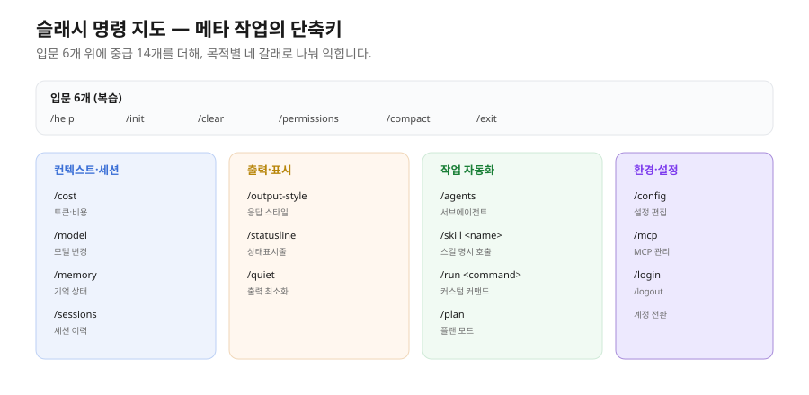
1.1 컨텍스트·세션 관리
| 명령 |
동작 |
언제 쓰나 |
/cost |
현재 세션의 토큰 사용량·비용 |
세션 끝 무렵 / 비싼 작업 후 |
/model |
사용할 모델 변경 (Opus/Sonnet/Haiku) |
작업 복잡도가 바뀔 때 |
/memory |
현재 세션의 Auto Memory 상태 |
무엇이 기억되고 있는지 점검할 때 |
/sessions |
세션 목록·이력 |
이전 세션으로 돌아갈 때 |
1.2 출력·표시 제어
| 명령 |
동작 |
언제 쓰나 |
/output-style |
응답 스타일 변경 (간결/상세/기술) |
작업 톤을 바꾸고 싶을 때 |
/statusline |
상태표시줄 커스터마이즈 |
사용자 정보·지표를 표시할 때 |
/quiet |
출력 최소화 |
발표·시연처럼 화면을 깔끔히 둘 때 |
1.3 작업 자동화
| 명령 |
동작 |
언제 쓰나 |
/agents |
서브에이전트 호출·관리 |
분업이 필요한 큰 작업 |
/skill <name> |
특정 스킬 명시 호출 |
자동 감지가 안 될 때 |
/run <command> |
커스텀 커맨드 실행 |
자주 쓰는 워크플로우 |
/plan |
플랜 모드 명시 진입 |
신중해야 하는 작업 |
1.4 환경·설정
| 명령 |
동작 |
언제 쓰나 |
/config |
사용자 설정 파일 편집 |
환경을 조정할 때 |
/mcp |
MCP 연결 상태·관리 |
MCP를 디버깅할 때 |
/login · /logout |
계정 전환 |
데모·다중 계정 |
💡 명령어는 변동됩니다 — 슬래시 명령은 Cowork 버전에 따라 추가·이름 변경됩니다. 위 표는 특정 시점 기준이며, 현재 사용 가능한 풀세트는 항상 /help로 확인하는 것이 정확합니다.
이 스무 개를 전부 매일 쓸 필요는 없습니다. 위 표에서 본인 업무에 가장 자주 등장할 서너 개를 골라 손에 붙이는 것이 실전 요령입니다. 대부분의 사람에게 /cost·/model·/memory·/output-style이 그 후보가 됩니다.
2. 출력 스타일(/output-style) — 본인 톤·언어·형식 맞춤
2.1 출력 스타일이 무엇인가
/output-style은 Cowork이 응답하는 톤·언어·형식을 사용자가 정의할 수 있게 하는 기능입니다. 기본 제공 스타일이 몇 개 있고, 본인이 직접 만들 수도 있습니다.
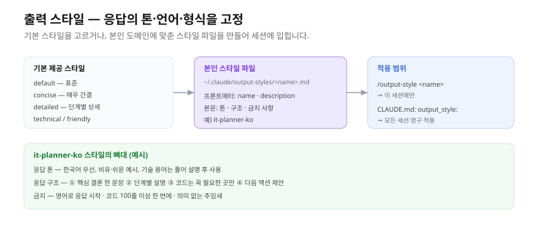
2.2 기본 제공 스타일
default — 표준 응답concise — 매우 간결 (불필요한 설명 제거)detailed — 자세한 단계별 설명technical — 기술 용어를 그대로 사용friendly — 부드러운 톤
2.3 본인 스타일 만들기
본인 스타일은 ~/.claude/output-styles/<name>.md 파일로 만듭니다. 마크다운 본문과 프론트매터(YAML)로 구성됩니다. IT 기획자에게 어울리는 한국어 톤 스타일이라면 다음과 같은 형태가 됩니다.
---
name: it-planner-ko
description: IT 기획자 친화 한국어 톤. 비개발자 용어로 설명, 코드 블록 최소화, 핵심 결론 먼저
---
# 응답 가이드라인
당신은 IT 기획자(비개발자)와 대화하는 시니어 엔지니어 역할입니다.
## 응답 톤
- 한국어로 응답 (영어 단어는 필요한 경우만 괄호 병기)
- 비유와 쉬운 예시를 적극 활용
- 기술 용어는 풀어서 설명한 뒤 사용 (예: "API — 다른 서비스에 명령을 보내는 통로")
## 응답 구조
1. 첫 줄에 핵심 결론 (한 문장)
2. 그 다음 단계별 설명
3. 코드는 꼭 필요한 곳에만, 짧게
4. 마지막에 "다음 액션" 제안
## 절대 하지 말 것
- 영어로 응답 시작
- 코드 100줄 이상 한 번에 출력
- "Sure!" "Great!" 같은 의미 없는 추임새
description은 매우 중요합니다. 사용자가 스타일을 명시 호출하지 않아도, 에이전트가 상황에 맞는 스타일을 판단하는 근거가 되기 때문입니다.
2.4 스타일 적용
세션에 적용할 때는 /output-style it-planner-ko처럼 부릅니다. 그러면 이 세션의 모든 응답이 그 스타일을 따릅니다. 특정 세션이 아니라 모든 세션에 영구 적용하려면 ~/.claude/CLAUDE.md에 output_style: it-planner-ko를 추가합니다.
본인 도메인에 맞는 출력 스타일을 하나 만들어 두면 반복 지시가 크게 줄어듭니다. 예컨대 마케터는 보고서·캠페인 카피 톤을, 데이터 분석가는 표·시각화 우선 형식을, 법무 검토자는 위험 요소·반대 의견을 명시하는 톤을, 교육 강사는 학습자 친화 단계별 설명 톤을 스타일로 고정해 두는 식입니다. 한 번 만든 뒤 일주일쯤 써 보며 어색한 부분을 보강하면 완성도가 올라갑니다.
3. 상태표시줄(statusline) 커스터마이즈
3.1 statusline이 무엇인가
상태표시줄은 화면 하단의 정보 표시줄입니다. 현재 디렉토리·git 브랜치·토큰 사용량·시간 같은 정보를 한 줄로 표시합니다. 초급에서는 기본값 그대로 두지만, 중급에서는 본인 워크플로우에 맞게 커스터마이즈합니다.
3.2 statusline 설정 방법
설정은 ~/.claude/statusline.sh 셸 스크립트나 ~/.claude/settings.json의 statusline 필드로 합니다. 단순하게는 셸 스크립트 방식이 편합니다.
#!/bin/bash
# ~/.claude/statusline.sh
dir=$(basename "$PWD")
branch=$(git branch --show-current 2>/dev/null || echo "no-git")
echo "$dir | $branch | \$$CLAUDE_SESSION_COST"
작성 후 실행 권한을 부여합니다.
chmod +x ~/.claude/statusline.sh
더 정교하게 제어하려면 settings.json 방식을 씁니다.
{
"statusline": {
"command": "~/.claude/statusline.sh",
"refresh_interval_ms": 1000
}
}
3.3 자주 쓰는 statusline 정보
상태표시줄에 담을 만한 정보는 다음과 같습니다.
- 작업 디렉토리 이름
- git 브랜치 + 변경 파일 수
- 현재 모델 (Opus/Sonnet/Haiku)
- 세션 누적 비용
- 사용 가능한 토큰
- 현재 시간
- MCP 연결 상태 (활성 개수)
전부 넣으면 오히려 시야가 어수선해집니다. 이 중 본인에게 가장 의미 있는 세 개에서 다섯 개를 골라 조합하는 것이 좋습니다.
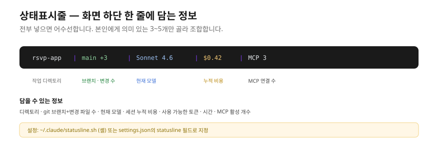
4. CLAUDE.md 심화 — 프로젝트 vs 글로벌, 모듈형 룰
4.1 위치별 CLAUDE.md
CLAUDE.md는 위치에 따라 적용 범위가 다릅니다.
| 위치 |
적용 범위 |
용도 |
~/.claude/CLAUDE.md |
모든 세션 (글로벌) |
본인 정보·선호·자주 쓰는 도구 |
<프로젝트>/CLAUDE.md |
그 프로젝트만 |
프로젝트 특성·기술 스택·규칙 |
<폴더>/.claude/CLAUDE.md |
그 폴더 하위만 |
모노레포의 특정 패키지 |
여러 위치의 CLAUDE.md가 동시에 적용되면 병합(merge)됩니다. 글로벌 → 프로젝트 → 폴더 순으로 누적되며, 아래 계층일수록 그 범위에 특화된 규칙을 담습니다.
4.2 모듈형 룰 시스템
큰 프로젝트에서 CLAUDE.md 하나에 모든 걸 적으면 5,000~10,000단어에 이릅니다. 그러면 매 세션마다 큰 컨텍스트가 소모됩니다. 이를 막는 패턴이 모듈형으로 쪼개는 것입니다.
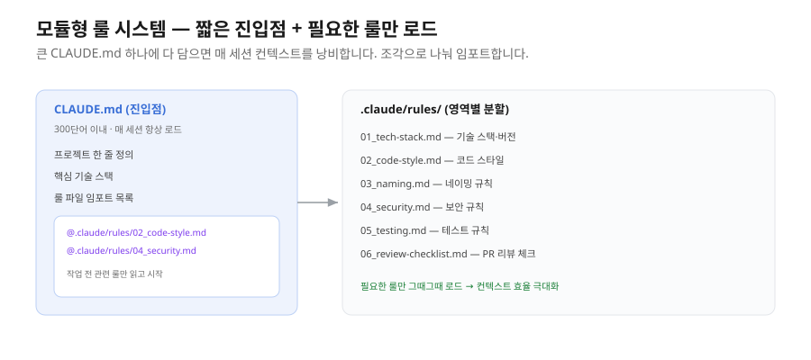
프로젝트/
├── CLAUDE.md # 짧은 진입점 (300단어 이내)
└── .claude/
└── rules/
├── 01_tech-stack.md # 기술 스택·버전
├── 02_code-style.md # 코드 스타일
├── 03_naming.md # 네이밍 규칙
├── 04_security.md # 보안 규칙
├── 05_testing.md # 테스트 규칙
└── 06_review-checklist.md # PR 리뷰 체크
진입점이 되는 CLAUDE.md는 짧게 유지하고, 세부 규칙은 룰 파일로 미룹니다.
# 프로젝트: 이벤트 RSVP
## 한 줄 정의
사내 이벤트 참석 신청·취소·정원 관리 웹앱.
## 자세한 규칙
- 기술: `.claude/rules/01_tech-stack.md`
- 스타일: `.claude/rules/02_code-style.md`
- 보안: `.claude/rules/04_security.md`
- ...
작업 전에 관련 룰 파일을 읽고 시작해주세요.
이렇게 하면 에이전트가 작업 시작 시 짧은 CLAUDE.md만 읽고, 필요한 룰만 추가로 로드합니다. 컨텍스트 효율이 극대화됩니다.
4.3 좋은 CLAUDE.md의 영역
초급에서 다룬 CLAUDE.md의 핵심 일곱 영역은 다음과 같습니다.
- 프로젝트 한 줄 정의 — 무엇을 하는 프로젝트인가
- 기술 스택 — 정확한 버전 명시
- 폴더 구조 — 트리 + 각 폴더의 역할
- 코딩 규칙 — 스타일·네이밍·import
- 환경변수 — 변수명만 (값은 절대 금지)
- 절대 하지 말 것 — 보안·운영 금기
- 사용자 정보 — 역할·선호
중급에서는 여기에 네 영역을 더합니다.
- 자주 쓰는 명령어 + 예상 동작 —
npm run dev로 무엇이 뜨는지
- 알려진 함정 — 이 프로젝트에서 자주 막히는 자리
- 외부 통합 — 어느 SaaS와 연결됐고 인증은 어떻게 하는지
- 테스트 전략 — 단위·통합·E2E 어디까지 다루는지
RSVP 서비스로 채운다면, 기술 스택 항목에는 Next.js·React·TypeScript, Tailwind와 shadcn, REST 백엔드, JWT+RBAC 인증, PostgreSQL/Supabase, RLS 정책 같은 정확한 조합을 적고, 알려진 함정에는 "정원 초과 동시 신청 시 경쟁 조건" 같은 프로젝트 고유의 위험을 기록해 두는 식입니다. 매일 다루는 프로젝트 하나에 이 구조를 갖춰 두는 것만으로도 반복 설명이 크게 줄어듭니다.
5. 대규모 코드 변경 흐름 — 탐색·재현·가설·검증
5.1 코드베이스 탐색 → 버그 수정 흐름
큰 프로젝트에 처음 들어갈 때 무작정 수정하지 않습니다. 다음 네 단계 순서를 지킵니다.
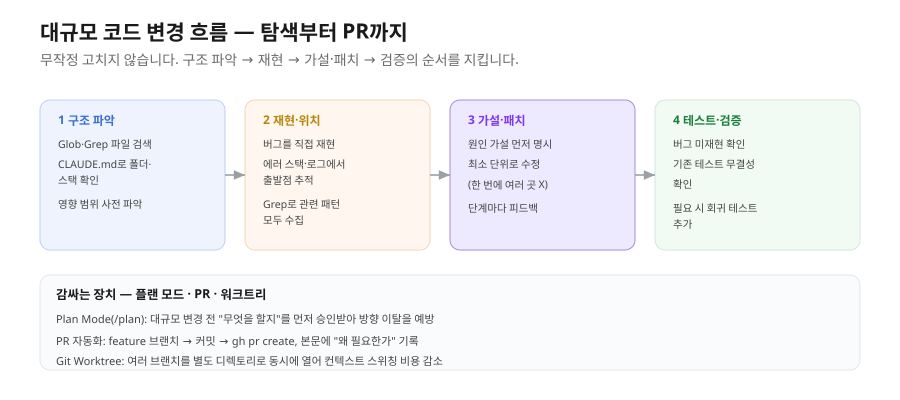
1단계: 전체 구조 파악 — /search나 로컬 Glob/Grep으로 파일 패턴(특정 함수명·클래스명)을 검색하고, CLAUDE.md에서 폴더 구조·기술 스택을 확인해 변경이 미칠 영향 범위를 사전에 파악합니다.
2단계: 버그 재현 & 정확한 위치 찾기 — 버그를 직접 재현해 보고, 에러 스택 또는 로그에서 출발 지점을 추적하며, Grep으로 관련 패턴을 모두 찾습니다.
3단계: 가설 수립 & 패치 — "이 부분이 원인일 것 같다"는 가설을 먼저 명시하고, 한 번에 여러 곳을 고치지 않고 최소 단위로 수정하며, 각 단계마다 피드백을 받습니다.
4단계: 테스트 & 검증 — 수정 후 버그가 재현되지 않는지 확인하고, 기존 테스트가 깨지지 않는지 확인하며, 필요하면 회귀 테스트를 추가합니다.
5.2 리팩토링과 Extended Thinking
읽기 좋은 코드로 변환할 때는 테스트가 필수입니다. 리팩토링 전에 기존 함수의 단위 테스트를 먼저 작성(또는 확인)하고, 큰 함수를 작은 함수들로 나누되 각 단계 후 테스트를 실행합니다.
복잡한 리팩토링 결정(타입·성능·에러 처리)이 필요하면 Extended Thinking을 활용합니다. 자연어 안에 think harder / think hard / think deeply 같은 키워드를 넣어 thinking 토큰을 늘릴 수 있습니다. 예컨대 "이 함수의 race condition을 think harder 해서 분석해줘"처럼 요청하면 더 깊은 추론을 유도합니다. 또는 /plan 모드로 들어가 단계별 계획부터 세우는 방법도 있습니다.
5.3 Plan Mode와 PR 생성
Plan Mode(/plan)는 대규모 변경 전에 "무엇을 할 것인가"를 먼저 명시하고, 사용자가 계획을 승인한 후 실행을 시작하게 합니다. 방향 이탈을 사전에 방지하는 장치입니다.
PR 생성 자동화는 feature 브랜치에서 작업해 커밋을 여러 개 만들고, 마지막에 PR을 생성하는 흐름입니다. GitHub CLI로 gh pr create --title "..." --body "..."처럼 부르며, PR 본문에는 "왜 이 변경이 필요한가"를 명확히 기록합니다.
Git Worktree로 병렬 작업도 유용합니다. git worktree add <경로> <브랜치명>으로 여러 브랜치를 동시에 별도 디렉토리로 열면, 브랜치 전환 시 디렉토리만 바꾸면 되어 컨텍스트 스위칭 비용이 줄어듭니다. 두 기능을 동시에 개발할 때 특히 효과가 큽니다.
6. 메모리 3계층 — 어디에 무엇을, 얼마나 오래 기억하나
6.1 메모리 3계층 구조
Cowork 메모리는 3계층으로 나뉩니다.
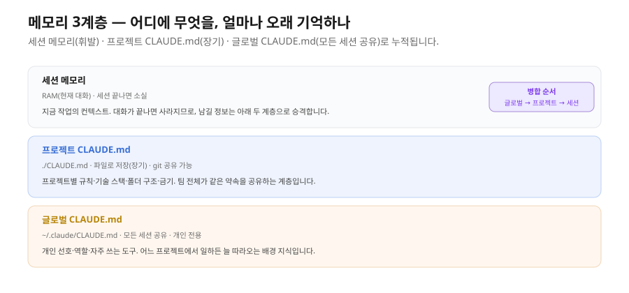
| 계층 |
위치 |
생명주기 |
용도 |
| 세션 메모리 |
RAM (현재 대화) |
세션 끝나면 소실 |
지금 작업의 컨텍스트 |
| 프로젝트 CLAUDE.md |
./CLAUDE.md |
파일로 저장 (장기) |
프로젝트별 규칙·기술 스택 |
| 글로벌 CLAUDE.md |
~/.claude/CLAUDE.md |
모든 세션 공유 |
개인 선호·자주 쓰는 도구 |
여기에 더해 자동 메모리(.claude/memory/)가 있습니다. Cowork이 대화 중 "이것은 나중에 기억해야 할 것"이라고 판단한 정보를 자동으로 저장하는 계층입니다. 예를 들어 프로젝트의 환경 변수 구조, 반복되는 에러 해결 패턴, 팀의 네이밍 규칙 같은 것이 여기에 쌓입니다.
6.2 프로젝트 CLAUDE.md 작성법 상세
프로젝트 루트의 CLAUDE.md는 "이 프로젝트와의 약속 문서"입니다. 앞의 열한 영역 중에서도 특히 프로젝트 계층에서 중요한 여덟 가지를 갖춥니다. 프로젝트 한 줄 정의, 기술 스택(정확한 버전 — 예: Node 18.4+, React 19.0), 폴더 구조(트리 + 각 폴더 역할), 코딩 규칙(스타일·네이밍·import 순서), 환경변수(변수명 나열만, 값은 절대 금지), 절대 하지 말 것(예: "DB 마이그레이션은 자동화 금지"), 자주 쓰는 명령(예: npm run dev로 무엇이 뜨는지), 알려진 함정입니다.
임포트 문법(@ 경로) — CLAUDE.md 안에 다른 문서를 포함하려면 @ 경로를 씁니다.
# 프로젝트: 이벤트 RSVP
## 기술 스택
- Next.js, React, TypeScript
## 코드 스타일
@.claude/rules/code-style.md
## 보안 규칙
@.claude/rules/security.md
그러면 Cowork이 세션 시작 시 자동으로 .claude/rules/*.md를 로드합니다. 4장의 모듈형 룰 시스템이 실제로 동작하는 원리가 바로 이 임포트 문법입니다.
6.3 Auto Memory 운영 원칙
자동 메모리는 무엇을 담느냐가 품질을 좌우합니다. 저장할 것은 사용자가 반복해서 강조하는 선호(예: "항상 테스트 먼저"), 프로젝트 결정 사항(예: "데이터베이스는 PostgreSQL로 가기로 함"), 외부 시스템 연결(예: "버그는 Sentry에 자동 집계")입니다. 저장하지 말 것은 코드 안에 이미 있는 정보(git log, 파일 구조), 일회성 작업 디테일, 민감 정보(비밀번호·토큰)입니다.
/memory 명령으로 현재 자동 메모리 상태를 확인하고, 불필요하거나 충돌하는 메모리는 수동으로 삭제합니다.
7. Auto Memory 의도적 운영
7.1 Auto Memory가 무엇인가
Auto Memory는 Cowork이 세션을 거치며 사용자에 대한 정보를 자동으로 기억하는 기능입니다. 사용자가 명시적으로 시키지 않아도 "이 사람은 한국어 답변을 좋아하는구나", "이 사람은 ESLint 검사를 매번 하는구나" 같은 패턴을 학습해 다음 세션에 적용합니다.
7.2 메모리의 4가지 종류
| 종류 |
무엇 |
예시 |
| user |
사용자 정보 |
"IT 기획자, 비개발자, 한국어 선호" |
| feedback |
행동 피드백 |
"코드는 항상 테스트 포함 요청, 간결한 설명 선호" |
| project |
프로젝트 컨텍스트 |
"이 프로젝트는 React 기반 RSVP 앱, DB는 PostgreSQL" |
| reference |
외부 시스템 |
"버그 추적은 Linear, 배포는 Vercel" |
이 네 가지는 6장의 글로벌·프로젝트·세션 메모리와 함께 누적돼 다음 작업에 자동으로 적용됩니다.
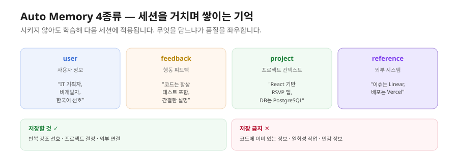
7.3 메모리 디렉토리 구조
자동 메모리는 .claude/memory/ 아래에 마크다운 파일로 저장됩니다. 각 파일이 하나의 기억 단위입니다.
.claude/memory/
├── user_role.md # "IT 기획자, 비개발자"
├── feedback_testing.md # "테스트는 항상 포함"
├── project_rsvp-app.md # "React + PostgreSQL"
└── reference_linear.md # "이슈는 Linear에"
/memory 명령으로 현재 활성 메모리 목록을 조회하고, 불필요한 메모리는 수동으로 삭제합니다. 본인이 자주 시키는 패턴 서너 개를 user·feedback 메모리로 명시적으로 등록해 두면, 이후 세션에서 같은 지시를 반복하지 않아도 됩니다. 메모리 파일 하나의 실제 내용은 이렇게 짧은 마크다운입니다.
<!-- .claude/memory/feedback_testing.md -->
# 테스트 선호
- 코드 작성 시 항상 단위 테스트를 함께 요청함
- 설명은 간결하게, 결론부터
- ESLint 통과를 매번 확인
``` 시간이 지나면 오래되거나 상충하는 정보가 쌓이므로, 주기적으로 점검해 정리하는 습관이 좋습니다.
---
## 8. 권한·안전 정책 — Permission Mode와 규칙 문법
### 8.1 Permission Mode 5가지
Cowork은 파일 수정, 셸 실행, 외부 API 호출 같은 위험한 작업 전에 사용자 승인을 받도록 설계돼 있습니다. 여기에는 다섯 가지 모드가 있습니다.

| 모드 | 수준 | 특징 |
|---|---|---|
| **Unrestricted** | 제약 없음 | AI가 자유롭게 행동 (테스트 환경만) |
| **Standard** | 기본값 | 쓰기·삭제·외부 통신 시 확인 필요 |
| **Strict** | 엄격 | 모든 파일 접근·셸 실행 시 확인 필요 |
| **Read-Only** | 읽기만 | 파일 읽기만 가능, 수정·실행 불가 |
| **Sandbox** | 격리 | 프로젝트 폴더 외부 접근 차단 |
세션 중에는 `/permission strict`처럼 변경하고, 프로젝트 기본값은 CLAUDE.md의 `permissions:` 섹션에 `mode: standard`처럼 적어 둡니다.
### 8.2 권한 규칙 문법 (세밀한 제어)
프로젝트별로 파일·명령 단위까지 세밀한 규칙을 정의할 수 있습니다.
```markdown
permissions:
mode: standard
rules:
- allow: "write" on: "src/**/*.ts"
- deny: "execute" on: "rm *"
- require_approval: "before" "npm install"
- allow: "api_call" to: "api.example.com"
규칙은 위에서부터 차례로 매칭되고 첫 번째 매치가 우선권을 가집니다. 글롭 패턴(src/**/*.ts)과 정규식을 지원하며, 우선순위는 보안을 우선해 deny > require_approval > allow 순입니다.
Python 데이터 분석 프로젝트를 운영하는 IT 기획자라면 다음처럼 구성할 수 있습니다.
permissions:
mode: standard
rules:
# 데이터 폴더는 읽기만
- allow: "read" on: "data/**/*"
- deny: "write" on: "data/**/*"
# 스크립트 수정은 OK
- allow: "write" on: "scripts/**/*.py"
# pip install 전에는 항상 확인
- require_approval: "before" "pip install"
# 외부 API는 내부 도메인만
- allow: "api_call" to: "*.company.com"
- deny: "api_call" to: "*"
8.3 도구별 권한 분리
각 도구에 대해 개별 권한을 설정할 수 있습니다.
| 도구 |
설명 |
| bash |
셸 명령 실행 |
| file_create |
새 파일 생성 |
| file_modify |
기존 파일 수정 |
| file_delete |
파일 삭제 |
| git_commit |
깃 커밋 생성 |
| api_call |
HTTP 요청 |
| install_package |
npm/pip 패키지 설치 |
/permissions list 명령으로 현재 활성 규칙을 확인합니다.
8.4 샌드박싱과 설정 우선순위
Sandbox Mode는 프로젝트 폴더 외부의 파일 시스템 접근을 차단합니다. 위험한 실험이 필요하거나 신뢰하기 어려운 작업을 할 때 활용합니다.
설정 우선순위는 높은 것부터 다음 순서입니다.
- 현재 세션의
/permission 명령어
- 프로젝트 CLAUDE.md의
permissions: 섹션
- 글로벌
~/.claude/CLAUDE.md의 설정
- 기본값 (Standard mode)
안전 패턴은 처음에는 Strict로 시작해 신뢰할 수 있는 작업만 Allow로 전환하고, 임시로 권한을 완화했다면 명시적으로 다시 Strict로 복구하며, 위험한 명령(rm, git reset --hard) 전에는 백업을 확인하는 것입니다.
9. 컨텍스트 모니터링 — /cost·토큰 사용량 추적
9.1 왜 컨텍스트를 모니터링하나
Claude Sonnet 4.6의 컨텍스트 윈도우는 1M 토큰입니다. 큰 것 같지만, 실제로는 다음이 모두 이 안에 들어갑니다.
- 시스템 프롬프트 (수십~수백 토큰)
- 활성화된 MCP의 메타데이터 (개당 1~5K 토큰. 30개 켜두면 30~150K)
- CLAUDE.md 및 임포트된 문서 (1~10K)
- 누적 대화 (점점 증가)
- 에이전트가 읽은 파일 (큰 코드베이스면 수만 토큰)
큰 프로젝트에서는 컨텍스트가 빠르게 80%까지 차고, 그 시점부터 응답 품질이 떨어집니다. 모니터링이 필수인 이유입니다.
9.2 모니터링 도구
| 명령·도구 |
보여주는 것 |
/cost |
현재 세션 누적 토큰·비용 |
| Cowork 상태표시줄 |
실시간 토큰 사용량 (커스텀 시) |
| Anthropic Console |
월간 누적 + 모델별 분포 |
9.3 컨텍스트 한도 도달 시 대응
1순위 — /compact — 누적 대화를 요약 형태로 압축합니다. 토큰이 절반 정도 줄어듭니다. 다만 압축 과정에서 일부 디테일이 사라질 수 있습니다.
2순위 — /clear — 누적 대화를 모두 지우고 새 세션을 시작합니다. CLAUDE.md만 남습니다. 가장 깔끔하지만 "지금까지 한 일"의 컨텍스트가 사라집니다.
3순위 — 세션 분할 — 큰 작업을 작은 작업으로 쪼개 여러 세션에서 처리합니다. 각 세션 끝에 결과를 파일로 저장하고, 다음 세션에서 그 파일을 읽어 이어갑니다.
4순위 — 서브에이전트 위임 — 작업을 서브에이전트로 분리합니다. 메인은 큰 그림만 잡고 디테일은 하위 에이전트에 맡깁니다.
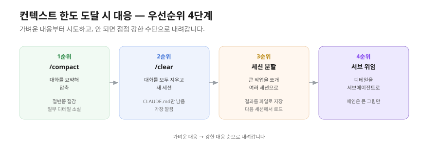
9.4 모델 선택 정책
비용·속도·품질의 균형을 위해 작업 유형별로 모델을 매핑합니다.
| 작업 유형 |
권장 모델 |
이유 |
| 분류·요약·번역·이메일 초안 |
Haiku 4.5 |
가장 저렴·빠름. 충분함 |
| 일반 코드 수정·문서 작성 |
Sonnet 4.6 |
디폴트 |
| 복잡한 멀티스텝·전략 추론 |
Opus 4.8 |
비용은 높지만 품질 차이가 결정적 |
| 짧은 채팅 응답 |
Haiku 4.5 |
저렴·빠름 |
| 큰 리팩토링·설계 |
Opus 4.8 |
품질 우선 |
모델별 가격은 Opus 4.8이 입력 100만 토큰당 $5·출력 $25, Sonnet 4.6이 $3·$15, Haiku 4.5가 $1·$5입니다. 세션 중에는 /model 명령으로 언제든 바꿀 수 있으므로, 작업 복잡도가 달라지는 지점마다 모델을 갈아 끼우는 것이 비용 관리의 핵심입니다.
10. 도트파일(.claude/) 운영 — 팀 공유 가능한 설정
10.1 도트파일이 무엇인가
.claude/ 디렉토리는 Cowork 환경의 모든 설정·룰·스킬·커맨드를 담는 폴더입니다. git에 커밋해서 팀과 공유할 수 있습니다.
10.2 표준 구조
.claude/
├── settings.json # 기본 설정
├── CLAUDE.md (또는 ../CLAUDE.md)
├── rules/ # 모듈형 룰
│ ├── code-style.md
│ ├── security.md
│ └── testing.md
├── output-styles/ # 출력 스타일
├── memory/ # 프로젝트 메모리 (일부는 .gitignore)
├── skills/ # 스킬
├── commands/ # 커스텀 커맨드
├── agents/ # 서브에이전트
├── hooks/ # hooks
└── statusline.sh # 상태표시줄
10.3 팀 공유 패턴
핵심은 공유할 것과 개인용을 나누는 것입니다.
팀 공통 설정은 프로젝트에 커밋합니다 — .claude/rules/(코드 스타일·보안 규칙), .claude/skills/(도메인 스킬), .claude/commands/(자주 쓰는 워크플로우), .claude/agents/(코드 리뷰 등).
개인 정보는 글로벌에 둡니다 — ~/.claude/CLAUDE.md(개인 선호), ~/.claude/output-styles/(개인 톤), ~/.claude/memory/(개인 메모리).
이 분리 덕분에 프로젝트 도트파일은 git에 올라가도 안전하고, 글로벌은 본인만의 것으로 유지됩니다.
10.4 .gitignore 패턴
프로젝트 .gitignore에 다음을 추가해, 개인 메모리·캐시·인증 정보가 공유되지 않게 합니다.
.claude/memory/ # 개인 메모리는 공유 안 함
.claude/.cache/ # 캐시 폴더
.claude/cookies.json # OAuth 쿠키 등
이렇게 도트파일을 정리해 두면, 동료가 git clone 후 곧바로 본인과 같은 Cowork 환경을 갖추게 됩니다. 이것이 개인의 설정을 넘어 팀의 자산으로 발전시키는 방법입니다.
용어 정리
| 용어 |
뜻 |
| 슬래시 명령 |
/로 시작하는 메타 작업 단축키. 중급에서 20개+로 확장 |
| 출력 스타일 |
응답의 톤·언어·형식을 정의하는 설정(/output-style) |
| 상태표시줄(statusline) |
화면 하단에 디렉토리·브랜치·비용 등을 한 줄로 표시 |
| 위치별 CLAUDE.md |
글로벌·프로젝트·폴더 계층으로 나뉘어 병합되는 온보딩 문서 |
| 모듈형 룰 |
짧은 진입점 + .claude/rules/로 나눠 필요한 룰만 로드하는 구조 |
임포트 문법(@) |
CLAUDE.md 안에서 다른 문서를 자동 로드하는 참조 |
| 메모리 3계층 |
세션(휘발)·프로젝트·글로벌로 나뉜 기억 구조 |
| Auto Memory |
세션을 거치며 자동으로 쌓이는 기억(user/feedback/project/reference) |
| Permission Mode |
Unrestricted·Standard·Strict·Read-Only·Sandbox 5가지 권한 수준 |
| 권한 규칙 문법 |
allow·deny·require_approval로 파일·명령 단위를 제어하는 규칙 |
| Extended Thinking |
think harder 등 키워드로 추론 토큰을 늘리는 방식 |
| Git Worktree |
여러 브랜치를 별도 디렉토리로 동시에 여는 병렬 작업 기법 |
도트파일(.claude/) |
설정·룰·스킬·커맨드를 담아 팀과 공유하는 디렉토리 |
/compact · /clear |
컨텍스트를 압축하거나 비워 한도 초과에 대응하는 명령 |
한눈에 정리
- 슬래시 명령은 목적별로 익힙니다. 컨텍스트·세션 / 출력·표시 / 작업 자동화 / 환경·설정의 네 갈래로 나누고, 그중 매일 쓸 서너 개를 손에 붙입니다.
- 출력 스타일과 상태표시줄로 환경을 본인화합니다. 응답 톤을 파일로 고정하고, 화면 하단에 의미 있는 지표를 띄우면 반복 지시가 줄어듭니다.
- CLAUDE.md는 3계층·모듈형으로 발전시킵니다. 짧은 진입점 +
@ 임포트로 필요한 룰만 로드해 컨텍스트를 아낍니다.
- 메모리와 권한은 의도적으로 운영합니다. Auto Memory 4종류를 명시 등록하고, Permission Mode와 규칙 문법으로 안전 경계를 세밀하게 정합니다.
- 대규모 변경은 순서를 지키고, 컨텍스트는 계속 모니터링합니다. 탐색→재현→가설→검증의 흐름과
/cost·모델 정책이 결합되면 비용과 품질을 함께 관리할 수 있습니다.
다음 강에서는 스킬·커스텀 커맨드·서브에이전트를 직접 만들어 조직의 도메인 지식을 자산화하고, 이를 플러그인으로 묶어 사내에 배포하는 방법을 다룹니다.
3부 · 중급
코딩 with Claude 중급 2강. 커스텀 커맨드 — 변수·복합 워크플로우·스킬로의 진화·MCP 통합
유형: 이론 (다이어그램 보강판) · 읽는 데 약 45분
선수: 초급 2강(에이전트 엔진 원리 — 커스텀 커맨드·스킬·MCP 개념) + 중급 1강. 커스텀 커맨드가 "자주 쓰는 워크플로우의 단축키"라는 것과, 스킬이 "도메인 지식 패키지(SOP)"라는 차이를 알고 있어야 합니다.
이 강을 마치면: ① .claude/commands/ 폴더 구조와 위치별 우선순위를 설명한다 ② 변수(위치·명명·기본값)로 하나의 커맨드를 여러 상황에 재사용하는 방식을 이해한다 ③ 언제 커맨드를 스킬로 진화시켜야 하는지, 복합 워크플로우와 MCP 통합을 어떻게 설계하는지 판단한다.
0. 들어가며 — 단축키에서 자산으로
초급 과정에서 커스텀 커맨드의 개념을 다뤘습니다. 자주 쓰는 작업을 슬래시 명령으로 만들어두는 단축키이고, 스킬과 비슷해 보이지만 역할이 다르다는 점 — 커맨드는 "무엇을 할 것인가"의 워크플로우이고 스킬은 "어떻게 하는가"의 도메인 지식이라는 점까지 정리했습니다. 이 강은 그 개념을 실제로 설계·운영하는 단계로 넘어갑니다.
이 강에서 다룰 내용은 다음 여섯 가지입니다.
| # |
주제 |
한 줄 요약 |
| 1 |
폴더 구조와 우선순위 |
커맨드가 어디에 놓이고, 이름이 겹치면 어느 것이 이기는가 |
| 2 |
변수와 동적 커맨드 |
하나의 커맨드를 상황마다 다르게 쓰는 법 |
| 3 |
커맨드에서 스킬로의 진화 |
언제 커맨드를 스킬로 승격시켜야 하는가 |
| 4 |
복합 워크플로우 |
여러 단계를 순차로 잇고, 출력을 다음 입력으로 넘기는 파이프라인 |
| 5 |
MCP 통합 |
커맨드·스킬이 외부 도구를 불러 실제 데이터를 다루는 법 |
| 6 |
팀 자산화 |
커맨드·스킬을 사내에 공유해 조직 자산으로 만드는 구조 |
📌 러닝 예시 — 이 강에서는 사내 이벤트 RSVP 서비스(참석 신청·취소·정원 관리)를 예시로 씁니다. 실제로 자주 마주치는 "행사 신청자 현황을 정리하고 리포트로 발행하는" 작업을 커맨드·스킬로 만들어가며 설명합니다.
1. .claude/commands/ 폴더 구조와 우선순위
1.1 위치별 우선순위
커스텀 커맨드는 .claude/commands/ 폴더에 놓입니다. 이 폴더는 세 위치에 존재할 수 있고, 각각 적용 범위가 다릅니다.
| 위치 |
적용 범위 |
~/.claude/commands/ |
모든 세션 (개인 글로벌) |
<프로젝트>/.claude/commands/ |
그 프로젝트 안에서만 |
<폴더>/.claude/commands/ |
그 폴더 하위에서만 |
여러 위치에 같은 이름의 커맨드가 있으면 가까운 쪽이 우선합니다. 우선순위는 폴더 > 프로젝트 > 글로벌 순입니다.
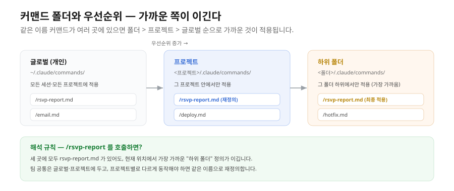
이 규칙은 실무에서 유용합니다. 예를 들어 rsvp-report라는 커맨드를 개인 글로벌(~/.claude/commands/)에 하나 두면 모든 세션에서 기본 동작을 쓰다가, 특정 RSVP 프로젝트 안에서는 그 프로젝트의 데이터 소스나 출력 형식에 맞춰 <프로젝트>/.claude/commands/rsvp-report.md로 같은 이름을 재정의할 수 있습니다. 이렇게 하면 그 프로젝트 안에서는 프로젝트용 정의가, 바깥에서는 글로벌 정의가 적용됩니다. 팀 공통으로 쓰는 표준 워크플로우는 글로벌·프로젝트에 두고, 프로젝트마다 다르게 동작해야 하는 부분만 가까운 곳에서 덮어씁니다.
1.2 파일 형식 — 파일명이 곧 명령어
각 커맨드는 마크다운 파일 하나입니다. 파일명이 그대로 명령어가 됩니다.
~/.claude/commands/
├── rsvp-report.md → /rsvp-report 실행
├── code-review.md → /code-review
└── email.md → /email
1.3 마크다운 본문 = 시스템 프롬프트
파일 내용은 그 명령을 호출할 때 에이전트에게 전달되는 시스템 프롬프트입니다. 즉 커맨드를 작성한다는 것은 "이 명령을 부르면 에이전트가 어떤 역할로, 무엇을, 어떤 형식으로 하라"를 미리 적어두는 일입니다. RSVP 주간 현황 리포트를 만드는 커맨드라면 본문에 다음과 같은 내용이 들어갑니다.
# RSVP 주간 현황 리포트
당신은 사내 행사팀의 데이터 어시스턴트입니다. 다음을 수행하세요.
1. 지난 7일간 RSVP 신청·취소·대기 내역을 조회
2. 정원 대비 참석 확정률과 취소율을 산출
3. 정원 초과·미달 행사가 있으면 표시
4. 결과를 마크다운 리포트로 정리
## 출력 형식
- H1: "RSVP 주간 현황 — {날짜}"
- 섹션: 신청 현황 / 참석률 / 취소·대기 / 이슈
이 파일이 있으면 /rsvp-report를 호출할 때 위 시스템 프롬프트가 적용됩니다.
1.4 한국어 명령어
/주간보고처럼 한국어 명령어도 잘 동작합니다. 다만 매일 타이핑하는 커맨드라면 영문이 더 빠를 수 있으니, 손에 붙는 쪽으로 정하면 됩니다.
2. 변수와 동적 커맨드
같은 커맨드를 상황마다 조금씩 다르게 쓰고 싶을 때 변수를 씁니다. 호출할 때 넘긴 값이 본문의 자리표시자로 치환되어, 하나의 커맨드가 여러 상황을 처리하게 됩니다.
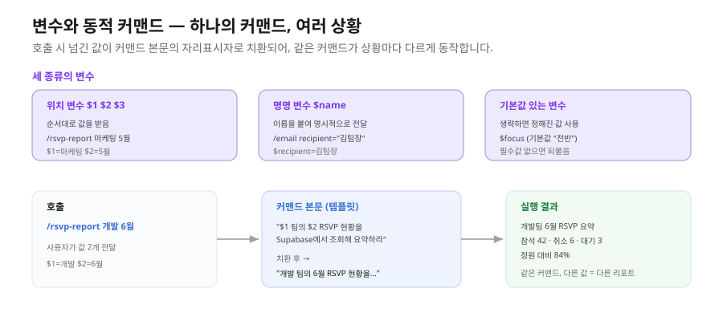
2.1 위치 변수
명령 호출 시 넘긴 값을 본문에서 $1, $2, ... 형태로 참조합니다. 순서대로 대응됩니다. RSVP 리포트를 부서별·기간별로 만드는 커맨드라면 본문은 다음처럼 구성합니다.
# RSVP 리포트 — 부서별·기간별
당신은 행사팀 데이터 어시스턴트입니다.
$1 부서의 $2 RSVP 현황을 조회해 리포트로 작성하세요.
## 입력
- 부서: $1
- 기간: $2
이 커맨드를 /rsvp-report 개발 6월로 호출하면 $1은 "개발", $2는 "6월"로 치환되어, "개발 부서의 6월 RSVP 현황"을 정리하게 됩니다.
2.2 명명 변수
위치 변수 외에 이름을 붙인 명명 변수도 쓸 수 있습니다. 인자가 많거나 순서가 헷갈릴 때 명확합니다.
# 이메일 작성
수신자: $recipient
주제: $subject
톤: $tone
호출은 /email recipient="김팀장" subject="예산 승인" tone="공식적"처럼 이름과 값을 함께 넘깁니다.
2.3 기본값과 필수값
변수에 기본값을 지정하면, 값을 생략했을 때 정해진 값이 쓰입니다. 반대로 필수 변수를 비워두면 에이전트가 사용자에게 다시 물어봅니다.
# 코드 리뷰
대상: $file (필수)
초점: $focus (기본값: "전반")
$file 없이 호출하면 에이전트가 어떤 파일을 리뷰할지 되묻고, $focus를 안 주면 "전반"으로 진행합니다.
2.4 변수 활용 예시
변수는 "같은 뼈대에 값만 바꿔 끼우는" 작업에서 특히 강력합니다.
| 커맨드 |
변수 |
용도 |
/번역 $언어 |
$언어 |
"한→영" 또는 "영→한" |
/요약 $길이 |
$길이 |
"1줄" / "1단락" / "1페이지" |
/rsvp-report $부서 $기간 |
$부서 $기간 |
부서·기간별 RSVP 현황 |
/배포 $환경 |
$환경 |
"preview" 또는 "production" |
3. 커맨드에서 스킬로의 진화
초급 과정에서는 "마크다운 파일 1개 = 커맨드 1개" 패턴을 배웠습니다. 이를 커맨드 방식이라 부른다면, 반복 작업이 많아지고 규모가 커질수록 스킬(Skill) 방식으로 전환하는 편이 유리합니다.
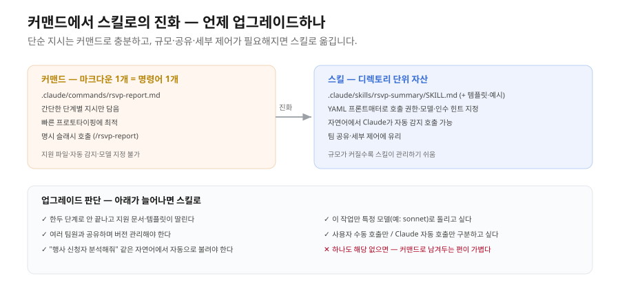
3.1 커맨드 vs 스킬 — 언제 업그레이드할까
커맨드(.claude/commands/rsvp-report.md)는 마크다운 한 파일이 한 명령어입니다. 간단한 단계별 지시만 담고, 빠른 프로토타이핑에 좋습니다. 다만 지원 문서를 함께 두거나, 세부 호출 규칙을 지정하거나, 자연어에서 자동으로 불리게 하는 것은 되지 않습니다.
스킬(.claude/skills/rsvp-summary/SKILL.md)은 디렉토리 단위로 관리됩니다. 지원 문서·예시 파일을 함께 보관할 수 있고, YAML 프론트매터로 호출 권한·모델 선택·인수 힌트를 명시할 수 있으며, Claude가 자동으로 판단해 호출할지 결정하는 자동 감지가 가능합니다. 규모가 커질수록, 팀 공유가 많을수록, 세부 제어가 필요할수록 스킬이 관리하기 쉽습니다.
3.2 스킬의 폴더 구조
스킬은 디렉토리 안에 진입점인 SKILL.md와 선택적 지원 파일을 함께 둡니다.
.claude/skills/
├── rsvp-summary/ # 이벤트 RSVP 통계 스킬
│ ├── SKILL.md # 필수: 진입점 (프론트매터 + 지시사항)
│ ├── query-templates.md # 선택: 조회 템플릿
│ └── examples/
│ └── sample-report.md # 선택: 예시
├── internal-report-auto/
│ ├── SKILL.md
│ └── header-footer.md
스킬에도 위치별 우선순위가 있습니다. ~/.claude/skills/는 모든 세션에 적용되는 개인 글로벌, .claude/skills/는 그 프로젝트에만 적용됩니다.
3.3 SKILL.md 프론트매터 핵심
스킬의 동작을 제어하는 정보는 YAML 프론트매터에 담깁니다.
---
name: rsvp-summary
description: 이벤트 RSVP 등록자 통계 및 참석 현황 요약. 사용자가 이 스킬을 호출할 때 보는 설명이자, Claude가 자동 감지 판단할 때도 참고하는 핵심 필드.
argument-hint: "[이벤트명]" # 자동완성 힌트
disable-model-invocation: false # true = 사용자 수동 호출만 (Claude 자동 실행 차단)
user-invocable: true # false = Claude만 호출 가능 (슬래시 메뉴에서 숨김)
model: sonnet # 이 스킬 전용 모델 (opus, sonnet, haiku)
---
# 이벤트 RSVP 통계 요약
당신의 역할과 지시사항...
description은 특히 중요합니다. 에이전트가 사용자 발화에서 "어떤 스킬을 쓸까"를 판단할 때 이 설명을 보고 결정하기 때문입니다. 트리거 키워드가 명확할수록 자동 감지 정확도가 올라갑니다.
3.4 권한 제어 — 자동/수동 호출 구분
프론트매터의 두 필드로 호출 방식을 통제할 수 있습니다.
사용자 수동 호출만 (Claude 자동 실행 금지) — 기밀 리포트처럼 사용자가 명시적으로 요청할 때만 돌아야 하는 스킬에는 disable-model-invocation: true를 줍니다. 그러면 사용자가 직접 슬래시 명령을 입력해야 실행되고, Claude가 "리포트 만들어드릴까요?"라며 자동으로 호출하지 않습니다.
---
name: sensitive-report
description: 기밀 보고서 자동 생성 (수동 요청만)
disable-model-invocation: true
---
Claude만 호출 가능 (메뉴에서 숨김) — 반대로 파일 저장 후 자동 린트처럼 사람이 직접 부를 일이 없는 스킬에는 user-invocable: false를 줍니다. 사용자는 이 스킬을 수동으로 치지 못하고, Claude가 상황을 판단해 자동으로만 호출합니다.
---
name: auto-lint
description: 코드 변경 후 자동 린트 (사용자 호출 불가)
user-invocable: false
---
3.5 스킬의 두 가지 진입로 — 명시 호출과 자동 감지
스킬은 두 방식으로 호출됩니다. 이 이중성이 스킬의 강력함입니다.
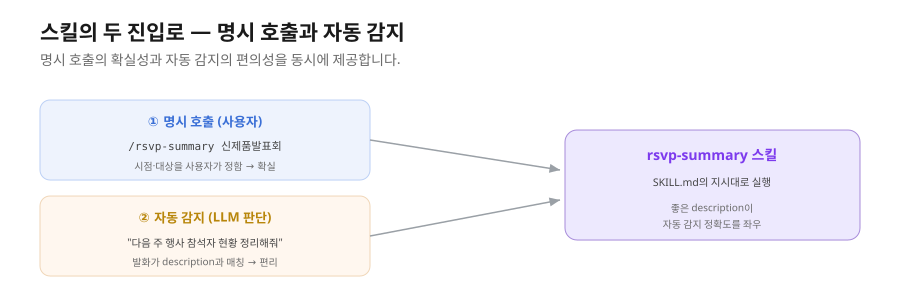
① 직접 호출 (사용자 명시) — 사용자가 /rsvp-summary 2026년5월신제품발표회처럼 슬래시 명령을 직접 타이핑해 호출합니다. 시점과 대상을 사용자가 정하므로 확실합니다.
② 자동 감지 (LLM 판단) — 사용자 요청의 의도가 스킬의 description과 매칭되면 Claude가 스스로 호출을 판단합니다. 예를 들어 사용자가 "다음 주 행사 참석자 현황 정리해줘"라고 말하면, Claude가 RSVP 요약 스킬을 떠올려 자동 호출을 고려합니다. 편리하지만 LLM 판단이므로 오판 가능성이 있어, 좋은 description이 핵심입니다.
---
name: rsvp-summary
description: "이벤트 RSVP 등록자 통계 및 참석 현황 요약"
---
위처럼 구체적으로 적으면, 사용자가 "행사 신청자 분석"이나 "참석 확정 인원 파악" 같은 요청을 했을 때 Claude가 이 스킬을 떠올리기 쉽습니다. 반대로 설명이 모호하면 Claude가 놓칩니다. 정리하면, 스킬은 명시 호출의 확실성과 자동 감지의 편의성을 동시에 제공합니다.
4. 복합 워크플로우 — 여러 단계를 잇는다
4.1 단순 명령 vs 복합 워크플로우
한 가지 작업만 하는 것이 단순 명령(/요약, /번역)이라면, 여러 단계가 순차로 실행되는 것이 복합 워크플로우입니다. 예를 들어 RSVP 주간 리포트는 "신청 로그 조회 → 분류·집계 → 리포트 작성 → 발행"처럼 여러 단계로 이뤄집니다. 복합 워크플로우는 이 단계들을 본문에 명시적으로 지시해야 합니다.
4.2 단계 명시 패턴
복합 워크플로우의 본문은 입력·단계·출력·진행 원칙을 나눠 적습니다. 신제품 발표회 준비를 위한 멀티 채널 콘텐츠 자동화라면 다음과 같은 구조가 됩니다.
# 이벤트 홍보 콘텐츠 자동화
당신은 행사 홍보 콘텐츠 제작을 책임지는 PM입니다.
## 입력
- 이벤트명: $1
- 개최일: $2
- 핵심 가치: $3
## 단계별 진행
### 단계 1 — 보도자료 작성
한국어 보도자료 1장 (역피라미드 구조).
출력: outputs/{이벤트명}_보도자료.md
### 단계 2 — SNS 콘텐츠 3종
인스타 카드뉴스 대본, 블로그 SEO 글, X 임팩트 트윗+스레드.
출력: outputs/{이벤트명}_sns.md
### 단계 3 — 초대 이메일
주요 고객사에 보낼 RSVP 초대 이메일 초안.
출력: outputs/{이벤트명}_email.md
### 단계 4 — 결과 정리
세 산출물 링크와 사용 가이드를 종합한 요약.
출력: outputs/{이벤트명}_summary.md
## 진행 원칙
- 각 단계 전 plan 표시 후 사용자 승인
- 단계 사이에 결과를 보여주고 "다음 단계로?" 묻기
- 막히면 추측하지 말고 사용자에게 묻기
4.3 단계 사이 검증·재실행
복합 워크플로우의 가치는 "각 단계 결과를 검토한 뒤 다음으로" 넘어가는 데 있습니다. 사용자가 단계 1(보도자료) 결과가 마음에 안 들면 단계 1만 다시 실행하면 됩니다. 앞뒤 단계를 통째로 다시 돌릴 필요가 없습니다. 각 단계 사이에 검토 지점을 두는 것이 복합 워크플로우 설계의 핵심입니다.
4.4 파이프라인 — 출력이 다음 입력
복합 워크플로우의 대표 형태가 파이프라인입니다. 한 단계의 출력이 다음 단계의 입력이 됩니다. RSVP 현황 리포트를 파이프라인으로 짜면 다음과 같습니다.
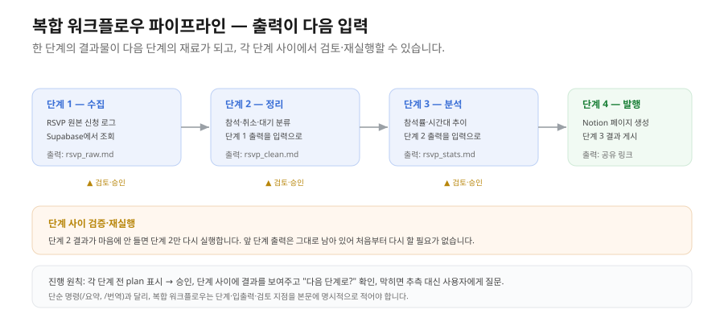
# RSVP 현황 리포트 파이프라인
## 단계 1 — 수집
입력: Supabase의 RSVP 신청 로그
출력: 구조화된 원본 → rsvp_raw.md
## 단계 2 — 정리 (단계 1 결과 사용)
참석 확정·취소·대기로 분류.
출력: rsvp_clean.md
## 단계 3 — 분석 (단계 2 결과 사용)
정원 대비 참석률, 시간대별 등록 추이, 재확인 필요 인원 산출.
출력: rsvp_stats.md
## 단계 4 — 발행 (단계 3 결과 사용)
분석 결과를 Notion 페이지로 게시.
출력: 공유 링크
각 단계의 출력이 다음 단계의 입력이 되고, 에이전트가 자동으로 연결합니다. 각 단계 사이에서 검토·승인·재실행이 가능하므로, 단계 2의 분류 기준이 틀렸다면 단계 2만 다시 돌리고 이후로 이어갑니다.
5. 외부 도구(MCP) 통합
5.1 커맨드 안에서 MCP 호출
커맨드나 스킬 본문에 "어느 MCP를 사용해서 무엇을 하라"고 명시하면, 에이전트가 자동으로 그 MCP를 호출합니다. RSVP 운영을 위한 아침 브리핑 커맨드라면 다음처럼 각 단계에 쓸 MCP를 지목합니다.
# RSVP 아침 브리핑
매일 아침 호출되는 커맨드입니다. 다음을 자동 수행하세요.
1. Google Sheets MCP: 어제 새로 들어온 RSVP 신청·취소 내역 요약
2. Calendar MCP: 오늘·이번 주 예정 행사 일정
3. Gmail MCP: RSVP 확인 메일 중 미응답자 추출
4. Slack MCP: 행사팀 채널에서 미응답 멘션 5개
## 출력
한 마크다운 페이지 + Notion에 자동 발행
5.2 여러 MCP 조합 패턴
실무에서 자주 쓰이는 MCP 조합은 대체로 정해져 있습니다.
| 조합 |
용도 |
| Gmail + Calendar + Notion |
일일 디브리프·주간 정리 |
| GitHub + Linear + Slack |
코드 리뷰 워크플로우 |
| Google Sheets + Gmail + Notion |
RSVP 등록·확인·리포트 |
| Sentry + Linear + Slack |
에러 모니터링·티켓·알림 |
| Stripe + Notion + Slack |
결제·CS·내부 알림 |
5.3 인증·권한 관리
각 MCP는 별도로 인증합니다. 처음 사용할 때 OAuth 다이얼로그가 뜨고, 권한을 승인하면 이후 세션에서 재사용됩니다.
⚠️ MCP 권한은 최소한으로 — Gmail MCP를 "모든 메일 읽기·쓰기"로 열면 위험합니다. 가능하면 라벨별 또는 검색 결과 범위로만 접근하도록 제한하고, MCP 권한 다이얼로그의 세부 옵션을 확인하세요.
5.4 스킬 + MCP 조합 패턴
MCP의 진정한 강력함은 스킬과의 조합에서 나옵니다. 스킬이 "어디서, 어떤 데이터를, 어떻게 처리할지"를 명시하면, Claude가 자동으로 MCP를 호출해 외부 데이터를 가져오고 스킬의 지시대로 처리합니다.
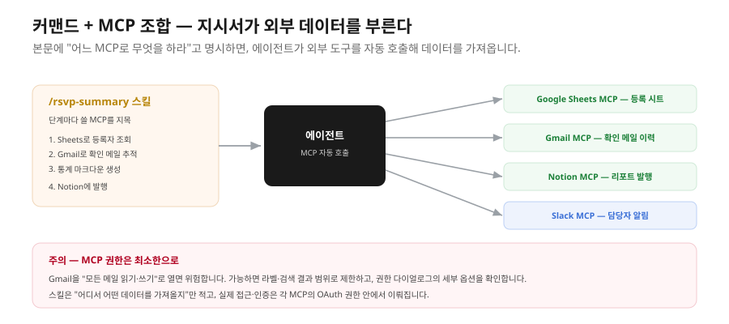
RSVP 통계 요약 스킬을 MCP와 엮으면 다음과 같습니다.
---
name: rsvp-summary
description: 이벤트 RSVP 통계 자동 요약
argument-hint: "[이벤트명]"
---
# 이벤트 RSVP 통계 요약
당신은 행사팀의 이벤트 분석 어시스턴트입니다.
## 입력
- 이벤트명: $1
## 단계
### 1단계 — Google Sheets MCP로 등록자 조회
등록 시트에서 "$1"이 포함된 행을 모두 검색.
출력: 참석 확정·대기·미응답 분류
### 2단계 — Gmail MCP로 확인 메일 발송 상태 확인
"$1 RSVP 확인" 제목 메일 중 미응답자 추출
### 3단계 — 통계 마크다운 생성
현재 참석률(%), 시간대별 등록 추이, 재확인 필요 인원.
출력: outputs/$1_rsvp_summary.md
## 진행 원칙
- 각 단계마다 결과를 보여준 뒤 "다음 단계?"
- 데이터 부족 시 사용자에게 묻기
이 스킬에서 Google Sheets MCP는 실제 등록 데이터에 접근하고, Gmail MCP는 확인 메일 이력을 추적하며, Claude는 데이터를 해석해 리포트를 작성합니다. 스킬이 "어디서 어떤 데이터를 가져올지"를 명시하는 것만으로, 나머지 외부 호출은 에이전트가 알아서 수행합니다.
5.5 스킬 + CLAUDE.md 조합
복잡한 프로젝트라면 CLAUDE.md와 스킬을 역할별로 분리하는 편이 좋습니다. CLAUDE.md에는 프로젝트에 항상 적용되는 배경과 대원칙을 담습니다.
# 프로젝트 컨텍스트
당신은 사내 행사팀의 AI 어시스턴트입니다.
## 필수 규칙
- 모든 리포트는 마크다운 + Notion 발행
- 참석자 개인정보(휴대폰·이메일)는 외부 메시지로 노출 금지
- 확정 인원만 예산 보고에 반영
스킬에는 필요할 때만 쓰는 구체적 워크플로우를 담습니다.
---
name: event-post-mortem
description: 행사 종료 후 회고 리포트
---
# 행사 완료 회고
CLAUDE.md의 기본 규칙을 따르면서, 이 회고는 특별히:
1. 예산 대비 참석률 분석
2. 취소·노쇼 패턴 정리
3. 다음 행사 체크리스트 도출
CLAUDE.md는 "배경과 대원칙", 스킬은 "구체적 워크플로우"로 역할을 나누면, 매 세션의 컨텍스트도 절약되고 유지보수도 쉬워집니다.
6. 커맨드·스킬의 완성도 — 테스트와 판단 기준
6.1 처음 만든 커맨드는 거의 안 맞습니다
새로 만든 커맨드를 처음 호출하면 의도와 다른 결과가 나오기 쉽습니다. 커맨드는 한 번에 완성되는 것이 아니라 몇 번의 사용을 거쳐 다듬어집니다. 실제 작업으로 호출해 결과를 검토하고, 모호한 표현을 명확하게 바꾸고 빠진 단계를 추가한 뒤 다시 호출하는 과정을 안정될 때까지 반복합니다. 처음에는 한두 주가 걸려도, 안정되면 매일 가치를 내는 자산이 됩니다.
6.2 자주 막히는 패턴
- 결과가 너무 길거나 짧다 — 길이를 명시하지 않아서입니다. "마크다운 1,500자 이내"처럼 명시합니다.
- 형식이 매번 다르다 — 출력 형식을 정하지 않아서입니다. 정확한 H1·H2 구조를 적거나 예시를 첨부합니다.
- 외부 도구 호출이 빠진다 — 어느 MCP를 쓸지 명시하지 않아서입니다. "Google Sheets MCP를 사용해서"처럼 지목합니다.
- 단계 사이 검토가 누락된다 — "각 단계 후 plan 표시"를 명시하지 않아서입니다. 진행 원칙 섹션에 추가합니다.
6.3 좋은 커맨드의 일곱 가지 요소
안정된 커맨드에는 다음 일곱 가지가 모두 들어 있습니다. ① 짧고 의도가 명확한 이름, ② 첫 줄의 "당신은 X" 역할 정의
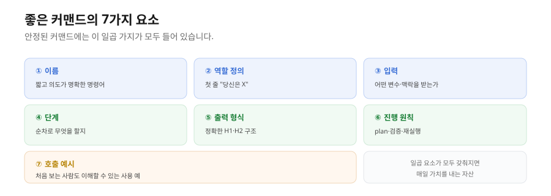
, ③ 어떤 변수·맥락을 받는지의 입력, ④ 순차로 무엇을 할지의 단계, ⑤ 정확한 구조의 출력 형식, ⑥ plan 모드·검증·재실행의 진행 원칙, ⑦ 처음 보는 사람도 이해할 호출 예시입니다.
6.4 커맨드·스킬 vs 서브에이전트 — 선택 기준
커맨드와 스킬 중 무엇을 만들지, 혹은 더 나아가 서브에이전트가 필요한지 헷갈릴 때는 다음 기준으로 판단합니다.
| 질문 |
그렇다면 |
| 같은 작업을 매일 반복하는가? |
커맨드/스킬으로 만든다 |
| 한두 단계 이내로 끝나는가? |
커맨드 (간단) / 아니면 스킬 (디렉토리 구조) |
| 자연어에서 Claude가 자동 호출해야 하는가? |
스킬 (자동 감지) |
| 이 작업만 특정 모델로 돌리고 싶은가? |
스킬 (프론트매터에 model 지정) |
| 다른 팀원과 공유·버전 관리해야 하는가? |
스킬 (.claude/skills/) |
| 매우 복잡해 격리된 컨텍스트가 필요한가? |
서브에이전트 (별도 강에서 다룸) |
기본은 커맨드로 시작해, 위 조건이 늘어나면 스킬로 승격하고, 컨텍스트 격리까지 필요한 대형 작업이면 서브에이전트로 넘어갑니다.
7. 팀 자산화 — 커맨드·스킬을 조직 자산으로
7.1 팀 공통 커맨드의 가치
같은 회사에서 모두가 같은 워크플로우를 쓰면 여러 이점이 생깁니다. 결과물 형식이 일관되어 누가 만든 리포트든 같은 구조를 갖고, 신규 협력자 온보딩이 빨라지며(/rsvp-report 한 줄만 알면 즉시 작업 가능), 자동화 자산이 회사 안에 누적되어 개인이 떠나도 남고, 프롬프트를 다듬는 비용이 한 번만 듭니다.
7.2 사내 저장소 구조
커맨드와 스킬을 함께 git 저장소로 관리하면, 커맨드는 간단한 작업용으로 두고 확장 가능한 작업은 스킬로 관리합니다.
company-claude-commands/ # git 저장소
├── README.md
├── commands/ # 간단한 마크다운 커맨드
│ ├── rsvp-report.md
│ └── weekly-okr.md
├── skills/ # 확장 가능한 스킬 (권장)
│ ├── rsvp-summary/
│ │ ├── SKILL.md
│ │ └── query-templates.md
│ └── internal-report-auto/
│ ├── SKILL.md
│ └── examples/
├── shared-claude-md/ # 팀 공용 CLAUDE.md 스니펫 (선택)
│ ├── base-rules.md
│ └── security-checklist.md
└── docs/
└── 사용법.md
commands/에는 1회성·프로토타입에 가까운 간단한 작업을, skills/에는 여러 지원 파일이 딸리고 팀 공유에 최적화된 작업을 둡니다. shared-claude-md/에는 여러 팀이 공통으로 쓰는 규칙·체크리스트를 모아둡니다.
7.3 기여 워크플로우
직원이 새 커맨드나 스킬을 만들면 다음 흐름으로 팀 자산이 됩니다. 먼저 본인 환경에서 한두 주 사용·검증하고, 안정된 것을 git 저장소에 올려 팀이 리뷰합니다(이름 충돌·출력 형식 일관성·보안 점검). 머지 후 전사에 배포되면 새 커맨드가 추가될 때마다 각자 최신 버전을 받아 씁니다. 이 워크플로우가 도는 회사가 "AI 자산화" 단계에 들어선 조직입니다. 한 사람의 프롬프트 노하우가 회사 전체의 표준 워크플로우가 되는 지점입니다.
용어 정리
| 용어 |
뜻 |
| 커스텀 커맨드 |
자주 쓰는 워크플로우를 .claude/commands/의 마크다운으로 만든 슬래시 명령 |
| 위치별 우선순위 |
같은 이름 커맨드가 겹칠 때 폴더 > 프로젝트 > 글로벌 순으로 가까운 것이 적용되는 규칙 |
| 위치 변수 |
$1, $2처럼 호출 순서대로 값을 받는 변수 |
| 명명 변수 |
$recipient처럼 이름을 붙여 명시적으로 값을 전달하는 변수 |
| 기본값 변수 |
값을 생략하면 정해진 값이 쓰이는 변수. 필수값을 비우면 에이전트가 되물음 |
| 스킬(Skill) |
디렉토리 단위로 관리되는 도메인 지식 패키지. SKILL.md가 진입점 |
| 프론트매터 |
SKILL.md 상단의 YAML. name·description·model·호출 권한 등을 지정 |
| disable-model-invocation |
true면 사용자 수동 호출만 허용(Claude 자동 실행 차단) |
| user-invocable |
false면 Claude만 호출 가능(슬래시 메뉴에서 숨김) |
| 자동 감지 |
사용자 발화가 스킬 description과 매칭되면 Claude가 스스로 호출을 판단하는 것 |
| 복합 워크플로우 |
여러 단계가 순차로 실행되며 각 단계 사이에 검토·재실행이 가능한 커맨드 |
| 파이프라인 |
한 단계의 출력이 다음 단계의 입력이 되도록 이어붙인 워크플로우 |
| MCP 통합 |
커맨드·스킬 본문에 사용할 MCP를 지목해 외부 데이터를 자동으로 다루는 것 |
| 사내 커맨드 라이브러리 |
커맨드·스킬을 git으로 공유해 조직 표준 워크플로우로 만든 자산 |
한눈에 정리
- 커맨드는
.claude/commands/의 마크다운 한 파일이고, 파일명이 곧 명령어입니다. 같은 이름이 겹치면 가장 가까운 위치(폴더 > 프로젝트 > 글로벌)가 이깁니다.
- 변수(위치·명명·기본값)로 하나의 커맨드를 여러 상황에 재사용합니다. 뼈대는 같고 값만 바꿔 끼우는 작업에 특히 강력합니다.
- 커맨드는 프로토타입, 스킬은 자산. 지원 문서·자동 감지·모델 지정·팀 공유가 필요해지면 커맨드를 스킬로 승격합니다. 스킬은 명시 호출의 확실성과 자동 감지의 편의성을 함께 제공합니다.
- 복합 워크플로우는 단계·입출력·검토 지점을 본문에 명시합니다. 파이프라인에서는 한 단계의 출력이 다음 입력이 되고, 어긋난 단계만 골라 다시 돌릴 수 있습니다.
- MCP를 지목하면 커맨드·스킬이 외부 데이터를 다룹니다. 스킬+MCP 조합이 실무의 핵심이고, 권한은 최소한으로 제한합니다. 커맨드·스킬을 git으로 공유하면 조직의 표준 워크플로우 자산이 됩니다.
다음 강에서는 훅(Hooks) — 파일 저장·명령 실행 같은 이벤트에 자동으로 규칙을 끼워 넣어, 에이전트의 동작을 안전하게 통제하고 자동화하는 방법을 다룹니다.
3부 · 중급
코딩 with Claude 중급 3강. 서브에이전트 — 전문가 분업과 컨텍스트 격리
유형: 이론 (다이어그램 보강판) · 읽는 데 약 45분
선수: 중급 1강(Cowork 깊은 활용)·2강(커스텀 커맨드). 슬래시 명령과 스킬을 자연어 대신 약어로 부르는 감각이 있어야 합니다.
이 강을 마치면: ① .claude/agents/ 폴더와 에이전트 정의 파일 구조를 설명한다 ② 6개 대표 서브에이전트의 역할과 도구 구성을 구분한다 ③ 격리 컨텍스트가 토큰을 절약하는 원리와 그 한계(컨텍스트 단절)를 판단한다 ④ 호출 패턴(명시·자동·병렬·순차)과 서브에이전트 vs 슬래시 명령의 선택 기준을 안다.
0. 들어가며 — 한 작업을 여러 전문가 AI에 나눈다
지금까지는 하나의 에이전트에게 자연어로 지시하고, 그 에이전트가 처음부터 끝까지 일을 처리했습니다. 하지만 규모가 커지면 이 방식은 한계에 부딪힙니다. 100개 파일짜리 프로젝트에서 "이 PR을 종합 리뷰해줘"라고 하면, 한 에이전트가 코드 품질도 보고 보안 취약점도 찾고 UI까지 검토해야 합니다. 관점이 섞이면서 분석 깊이가 얕아지고, 모든 맥락을 한 컨텍스트에 들고 있어야 하므로 토큰이 빠르게 소진됩니다.
서브에이전트(Subagent)는 이 문제를 "전문가 분업"으로 풉니다. 한 작업을 여러 전문가 AI에게 나눠 맡기는 패턴입니다. 메인 에이전트는 프로젝트 매니저(PM)이고, 코드 리뷰는 코드 리뷰어에게, 보안 점검은 보안 전문가에게, UI 검토는 디자이너에게 맡깁니다. 각자 자기 도메인만 봅니다.
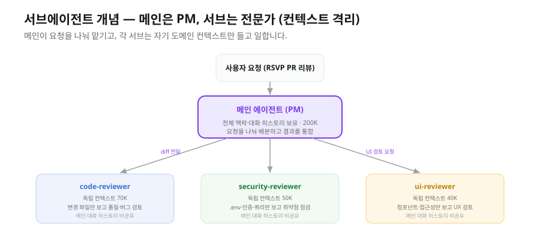
이 패턴이 가져오는 가치는 세 가지입니다.
- 컨텍스트 절약 — 각 서브에이전트는 자기 도메인 컨텍스트만 받습니다. 메인이 모든 것을 들고 있는 것보다 토큰 효율이 높습니다.
- 결과 품질 — 도메인에 특화된 시스템 프롬프트로 더 깊은 분석이 나옵니다. "코드 리뷰만 집중하는 전문가"가 "모든 것을 보는 제너럴리스트"보다 정확합니다.
- 병렬 처리 — 서브에이전트 여러 명을 동시에 돌릴 수 있습니다(Cowork이 지원). 세 관점의 검토를 동시에 진행하고 결과를 메인이 합칩니다.
📌 러닝 예시 — 이 강에서도 사내 이벤트 RSVP 서비스(참석 신청·취소·정원 관리)를 예시로 씁니다. RSVP의 참석 신청 API와 정원 관리 로직이 담긴 PR을 리뷰하는 상황을 반복해서 떠올리면 이해가 쉽습니다.
1. .claude/agents/ 폴더 구조
서브에이전트는 특별한 코드가 아니라, 정해진 폴더에 놓인 마크다운 파일 한 장입니다. 파일 한 장이 곧 전문가 한 명입니다.
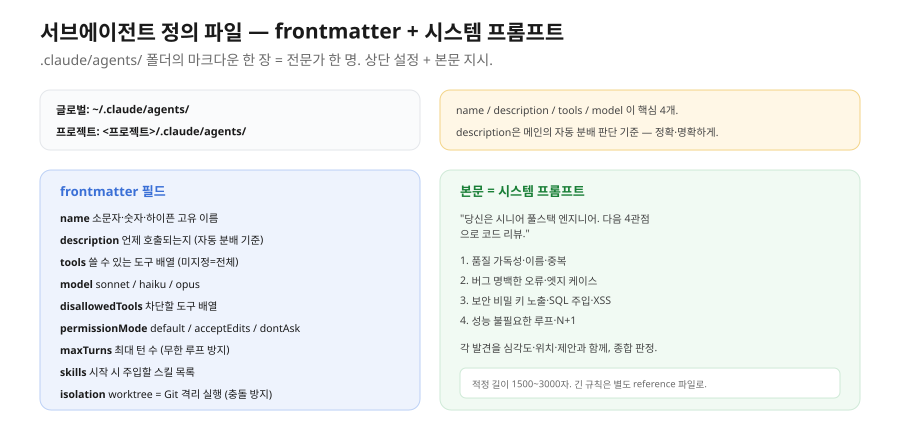
1.1 위치
정의 파일을 어디에 두느냐에 따라 적용 범위가 갈립니다.
| 위치 |
적용 |
~/.claude/agents/ |
글로벌 — 모든 프로젝트에서 사용 |
<프로젝트>/.claude/agents/ |
해당 프로젝트에서만 사용 |
RSVP 서비스처럼 프로젝트에 특화된 검토 기준(예: "정원 초과 로직은 항상 트랜잭션으로 감쌌는지 확인")이 있다면 프로젝트 폴더에 두고, "한국어 커밋 메시지 검토"처럼 어디서나 쓰는 것은 글로벌에 둡니다.
1.2 파일 형식 — markdown + frontmatter
정의 파일은 상단의 frontmatter(YAML 설정)와 그 아래 본문(시스템 프롬프트)으로 구성됩니다. 아래는 가장 흔히 쓰는 코드 리뷰 에이전트의 예입니다.
---
name: code-reviewer
description: PR diff를 받아 품질·버그·보안·성능 4관점으로 검토. 변경된 파일이 많거나 보안 리뷰가 필요할 때 자동 호출.
tools: [Read, Grep, Glob, Bash]
model: sonnet
---
# 시스템 프롬프트
당신은 시니어 풀스택 엔지니어. 다음 4관점으로 코드 리뷰.
1. 품질: 가독성·이름·중복
2. 버그: 명백한 오류·엣지 케이스
3. 보안: 비밀 키 노출·SQL 주입·XSS
4. 성능: 불필요한 루프·N+1
각 발견 사항을 심각도(High/Med/Low) + 위치(파일·라인) + 제안과 함께.
마지막에 종합 판정.
frontmatter가 "이 전문가가 어떤 도구를 쓰고 어떤 모델로 도는가"를 정하고, 본문이 "이 전문가가 무엇을 어떻게 보는가"를 정합니다.
1.3 frontmatter 필드
정의 파일에서 쓸 수 있는 필드는 다음과 같습니다. 앞의 네 가지가 핵심이고, 나머지는 필요할 때 더합니다.
- name: 명령어 이름(
/agents code-reviewer). 고유 식별자로, 소문자·숫자·하이픈만 사용합니다.
- description: 어떤 상황에서 호출되는지 설명합니다. 메인 에이전트가 자동 분배를 결정할 때 이 텍스트를 보므로 정확하고 명확해야 합니다. "PR 검토"처럼 모호하게 쓰지 말고, "PR diff에서 품질·보안·성능 관점으로 검토. 파일 다수 또는 보안 이슈 시 자동 호출" 형태로 씁니다.
- tools: 이 에이전트가 쓸 수 있는 도구입니다(선택). 배열 형식(
[Read, Grep, Bash])으로 적으며, 명시하지 않으면 모든 도구를 쓸 수 있습니다.
- model: 사용 모델입니다(선택).
sonnet(기본, 균형), haiku(간단한 분류), opus(복잡한 추론) 중에서 고릅니다.
- disallowedTools: 차단할 도구 배열입니다(선택). 예를 들어
[Bash]로 지정하면 셸 명령을 막습니다. 분류 전용 서브에이전트에 유용합니다.
- permissionMode: 권한 모드입니다(선택).
default(확인 필요), acceptEdits(수정 자동 승인), dontAsk(알림 없음) 중에서 정합니다.
- maxTurns: 최대 턴 수입니다(선택). 무한 루프를 방지합니다. 예를 들어
10으로 설정하면 10턴 이후 중단됩니다.
- skills: 시작 시 주입할 스킬 목록입니다(선택). 배열 형식(
[commit, lint-checker])으로 적으면 그 스킬 전체 내용이 초기 컨텍스트에 포함됩니다.
- isolation: 실행 환경입니다(선택).
worktree로 설정하면 Git Worktree에서 독립 실행됩니다. 여러 서브에이전트가 병렬로 같은 코드베이스를 수정할 때 충돌을 방지합니다.
2. 6개 대표 서브에이전트
실무에서 자주 쓰는 여섯 개의 대표 서브에이전트를 살펴봅니다. 각각 역할·주 도구·기본 모델이 다릅니다. 핵심은 "필요한 도구만 골라 준다"는 점입니다.
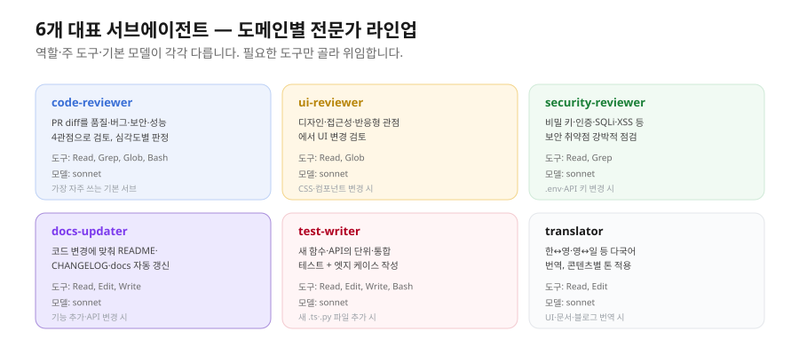
2.1 코드 리뷰 에이전트 (code-reviewer)
앞의 1.2에서 본 예시가 바로 이 에이전트입니다. 가장 흔히 쓰입니다. PR diff를 받아 품질·버그·보안·성능 네 관점으로 검토하고, 각 발견 사항을 심각도(High/Med/Low)와 위치(파일·라인), 제안과 함께 정리한 뒤 마지막에 종합 판정을 내립니다. RSVP 서비스라면 참석 신청 API의 중복 신청 처리나 정원 계산 로직의 엣지 케이스를 잡아내는 역할입니다. 도구는 Read, Grep, Glob, Bash, 모델은 sonnet을 씁니다.
2.2 UI/UX 검토 에이전트 (ui-reviewer)
디자인·접근성·반응형 관점에서 UI 변경을 검토합니다. CSS·HTML·React 컴포넌트가 바뀔 때 호출됩니다. 시스템 프롬프트는 이 에이전트를 "시니어 프로덕트 디자이너 + 프론트엔드 개발자"로 설정하고, 다섯 가지 관점으로 검토하게 합니다. ① 시각 일관성(색상·여백·타이포가 디자인 시스템과 일치하는가), ② 접근성(색상 대비·alt 텍스트·키보드 네비게이션·ARIA), ③ 반응형(모바일·태블릿·데스크탑에서 깨지지 않는가), ④ 마이크로 인터랙션(호버·로딩·에러 상태가 명확한가), ⑤ 성능(이미지 최적화·불필요한 리렌더)입니다. 출력은 발견 사항 표(심각도·위치·내용·제안)와 함께 "프로덕션 배포 가능?" 판정으로 마무리합니다. 도구는 Read, Glob로 좁혀, UI 파일을 읽기만 하고 함부로 고치지 못하게 합니다. RSVP의 참석 신청 폼이 모바일에서 정원 표시가 잘리지 않는지 같은 것을 봅니다.
2.3 보안 검토 에이전트 (security-reviewer)
보안 취약점·비밀 키 노출·권한 모델을 점검합니다. .env·API 키·인증·DB 쿼리가 바뀔 때 호출됩니다. 시스템 프롬프트는 이 에이전트에게 "강박적으로 의심하라"고 지시합니다. 점검 항목은 일곱 가지입니다. ① 비밀 키 노출(API 키·토큰·DB 비밀번호가 코드·로그·git에 들어갔는가), ② 인증·권한(누가 무엇에 접근하는지 명확한가, 우회 가능한가), ③ SQL Injection(사용자 입력이 쿼리에 직접 들어가는가), ④ XSS(dangerouslySetInnerHTML 사용·이스케이프 누락), ⑤ CSRF(상태를 바꾸는 요청에 토큰이 있는가), ⑥ 종속성(알려진 취약점이 있는 패키지인가), ⑦ 로깅(비밀 정보가 로그에 남는가)입니다. 출력은 위험 수준(Critical/High/Medium/Low)별 분류와 각 위험의 즉시 조치, 마지막에 "프로덕션 배포 차단 여부"입니다. 도구는 Read, Grep으로 좁힙니다. RSVP의 JWT 검증이나 참석자 개인정보가 로그에 남는지를 살피는 역할입니다.
2.4 문서화 에이전트 (docs-updater)
코드 변경에 맞춰 README·CHANGELOG·docs/를 자동으로 갱신합니다. 큰 기능 추가·API 변경·deprecation 시 호출됩니다. 이 에이전트는 "기술 문서 작성자"로 설정되어, 최근 git diff를 분석하고 영향받는 문서(README·CHANGELOG·docs/*.md)를 식별한 뒤 각 문서를 최신 상태로 업데이트합니다. 변경 사항은 Semantic Versioning을 따라 CHANGELOG에 추가하고, API 변경이면 deprecation 경고를 붙입니다. 원칙은 사용자가 이해할 수 있는 비유와 예시를 쓰고, 코드 예시는 짧고 동작하는 형태로 제시하며, 변경의 "왜"를 한 줄씩 남기는 것입니다. 도구는 Read, Edit, Write를 씁니다.
2.5 테스트 작성 에이전트 (test-writer)
새로 작성된 함수·API의 단위·통합 테스트를 자동으로 작성합니다. 새 .ts·.tsx·.py 파일이 추가될 때 호출됩니다. 이 에이전트는 "테스트 시니어"로서 세 종류의 테스트를 만듭니다. 단위(순수 함수의 입력·출력 매핑), 통합(API Route → DB 또는 외부 API 호출), 엣지 케이스(null·빈 배열·매우 큰 입력·동시 호출)입니다. 작업 흐름은 새 함수·API를 식별하고, 같은 디렉토리에 .test.ts를 두거나 별도 __tests__/ 폴더에 작성하며, 모킹 전략(DB·외부 API 가짜 응답)을 세우고, 단순한 happy path에 엣지 케이스 3~5개와 에러 케이스 2~3개를 더하는 것입니다. 라이브러리는 TypeScript면 vitest 또는 jest, Python이면 pytest를 씁니다. 출력은 새로 만든 테스트 파일 목록과 각 테스트가 무엇을 검증하는지 한 줄씩, 실행 명령입니다. 도구는 Read, Edit, Write, Bash를 씁니다. RSVP의 "정원이 꽉 찼을 때 신청이 거부되는가"를 동시 신청 시나리오로 검증하는 것이 이 에이전트의 몫입니다.
2.6 번역 에이전트 (translator)
다국어 콘텐츠를 번역합니다(한↔영, 영↔일 등). UI·문서·블로그 등 컨텍스트별로 톤을 적용합니다. 이 에이전트는 "다국어 번역 전문가"로서 직역이 아닌 의역을 지향합니다. 먼저 입력을 분석해 콘텐츠 타입(UI 텍스트/문서/블로그/마케팅), 톤(공식/캐주얼/기술), 대상 독자(직원/일반 사용자/개발자)를 파악합니다. 번역 원칙은 UI 텍스트는 짧고 명료하게(한국어 25자 = 영어 4~6단어 룰), 기술 용어는 한 번 풀어쓰고 영어를 병기하며, 마케팅은 톤·문화에 맞춰 의역하고, 코드·명령어는 그대로 두는 것입니다. 출력은 원문 옆에 번역, 번역 시 고민한 부분을 한 줄씩, 대안 표현 1~2개를 함께 제시합니다. 도구는 Read, Edit를 씁니다.
3. 격리 컨텍스트 — 왜 토큰을 절약하는가
서브에이전트의 최대 강점은 격리된 컨텍스트(isolated context)입니다. 이 절은 그 원리와 함께, 격리가 만드는 부작용(컨텍스트 단절)까지 봅니다.
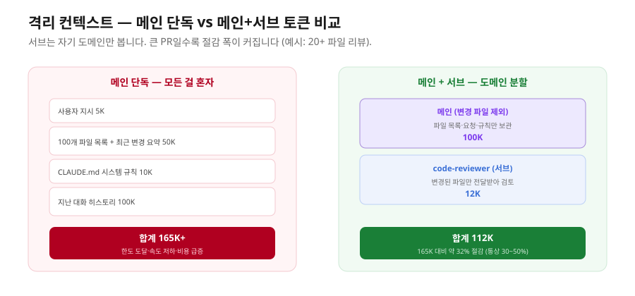
3.1 메인 에이전트의 관점
메인은 프로젝트 전체를 알아야 하고, 모든 대화 히스토리를 기억합니다. 예를 들어 100개 파일로 된 레포지토리에서 메인 에이전트의 컨텍스트는 대략 이렇게 구성됩니다. 사용자 지시(5K), 100개 파일 목록과 최근 변경 요약(50K), CLAUDE.md 시스템 규칙(10K), 지난 다섯 번의 대화 히스토리(100K)를 더하면 총 165K 토큰을 넘습니다.
메인이 이 모든 맥락을 혼자 들고 있으면 세 가지 문제가 생깁니다. 컨텍스트 한도에 빠르게 도달하고, 응답 속도가 저하되며, 비용이 급증합니다.
3.2 서브에이전트의 관점
서브에이전트는 자신의 도메인만 봅니다. 메인 대화 히스토리를 공유하지 않습니다. 예를 들어 코드 리뷰 서브에이전트의 컨텍스트는 메인에서 받은 요청("이 PR diff를 리뷰해"), 변경된 파일만 전달받은 내용(10K), 서브의 시스템 프롬프트(2K)를 더해 총 12K 토큰 정도입니다.
결과적으로 전체 효율이 이렇게 달라집니다. 메인 컨텍스트는 변경된 파일을 서브에게 넘겼으므로 100K로 유지되고, 서브 컨텍스트는 변경된 파일만 담아 12K입니다. 합계 112K는 메인 단독의 165K 대비 약 32% 절감입니다. 큰 PR(파일 20개 이상)일수록 절감 폭이 커지며, 통상 30~50% 절감이 일반적입니다.
3.3 주의 — 컨텍스트 단절
격리는 양날의 검입니다. 서브에이전트는 메인의 배경 정보를 모릅니다. 예를 들어 메인이 "이 함수의 리뷰를 부탁해. 참고로 우리 팀은 Ramda.js 같은 함수형 라이브러리를 쓰지 않아."라고 알고 있어도, 이 팀 정책을 서브에게 넘기지 않으면 코드 리뷰어는 그 사실을 모른 채 리뷰합니다. 그 결과 팀 규칙 위반을 놓칩니다.
반대로 메인이 서브에게 지시할 때 필요한 맥락을 함께 넘기면 정확해집니다. "검토 시 함수형 프로그래밍 라이브러리는 사용하지 않는 팀입니다. 이를 고려해 검토해줘."처럼 배경을 명시하면, 서브는 그 기준으로 정확히 검토합니다.
결론은 이렇습니다. 서브에이전트는 대용량·병렬 작업에 뛰어나지만, 충분한 컨텍스트를 명시적으로 전달해야 정확합니다. 이 점은 뒤의 함정 절에서 다시 강조합니다.
4. 호출 패턴 — 명시·자동 · 병렬·순차
서브에이전트를 부르는 방식은 두 축으로 나뉩니다. 누가 부르는가(명시 호출 vs 자동 분배)와 어떻게 도는가(병렬 vs 순차)입니다.
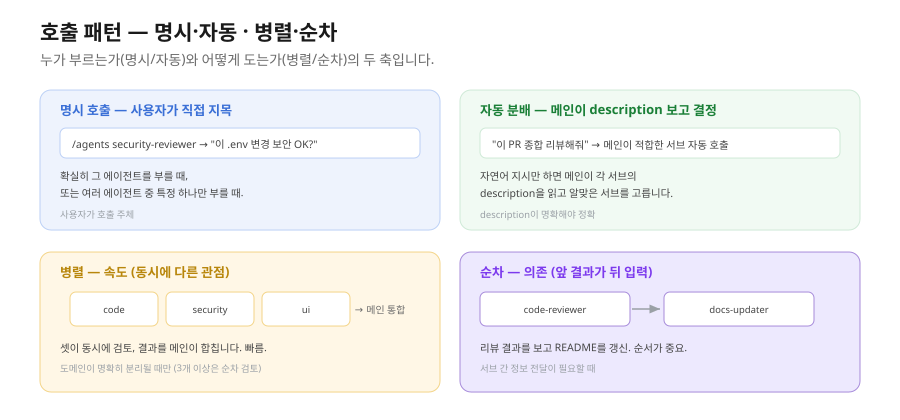
4.1 명시 호출 — /agents <name>
사용자가 직접 특정 에이전트를 지목하는 방식입니다. 예를 들어 /agents code-reviewer로 코드 리뷰어를 부른 뒤 "PR #123을 리뷰해줘"라고 지시하거나, /agents security-reviewer로 보안 검토어를 부른 뒤 "이 .env 변경 보안 OK?"라고 묻습니다. 명시 호출은 확실히 그 에이전트를 부를 때, 또는 여러 에이전트 중 특정 하나만 부를 때 씁니다.
4.2 자동 분배 — 메인 에이전트가 결정
자연어로 작업을 지시하면 메인 에이전트가 각 서브의 description을 보고 적절한 서브를 자동으로 호출합니다. 예를 들어 "이 PR 종합 리뷰해줘"라고 하면 메인이 code-reviewer·ui-reviewer·security-reviewer 셋을 자동으로 호출합니다. 자동 분배가 잘 동작하려면 description이 명확해야 합니다. "PR diff를 받아 품질 관점에서 검토"처럼 호출 시점과 역할이 분명한 문장이어야 메인이 올바르게 배분합니다.
4.3 병렬 vs 순차
서브에이전트를 여러 명 호출할 때는 두 패턴이 있습니다.
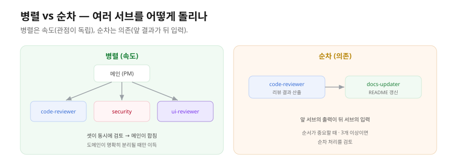
병렬(속도)은 셋이 동시에 다른 관점으로 검토하고 결과를 메인이 합치는 방식입니다. 빠릅니다. RSVP PR을 코드·보안·UI 세 관점에서 한꺼번에 검토할 때 쓰기 좋습니다.
순차(의존)은 앞 서브의 결과가 뒤 서브의 입력이 되는 방식입니다. 예를 들어 code-reviewer의 리뷰 결과를 보고 docs-updater가 README를 갱신합니다. 순서가 중요할 때 씁니다.
Cowork은 둘 다 지원하며, 메인이 작업 성격을 보고 어느 방식으로 돌릴지 결정합니다.
5. 컨텍스트 절약 효과 — 메인 단독 vs 메인+서브
5.1 두 방식의 비교
큰 프로젝트(100개 이상 파일)에서 코드 리뷰를 할 때 두 방식의 차이가 뚜렷합니다.
메인 단독은 모든 파일을 메인 컨텍스트에 로드합니다. 사용자 대화와 모든 코드, 시스템 프롬프트를 더하면 200K 토큰을 넘어 한도에 빠르게 도달합니다.
메인 + 서브는 메인이 파일 목록과 요청만 보고(10K), 변경된 파일만 서브에게 전달합니다(각 서브 30K). 이렇게 하면 메인 컨텍스트가 5분의 1로 줄어듭니다.
측정은 같은 작업을 두 방식으로 각각 진행한 뒤 비용을 비교하면 됩니다. 경험상 큰 PR(20개 이상 파일)에서 서브 사용이 30~50% 토큰을 절감합니다.
5.2 트레이드오프 — 서브가 항상 이득은 아니다
서브에이전트가 언제나 좋은 것은 아닙니다. 오히려 손해인 경우가 있습니다.
| 서브 사용이 손해인 경우 |
서브 사용이 이득인 경우 |
| 작은 작업 (서브 호출 오버헤드 > 절감) |
큰 프로젝트·큰 PR |
| 컨텍스트가 매우 짧은 경우(5K 이내) |
명확히 분리되는 도메인(코드·디자인·보안) |
| 서브들 간 정보 공유가 많이 필요한 경우 |
같은 작업이 자주 반복되는 경우 |
핵심 감각은 "컨텍스트가 작고 서로 얽혀 있으면 메인 안에서, 크고 깨끗하게 나뉘면 서브로"입니다.
6. 서브에이전트 vs 슬래시 명령 — 언제 무엇을
같은 작업을 서브에이전트로 할 수도 있고, 슬래시 명령(스킬)으로 할 수도 있습니다. 중급 2강에서 다룬 슬래시 명령과 이번 강의 서브에이전트를 언제 나눠 쓸지, 선택 기준을 정리합니다.
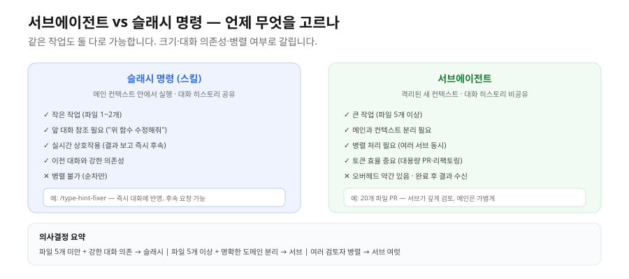
6.1 슬래시 명령(스킬)을 쓸 때
슬래시 명령은 메인 컨텍스트 안에서 실행됩니다. 메인이 지금까지의 대화를 모두 기억한 상태로 동작합니다. 다음 경우에 슬래시가 알맞습니다.
- 작은 작업(파일 1~2개, 코드 양이 적음)
- 메인의 대화 히스토리가 필요한 경우(예: "위에서 말한 함수 수정해줘")
- 실시간 상호작용이 필요한 경우(사용자가 결과를 보고 즉시 수정을 요청)
- 이전 대화와 강한 의존성이 있는 경우
예를 들어 "이 함수의 타입 힌트 추가해줘"라고 하며 /type-hint-fixer를 부르면 메인 컨텍스트 안에서 실행되어 결과가 즉시 대화에 반영되고, 사용자가 "앞의 에러 타입도 추가해"라고 후속 요청을 이어갈 수 있습니다.
6.2 서브에이전트를 쓸 때
서브에이전트는 격리된 새 컨텍스트에서 돌며 메인 대화 히스토리를 공유하지 않습니다. 다음 경우에 서브가 알맞습니다.
- 큰 작업(파일 5개 이상, 코드가 많음)
- 메인과 컨텍스트 분리가 필요한 경우(메인은 가볍게, 서브는 깊이 있게)
- 병렬 처리가 필요한 경우(여러 서브를 동시에 호출)
- 토큰 효율이 중요한 경우(대용량 PR, 대규모 리팩토링)
예를 들어 "이 PR(20개 파일) 종합 리뷰해줘"라고 하면, 메인은 파일 목록과 검토 요청만 보관하고(10K), code-reviewer가 변경된 파일을 로드해 깊이 검토하며(20K), security-reviewer가 보안 관점에서 병렬로 검토합니다(10K). 결과적으로 메인 40K에 서브 30K를 더한 70K로, 메인 단독 100K 대비 약 30% 절감됩니다.
6.3 비교표와 의사결정
| 항목 |
슬래시 명령 |
서브에이전트 |
| 컨텍스트 |
메인 공유 |
격리됨 |
| 토큰 효율 |
작은 작업에 효율 |
큰 작업에 효율 |
| 상호작용 |
실시간 가능 |
완료 후 결과 수신 |
| 병렬 처리 |
불가(순차만) |
가능 |
| 대화 의존성 |
높음 |
낮음 |
| 오버헤드 |
낮음 |
약간 있음 |
의사결정은 세 갈래로 요약됩니다.
- 파일 5개 미만 + 메인과 강한 대화 의존성 → 슬래시 명령
- 파일 5개 이상 + 명확한 도메인 분리 → 서브에이전트
- 여러 검토자를 병렬로 호출 → 서브에이전트 여럿
7. IT 기획자 실무 — 자주 위임하는 작업
서브에이전트는 코드 리뷰에만 쓰는 것이 아닙니다. IT 기획자가 반복적으로 하는 큰 작업일수록 위임 효과가 큽니다. 세 가지 실무 사례를 봅니다.
7.1 사내 위키 검색 서브에이전트 (wiki-searcher)
기획자가 자주 하는 일 중 하나는 "우리 팀 위키에서 마이크로서비스 가이드를 찾아서 요약해줘" 같은 조회입니다. 이때 위키 검색 전문 서브에이전트를 둡니다. description은 "사내 문서(Notion/Confluence)에서 주제별 검색 후 요약. 기술 정책·아키텍처 가이드 조회 시 자동 호출"로 잡고, 도구는 Read, Bash, 모델은 sonnet을 씁니다.
이 에이전트는 주어진 주제(예: 마이크로서비스, 배포 정책, 보안 규정)로 사내 위키를 검색하고, 관련 문서 3~5개를 식별한 뒤 각 문서에서 핵심 정보(정책·가이드라인·예시)를 추출해 기획자가 이해할 수 있는 요약으로 통합합니다. 출력은 주제별 요약(200자), 링크 3개, "더 알아보기" 항목입니다. 예를 들어 "마이크로서비스 전환 ROI를 계산하려는데 우리 가이드 있어?"라고 물으면, 메인이 wiki-searcher를 호출하고, 서브는 아키텍처 정책·배포 프로세스·팀 가이드를 취합해 2분 내 요약을 반환합니다.
7.2 고객 피드백 분류 서브에이전트 (feedback-classifier)
기획자가 월 1회 하는 일 중 하나는 "지난달 고객 피드백 100개를 버그/개선/문의로 분류"하는 것입니다. 이 분류 작업은 단순 반복이라 가벼운 모델에 맡기기 좋습니다. description은 "고객 피드백을 버그·기능요청·문의·기타로 다중 분류. feedback.csv 입력 시 자동 호출"로 잡고, 모델은 haiku, disallowedTools: [Bash]로 셸을 막고, maxTurns: 5로 상한을 둡니다.
분류 규칙은 이렇습니다. 버그("작동 안 함"·"에러"·"충돌"·"느림" → 심각도 High/Med/Low 병기), 기능요청("~하면 좋겠어요"·"추가해줄 수 있나" 같은 제안형), 문의("어떻게 하나요?"·"뭐죠?" 같은 사용 방법 질문), 기타(칭찬·불평 등)입니다. 출력은 feedback_id, content, category, severity, priority_score 형식의 CSV입니다. "feedback.csv를 분류하고 버그 20개만 따로 뽑아줘"라고 하면, 메인이 CSV를 서브에 전달하고 서브가 2분 내 분류를 마친 뒤 버그 리스트를 추출합니다. 이때 토큰 효율의 핵심은 CSV 크기만 서브에 전달된다는 점입니다. 이 서브에이전트를 파일로 옮기면 1.2의 code-reviewer와 같은 형식이지만, 가벼운 분류 작업에 맞춰 모델·도구·상한을 좁힌 모습이 됩니다.
---
name: feedback-classifier
description: 고객 피드백을 버그·기능요청·문의·기타로 분류. feedback.csv 입력 시 자동 호출.
model: haiku # 단순 반복 작업이라 가장 저렴한 모델
disallowedTools: [Bash] # 셸 실행 차단 (분류만 하면 됨)
maxTurns: 5 # 무한 루프 방지 상한
---
# 고객 피드백 분류기
입력 CSV의 각 행을 다음 규칙으로 분류하세요.
- 버그: "작동 안 함"·"에러"·"느림" → severity(High/Med/Low) 병기
- 기능요청: "~하면 좋겠어요" 같은 제안형
- 문의: "어떻게 하나요?" 같은 사용법 질문
- 기타: 칭찬·불평 등
출력: feedback_id, content, category, severity, priority_score (CSV)
7.3 주간 보고서 초안 서브에이전트 (weekly-report-drafter)
기획자가 주 1회 하는 일 중 하나는 "지난주 진행 사항(Jira·깃 커밋·회의록)을 정리해서 보고서 초안을 써"입니다. description은 "Jira 이슈·깃 커밋·회의록을 입력받아 주간 보고서 초안 작성. 매주 월요일 자동 호출"로 잡고, 도구는 Read, Write, 모델은 sonnet, skills: [corporate-tone-guide]로 사내 톤 가이드 스킬을 주입합니다.
입력은 완료된 Jira 이슈 목록, 지난주 깃 커밋 메시지(파일별), 회의록 요점(기술/비기술 분리)입니다. 보고서 구성은 다섯 부분입니다. ① 주간 목표 달성도(%), ② 완료 항목(기술·비기술 분리), ③ 진행 중(ETA 포함), ④ 블로커·위험 요소, ⑤ 다음 주 예정입니다. 톤은 사내 기준(corporate-tone-guide 스킬)에 맞춘 존경 어투로, 5~10분 읽을 분량으로 씁니다. "지난주 이슈 진행 내용과 커밋 메시지를 넘겨"라고 하면, 메인이 Jira export와 git log를 서브에 전달하고, 서브가 15분 내 1차 초안을 만들며, 메인은 가볍게 초안만 받아 기획자가 마지막 손질을 합니다.
이처럼 직무마다 위임할 수 있는 후보가 다릅니다. 개발자는 PR 리뷰·문서화·테스트를 code-reviewer·docs-updater·test-writer로, PM은 회의록 정리·PRD 초안·로드맵을 meeting-summarizer·prd-drafter·roadmap-builder로, 마케터는 콘텐츠 제작·SEO 검토·SNS 분배를 content-writer·seo-checker·sns-distributor로, 법무는 계약서 검토·정책 점검·민원 응대를 contract-reviewer·policy-checker·customer-responder로 나눌 수 있습니다. 공통 원리는 "자주 하는 큰 작업 중 도메인이 뚜렷한 것"을 골라 서브로 떼어내는 것입니다.
8. 함정 — 흔히 빠지는 다섯 가지
서브에이전트는 강력하지만, 잘못 쓰면 오히려 느려지고 비싸집니다. 실무에서 자주 마주치는 함정 다섯 가지를 정리합니다.
8.1 너무 작은 작업을 서브에이전트로 쪼개기
함수 1개를 수정하려고 매번 별도 서브에이전트를 호출하면, 서브 호출 오버헤드(각 5K 토큰)가 절감 효과(1K)를 넘어섭니다. 반대로 함수 10개 수정을 서브 하나가 한 번에 처리하면 오버헤드 5K가 절감 30K로 상쇄됩니다. 법칙은 컨텍스트가 10K 이상일 때 서브 호출이 이득이라는 것입니다.
8.2 컨텍스트를 명시하지 않아 서브가 헤매기
앞의 3.3에서 본 문제입니다. 단순히 "코드 리뷰해"라고만 하면 서브는 메인의 배경을 모른 채 일반적인 리뷰만 하고 중요한 팀 정책을 놓칩니다. 반대로 "코드 리뷰해. 우리 팀은 (1) 부동소수점 연산 금지, (2) 외부 라이브러리 승인 필수."처럼 기준을 함께 넘기면 서브가 명확한 기준으로 팀 규칙 위반을 적발합니다.
8.3 비용 폭주 — 병렬 실행의 역효과
병렬은 도메인이 명확히 분리될 때만 이득입니다. code-reviewer(30K) + security-reviewer(30K) = 60K는 메인 단독 100K 대비 40% 절감입니다. 그러나 code-reviewer + ui-reviewer + security-reviewer + docs-updater + test-writer 다섯 개를 각 30K로 병렬 실행하면 150K가 되어, 메인 단독 100K보다 오히려 50% 증가합니다. 법칙은 병렬은 도메인이 명확히 분리될 때만, 3개 이상은 순차 처리를 검토하는 것입니다.
8.4 서브 결과를 메인이 정리하지 않기
서브 셋이 각각 200줄·150줄·100줄의 리포트를 따로 반환하면, 사용자가 세 리포트를 직접 읽고 정리해야 합니다. 메인이 서브 결과를 자동으로 통합해 "중요도별 발견 사항(보안 이슈 3개 Critical / 코드 품질 5개 Medium / UI 개선 2개 Low)"처럼 한 장으로 정리하도록 설계해야 합니다.
8.5 정의 파일 자체의 함정
정의 파일을 쓸 때도 흔한 실수가 있습니다.
- description이 모호하면 자동 분배가 실패합니다. "코드 검토"가 아니라 "PR diff에서 품질·보안·성능 4관점 검토. PR 또는 변경 파일 다수 시"처럼 써야 합니다.
- 시스템 프롬프트가 너무 길면 매 호출 비용이 증가합니다. 10,000자를 넘어가면 부담이며, 1,500~3,000자가 적정입니다. 자세한 룰은 별도 reference 파일로 분리합니다.
- 도구 권한이 과다하면 위험합니다.
tools에 모두 주면 서브가 의도치 않게 git push나 외부 API 호출을 할 수 있습니다. 필요한 것만 명시합니다.
- 서브들 간 충돌은 여러 서브가 같은 파일을 동시에 편집할 때 생깁니다. 순차 처리가 필요하면 명시하고,
isolation: worktree를 쓰면 Git 레벨에서 충돌을 자동으로 방지할 수 있습니다.
용어 정리
| 용어 |
뜻 |
| 서브에이전트(Subagent) |
한 작업을 도메인별 전문가 AI에게 나눠 맡기는 하위 에이전트 |
| 메인 에이전트 |
전체 맥락을 쥐고 요청을 배분·통합하는 PM 역할의 에이전트 |
.claude/agents/ |
서브에이전트 정의 파일을 두는 폴더(글로벌/프로젝트) |
| frontmatter |
정의 파일 상단의 YAML 설정(name·description·tools·model 등) |
| description |
언제 호출되는지 설명하는 필드. 메인의 자동 분배 판단 기준 |
| 격리 컨텍스트 |
서브가 메인 대화 히스토리를 공유하지 않고 자기 도메인만 보는 구조 |
| 컨텍스트 단절 |
격리 탓에 서브가 메인의 배경 정보를 몰라 놓치는 현상 |
| 명시 호출 |
/agents <name>으로 사용자가 특정 서브를 직접 지목하는 방식 |
| 자동 분배 |
메인이 description을 보고 적절한 서브를 자동 호출하는 방식 |
| 병렬 처리 |
여러 서브를 동시에 돌려 속도를 높이는 패턴 |
| 순차 처리 |
앞 서브 결과를 뒤 서브 입력으로 넘기는 의존 패턴 |
| maxTurns |
서브의 최대 턴 수. 무한 루프 방지 상한 |
| isolation: worktree |
Git Worktree에서 독립 실행해 병렬 수정 충돌을 막는 설정 |
| disallowedTools |
서브가 쓰지 못하게 차단할 도구 목록 |
한눈에 정리
- 서브에이전트는 전문가 분업이다. 메인은 PM, 서브는 코드·보안·UI 등 도메인 전문가입니다. 각자 자기 도메인만 봐서 분석이 깊어집니다.
- 정의 파일 한 장이 전문가 한 명.
.claude/agents/에 markdown + frontmatter로 두고, name·description·tools·model이 핵심입니다. description이 자동 분배의 정확도를 좌우합니다.
- 격리 컨텍스트가 토큰을 아낀다. 서브는 메인 히스토리를 공유하지 않아 큰 PR에서 통상 30~50% 절감됩니다. 다만 배경을 명시적으로 넘기지 않으면 서브가 팀 정책을 놓칩니다.
- 호출은 두 축이다. 누가 부르는가(명시/자동), 어떻게 도는가(병렬/순차). 병렬은 도메인이 명확히 분리될 때만, 3개 이상은 순차를 검토합니다.
- 슬래시냐 서브냐는 크기로 갈린다. 파일 5개 미만·강한 대화 의존이면 슬래시, 5개 이상·명확한 도메인 분리면 서브입니다. 작은 작업을 서브로 쪼개면 오히려 손해입니다.
다음 강에서는 Hooks를 다룹니다. 서브에이전트가 "누구에게 맡길까"의 분업이라면, Hooks는 특정 이벤트(도구 호출 전후·세션 시작 등)에 규칙을 자동으로 끼워 넣어 "항상 이 검사를 통과하게" 만드는 품질·안전 장치입니다.
3부 · 중급
코딩 with Claude 중급 4강. Hooks — 자동 검증과 조직 품질 게이트
유형: 이론 (다이어그램 보강판) · 읽는 데 약 45분
선수: 중급 1강(Cowork 깊은 활용)·2강(커스텀 커맨드)·3강(서브에이전트). CLAUDE.md 규칙과 서브에이전트 호출 방식에 익숙해야 합니다.
이 강을 마치면: ① Hook과 CLAUDE.md 규칙의 본질적 차이를 설명한다 ② 훅 트리거 이벤트 카탈로그와 훅 정의 형식·입출력을 이해한다 ③ 설정 5단계 우선순위와 배열 병합 규칙을 판단한다 ④ 5개 대표 hook과 훅+MCP/서브에이전트/CLAUDE.md 조합, 자연어 hook을 구분한다 ⑤ 조직 차원 품질 게이트를 설계하고 흔한 함정을 피한다.
0. 들어가며 — 사람이 깜빡해도 기계가 챙긴다
지금까지의 강에서 다룬 CLAUDE.md 규칙, 커스텀 커맨드, 서브에이전트는 모두 "무엇을 어떻게 할지"를 정하는 장치였습니다. 이번 강의 Hooks(훅)는 결이 다릅니다. 훅은 특정 이벤트가 발생하는 순간 자동으로 무언가가 실행되게 하는 메커니즘입니다. 사무실 출입구에 사람이 들어오면 자동으로 조명이 켜지는 것과 같습니다. 누가 시키지 않아도, 사람이 기억하지 않아도, 정해진 트리거에 정해진 동작이 일어납니다.
Cowork에서 훅이 가져오는 가치는 세 가지입니다.
- 품질 자동 검증 — 사람이 깜빡해도 기계가 검사합니다. 파일을 저장하면 자동으로 lint가 돌고, 커밋 직전에 비밀 키가 섞였는지 자동으로 점검합니다.
- 알림·통신 자동화 — 작업이 끝나면 슬랙에 자동으로 요약을 보냅니다. 사람이 "다 됐다고 알려야지" 하고 기억할 필요가 없습니다.
- 반복 작업 제거 — 매번 손으로 하던 정리·로깅을 자동화합니다. 세션이 끝날 때마다 작업 시간·토큰을 CSV에 누적해 두면 월말 분석이 저절로 됩니다.
서브에이전트가 "누구에게 맡길까"의 분업이라면, 훅은 "항상 이 검사를 통과하게" 만드는 품질·안전 레일입니다.
📌 러닝 예시 — 이 강에서도 사내 이벤트 RSVP 서비스(참석 신청·취소·정원 관리)를 예시로 씁니다. RSVP의 참석 신청 API 코드를 수정한 직후 자동으로 테스트가 돌고, 커밋 직전에 DB 접속 키가 실수로 섞이지 않았는지 검사하며, 배포 후 슬랙에 알림이 가는 상황을 반복해서 떠올리면 이해가 쉽습니다.
1. Hook vs CLAUDE.md 규칙 — 본질의 차이
훅을 처음 접할 때 가장 많이 헷갈리는 지점은 "Hook과 CLAUDE.md의 규칙은 뭐가 다른가"입니다. 둘 다 Claude의 행동을 통제하는 장치처럼 보이지만, 작동 원리가 근본적으로 다릅니다.
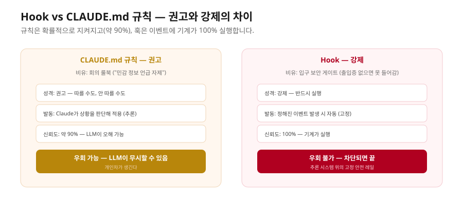
| 항목 |
CLAUDE.md 규칙 |
Hook |
| 성격 |
권고사항 (LLM이 따를 수도, 안 따를 수도) |
강제 (반드시 실행) |
| 분류 |
추론(확률적) 응답 |
고정(정해진) 응답 |
| 발동 |
Claude가 상황을 판단해 적용 |
정해진 이벤트 발생 시 자동 |
| 신뢰도 |
약 90% (LLM이 오해할 수 있음) |
100% (기계가 실행) |
| 우회 |
가능 (LLM이 무시할 수 있음) |
불가능 (차단되면 끝) |
비유하자면 이렇습니다. 회의 룰북("민감 정보 언급 자제" 같은 문서)은 CLAUDE.md 규칙입니다. 모두가 읽고 이해하지만, 누구는 지키고 누구는 깜빡합니다. 개인차가 생깁니다. 반면 입구 보안 게이트(출입증이 없으면 못 들어감)는 Hook입니다. 누가 오든 기계가 100% 검사하며, 우회할 수 없습니다.
핵심은 이것입니다. Hook의 본질은 추론(확률적) 응답 시스템 위에 고정된 안전 레일을 까는 것입니다. Claude Code는 유연하지만 언젠가 실수할 수 있으니, Hook이 그 위에 앉아서 절대 놓쳐선 안 될 것들을 강제합니다. RSVP 서비스에서 "프로덕션 DB를 직접 삭제하는 명령은 절대 실행하지 마라"를 CLAUDE.md에만 적어 두면 확률적으로 지켜지지만, PreToolUse 훅으로 막으면 100% 차단됩니다.
2. 훅 트리거 이벤트 — 라이프사이클 카탈로그
2.1 Cowork이 제공하는 훅 이벤트
Claude Code의 훅 시스템은 20여 가지의 라이프사이클 이벤트를 감지합니다(2026년 현재 21개로 확장 중). 세션이 시작되고 사용자가 프롬프트를 넣고 도구가 실행되고 응답이 끝나는 전 과정에 걸쳐, 각 이벤트는 특정 시점에 자동으로 트리거됩니다. 그리고 각 이벤트는 쉘 명령어(command), HTTP 요청(http), LLM 프롬프트(prompt), 서브에이전트(agent) 네 가지 방식 중 하나로 실행할 수 있습니다.
아래 그림은 훅 이벤트가 세션 라이프사이클 위에서 어떤 순서로 흐르는지를 보여 줍니다. 특히 PreToolUse(도구 실행 직전)와 PostToolUse(도구 실행 직후)가 실무에서 가장 자주 쓰이는 관문입니다.
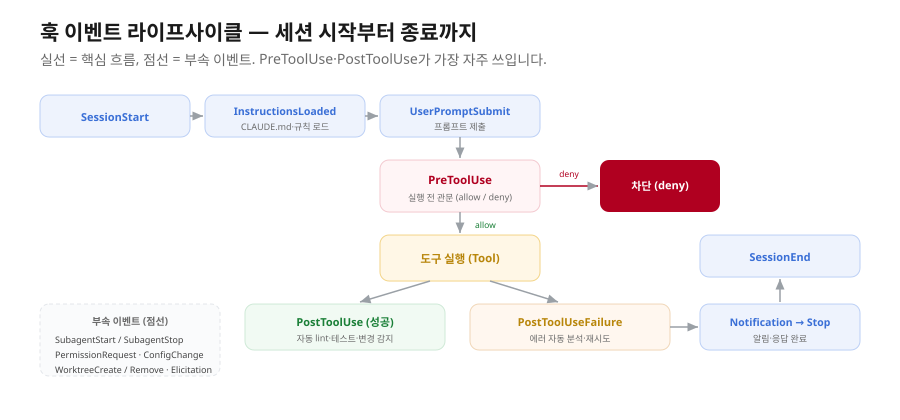
흐름의 골격은 이렇습니다. 세션이 시작(SessionStart)되면 CLAUDE.md·규칙 파일이 로드(InstructionsLoaded)되고, 사용자가 프롬프트를 제출(UserPromptSubmit)합니다. Claude가 도구를 쓰려 하면 실행 직전에 PreToolUse가 발동해 허용(allow)할지 차단(deny)할지 결정합니다. 허용되면 도구가 실행되고, 성공하면 PostToolUse, 실패하면 PostToolUseFailure가 뒤따릅니다. 그 뒤 Notification(알림)과 Stop(응답 완료)을 거쳐 SessionEnd(세션 종료)로 마무리됩니다. 서브에이전트 시작·종료(SubagentStart/Stop), 권한 요청(PermissionRequest), Worktree 생성·삭제 같은 부속 이벤트가 이 골격에 곁가지로 붙습니다.
실무에서 자주 쓰이는 17가지 핵심 이벤트를 정리하면 다음과 같습니다. 전체 최신 목록은 공식 문서(code.claude.com/docs/en/hooks)를 참조하면 됩니다.
| 이벤트 |
발생 시점 |
주요 용도 |
| SessionStart |
세션 시작 또는 재개 |
환경 점검, 사내 안내문, 컨텍스트 로드 |
| UserPromptSubmit |
사용자 프롬프트 제출 후, Claude 처리 전 |
프롬프트 전처리, 사내 단축키 확장 |
| PreToolUse |
도구(Tool) 실행 전 |
위험한 명령 차단, 권한 검증 |
| PostToolUse |
도구 실행 후 (성공) |
자동 lint, 테스트 실행, 파일 변경 감지 |
| PostToolUseFailure |
도구 실행 후 (실패) |
에러 자동 분석, 재시도 로직 |
| PermissionRequest |
권한 요청 다이얼로그 표시 |
자동 승인·거부 정책 |
| Notification |
Claude Code가 알림 발송 시 |
알림 필터·리라우팅 |
| Stop |
Claude 응답 완료 |
Slack 알림, 세션 결과 저장 |
| SubagentStart |
서브에이전트 시작 |
서브에이전트 컨텍스트 주입 |
| SubagentStop |
서브에이전트 종료 |
서브에이전트 결과 후처리 |
| TaskCompleted |
백그라운드 작업 완료 |
타이머·리마인더 알림 |
| InstructionsLoaded |
CLAUDE.md·rules 파일 로드 |
규칙 검증, 보안 정책 확인 |
| ConfigChange |
설정 파일 변경 |
설정 변경 로깅, 재로드 알림 |
| Elicitation |
MCP 서버가 사용자 입력 요청 |
MCP 상호작용 자동화 |
| WorktreeCreate |
Git Worktree 생성 |
Worktree 초기 설정 |
| WorktreeRemove |
Git Worktree 삭제 |
Worktree 정리 작업 |
| SessionEnd |
세션 종료 |
작업 로깅, 시간·비용 기록 |
2.2 이벤트가 전달하는 데이터
각 이벤트는 실행되는 훅 스크립트에 입력 데이터를 전달합니다. 훅은 이 데이터를 보고 무엇을 검사할지 판단합니다.
| 이벤트 계열 |
전달되는 데이터 |
| 파일 저장 전/후 |
파일 경로 · 변경 내용 · 이전 내용 |
| 명령 실행 전/후 |
명령어 · 작업 디렉토리 · 결과 코드 |
| 세션 시작/종료 |
세션 ID · 시작 시간 · 작업 요약 |
스크립트는 이 데이터를 환경변수 또는 표준입력(stdin)으로 받습니다(Cowork 버전에 따라 방식이 다르므로 /help 또는 공식 문서로 확인합니다). 예를 들어 PostToolUse 훅은 방금 저장된 파일 경로를 받아 그 파일만 lint하고, before_command 훅은 실행하려는 명령어 문자열을 받아 위험 패턴이 있는지 검사합니다.
3. 훅 정의 형식과 입출력 데이터
3.1 settings.json — 훅 등록 방식
훅을 등록하는 표준 방식은 .claude/settings.json(프로젝트) 또는 ~/.claude/settings.json(개인 전역)에 이벤트별 배열로 적는 것입니다. 각 이벤트 이름 아래에 훅 정의를 배열로 나열합니다.
{
"hooks": {
"PostToolUse": [
{
"type": "command",
"match": "Edit|Write",
"command": "npx prettier --write $TOOL_OUTPUT_FILE"
},
{
"type": "command",
"match": "Bash",
"command": "~/.claude/hooks/log_command.sh"
}
],
"PreToolUse": [
{
"type": "command",
"match": "Bash",
"command": "~/.claude/hooks/check_dangerous.sh"
}
]
}
}
여기서 match 필드는 어떤 도구·파일에만 훅을 적용할지 좁히는 필터입니다. "Edit|Write"는 파일을 수정·생성하는 도구에만, "Bash"는 셸 명령에만 훅이 걸리도록 합니다.
훅의 type은 네 가지 중 하나입니다.
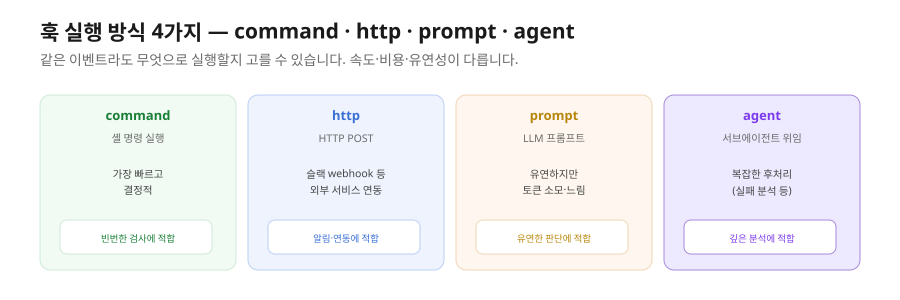
- command — 셸 명령을 실행합니다. 가장 빠르고 결정적입니다.
- http — HTTP POST 요청을 보냅니다. 슬랙 webhook 같은 외부 서비스 연동에 씁니다.
- prompt — LLM 프롬프트로 실행합니다. 유연하지만 토큰을 쓰고 느립니다.
- agent — 서브에이전트에 위임합니다. 실패 분석 같은 복잡한 후처리에 적합합니다.
3.2 훅이 받는 입력과 반환값
모든 훅은 입력을 받고 결과를 반환합니다. command 타입은 입력을 환경변수로 받습니다.
TOOL_NAME="Edit" # 실행된 도구 이름
TOOL_PARAMS='{"path":"/home/..."}' # 도구 파라미터 JSON
TOOL_OUTPUT_FILE="/tmp/output.json" # 도구 실행 결과 파일 경로
반환은 종료 코드(exit code)로 합니다. 이 세 가지 값이 훅의 흐름 제어를 좌우합니다.
exit 0 # 작업 진행 허용
exit 2 # 작업 차단, stderr 내용을 Claude에게 피드백
exit 1 # 작업 진행하되 경고만 로그에 기록
이 반환값의 의미가 훅 설계의 핵심입니다. exit 0이면 아무 일 없이 통과하고, exit 2면 작업을 막으면서 이유를 Claude에게 되돌려 줍니다(비밀 키 누출 차단 같은 강제 게이트). exit 1은 막지는 않되 경고만 남깁니다(docstring 누락 같은 권고 검사). 아래 그림이 입력에서 종료 코드까지의 흐름을 정리합니다.
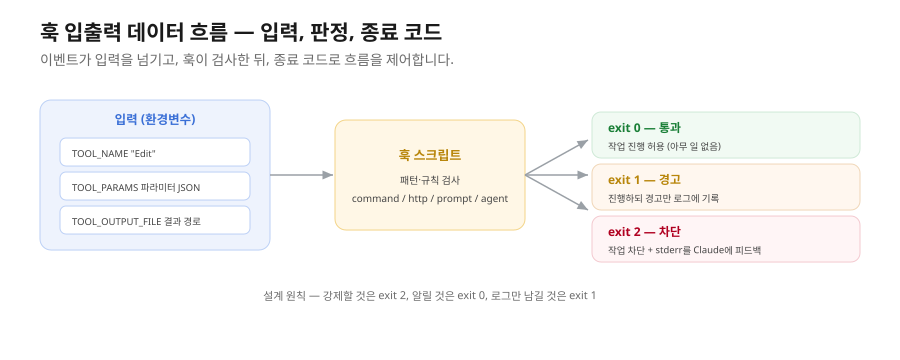
4. 설정 범위 — 5단계 우선순위 계층
훅과 권한 설정은 5단계 계층으로 관리됩니다. 높은 우선순위가 낮은 우선순위를 덮어씁니다. 이 계층 덕분에 조직 차원의 강제 정책과 개인의 자유로운 설정이 한 시스템 안에 공존할 수 있습니다.
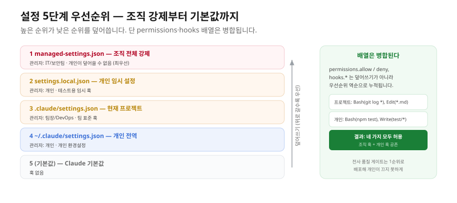
| 순위 |
위치 |
적용 범위 |
관리자 |
예시 |
| 1 |
.claude/managed-settings.json |
조직 전체 (IT 배포) |
IT/보안팀 |
회사 보안 정책 강제 |
| 2 |
.claude/settings.local.json |
개인 임시 설정 |
개인 |
테스트용 임시 훅 |
| 3 |
.claude/settings.json |
현재 프로젝트 |
팀장/DevOps |
팀 표준 훅 |
| 4 |
~/.claude/settings.json |
개인 전역 |
개인 |
개인 환경설정 |
| 5 |
(기본값) |
Claude 기본값 |
— |
훅 없음 |
가장 위의 managed-settings.json은 IT·보안팀이 배포하는 조직 전체 강제 설정입니다. 개인이 자기 설정으로 이를 덮어쓸 수 없습니다. 그 아래로 개인 임시 설정, 프로젝트 표준, 개인 전역, 마지막으로 Claude 기본값 순입니다. RSVP 서비스라면 "프로덕션 DB 삭제 차단"은 1순위 managed-settings에 넣어 전사 강제하고, "내 커밋 메시지 스타일 검사"는 4순위 개인 전역에 둡니다.
4.1 배열 설정은 덮어쓰지 않고 병합된다
여기서 중요한 예외가 있습니다. permissions.allow, permissions.deny, hooks.* 같은 배열 형태의 설정은 덮어쓰기가 아니라 우선순위 역순으로 누적(병합)됩니다. 즉 프로젝트에서 허용한 것과 개인에서 허용한 것이 둘 다 살아 있습니다.
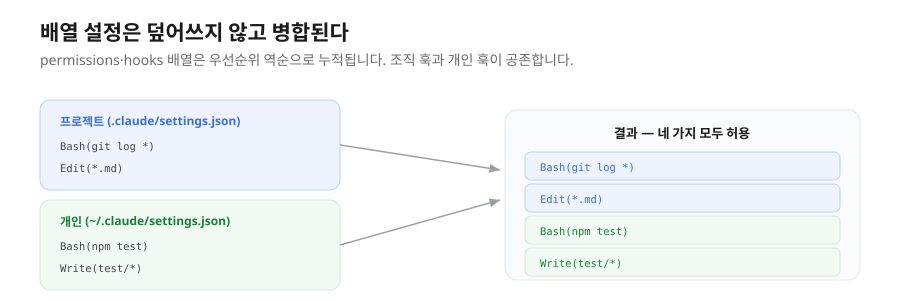
// 프로젝트 수준 (.claude/settings.json)
{ "permissions": { "allow": ["Bash(git log *)", "Edit(*.md)"] } }
// 개인 수준 (~/.claude/settings.json)
{ "permissions": { "allow": ["Bash(npm test)", "Write(test/*)"] } }
// 결과: 네 가지 모두 허용
// Bash(git log *), Edit(*.md), Bash(npm test), Write(test/*)
이 병합 규칙 덕분에 조직이 심어 둔 훅과 개인이 추가한 훅이 충돌 없이 함께 작동합니다. 조직의 보안 훅을 유지한 채 개인이 자기 편의 훅을 더할 수 있습니다.
4.2 레거시 폴더 방식
구버전 Cowork는 settings.json 등록 외에 별도 폴더에 훅 스크립트를 두는 방식도 지원했습니다. ~/.claude/hooks/에 두면 모든 프로젝트에, .claude/hooks/에 두면 현재 프로젝트에만 적용됩니다. 이 방식은 파일 이름에 트리거 시점을 담고(예: before_file_save_lint.sh), 첫 줄에 shebang(#!/bin/bash)을 적고 chmod +x로 실행 권한을 줍니다. 스크립트 방식은 자유도가 높고 settings.json 등록 방식은 단순하며, 둘을 조합할 수도 있습니다. 신규 프로젝트라면 settings.json 등록 방식을 기본으로 삼는 편이 관리가 쉽습니다.
5. 5개 대표 hook 사례
실무에서 자주 쓰는 다섯 개의 대표 훅을 봅니다. 자동 lint, 비밀 키 검사, 테스트 실행, 슬랙 알림, 위험 명령 차단이 그것입니다. 각각 트리거 이벤트와 반환값의 쓰임이 다릅니다.
5.1 ESLint·Prettier 자동 실행 (PostToolUse / before_file_save)
파일을 저장하는 순간 코드 스타일을 자동으로 맞춰 주는 훅입니다. .ts·.tsx 파일이 저장되면 ESLint로 자동 수정하고 Prettier로 포맷을 정리합니다.
#!/bin/bash
# before_file_save_lint.sh
FILE_PATH="$1"
# .ts·.tsx만 대상
if [[ "$FILE_PATH" =~ \.(ts|tsx)$ ]]; then
npx eslint --fix "$FILE_PATH" 2>/dev/null
npx prettier --write "$FILE_PATH" 2>/dev/null
fi
chmod +x로 실행 권한을 주면 활성화됩니다. RSVP의 참석 신청 컴포넌트를 수정할 때마다 코드 스타일이 자동으로 통일되므로, 스타일 지적으로 리뷰 시간을 낭비하지 않게 됩니다.
5.2 비밀 키 누출 검사 (PreToolUse / before_command)
git commit·git push 직전에 변경된 파일에 비밀 키가 섞였는지 검사하는 훅입니다. AWS 액세스 키, OpenAI 키, GitHub 토큰, 개인 키 같은 위험 패턴을 정규식으로 잡아냅니다.
#!/usr/bin/env python3
# before_command_secret_check.py — git commit/push 직전 비밀 키 검사
import os, re, subprocess, sys
COMMAND = os.environ.get("CLAUDE_HOOK_COMMAND", "")
# git commit·push만 검사
if not (COMMAND.startswith("git commit") or COMMAND.startswith("git push")):
sys.exit(0)
result = subprocess.run(
["git", "diff", "--cached", "--name-only"],
capture_output=True, text=True,
)
files = result.stdout.strip().split("\n")
SECRET_PATTERNS = [
r"-----BEGIN (RSA |OPENSSH |PGP )?PRIVATE KEY",
r"AKIA[0-9A-Z]{16}", # AWS access key
r"sk-[a-zA-Z0-9]{20,}", # OpenAI 키
r"ghp_[a-zA-Z0-9]{36}", # GitHub PAT
r"AIza[0-9A-Za-z_-]{35}", # Google API
]
found = []
for f in files:
if not os.path.exists(f):
continue
with open(f, encoding="utf-8", errors="ignore") as fp:
content = fp.read()
for pattern in SECRET_PATTERNS:
if re.search(pattern, content):
found.append((f, pattern))
if found:
print("비밀 키 누출 감지!")
for f, p in found:
print(f" - {f}: {p}")
print("커밋 차단됩니다. .gitignore 확인 또는 키 회전 후 재시도.")
sys.exit(1)
위험 패턴이 발견되면 exit 1로 명령을 차단합니다. RSVP의 Supabase 접속 키나 JWT 서명 키가 실수로 커밋에 섞이는 사고를 원천 차단합니다. 이 훅 하나가 방지하는 사고의 파급력을 생각하면, 도입 우선순위가 가장 높은 훅입니다.
5.3 단위 테스트 자동 실행 (PostToolUse / after_file_save)
코드 파일이 변경되면 그 파일에 대응하는 테스트만 골라 자동으로 실행하는 훅입니다. 전체 테스트가 아니라 관련 테스트만 돌리므로 피드백이 빠릅니다.
#!/bin/bash
# after_file_save_test.sh
FILE_PATH="$1"
# 코드 파일(테스트 파일 제외)이 변경되면 관련 테스트 실행
if [[ "$FILE_PATH" =~ \.(ts|tsx|py)$ ]] && [[ ! "$FILE_PATH" =~ \.test\.|_test\. ]]; then
TEST_FILE="${FILE_PATH%.*}.test.${FILE_PATH##*.}"
if [ -f "$TEST_FILE" ]; then
npx vitest run "$TEST_FILE" 2>&1 | tail -10
fi
fi
RSVP의 정원 관리 로직(capacity.ts)을 수정하면 capacity.test.ts만 즉시 돌아, "정원이 꽉 찼을 때 신청이 거부되는가" 같은 회귀를 곧바로 확인할 수 있습니다.
5.4 작업 완료 슬랙 알림 (SessionEnd)
Cowork 세션이 끝날 때 작업 요약을 본인 슬랙 채널로 자동 발송하는 훅입니다. 여러 작업을 병렬로 돌려 두고 결과를 슬랙으로 받아 보는 흐름에 유용합니다.
#!/usr/bin/env python3
# session_end_slack_notify.py — 세션 종료 시 슬랙 요약 발송
import os, sys, requests
SLACK_WEBHOOK = os.environ.get("SLACK_WEBHOOK_URL")
SESSION_SUMMARY = os.environ.get("CLAUDE_SESSION_SUMMARY", "")
SESSION_DURATION = os.environ.get("CLAUDE_SESSION_DURATION", "?")
TOKENS_USED = os.environ.get("CLAUDE_SESSION_TOKENS", "?")
if not SLACK_WEBHOOK:
sys.exit(0)
message = (
"Cowork 세션 종료\n"
f"- 작업: {SESSION_SUMMARY[:200]}...\n"
f"- 시간: {SESSION_DURATION}\n"
f"- 토큰: {TOKENS_USED}"
)
try:
requests.post(SLACK_WEBHOOK, json={"text": message}, timeout=5)
except requests.RequestException:
pass # 알림이 실패해도 세션은 정상 종료
webhook URL은 코드에 하드코딩하지 않고 SLACK_WEBHOOK_URL 환경변수에서 읽습니다(뒤의 함정 절에서 다시 강조합니다). 알림 전송이 실패해도 세션 자체는 정상 종료되도록 예외를 삼킵니다.
5.5 위험 명령 차단 (PreToolUse)
IT 기획자가 운영하는 조직에서는 특정 명령을 아예 막아야 할 때가 있습니다. 프로덕션 데이터베이스 직접 삭제, git push --force 같은 것이 대표적입니다. PreToolUse 훅이 이런 명령을 실행 직전에 잡아 차단합니다.
#!/bin/bash
# precheck_dangerous.sh — PreToolUse: 위험한 쉘 명령 차단
COMMAND="$1"
BLOCKED_PATTERNS=(
"rm -rf /"
"git push --force"
"DROP DATABASE"
"DELETE FROM.*WHERE"
"ssh.*prod.*sudo"
)
for pattern in "${BLOCKED_PATTERNS[@]}"; do
if [[ "$COMMAND" =~ $pattern ]]; then
echo "차단됨: '$pattern' 패턴 명령입니다."
echo "사유: 사내 정책으로 위험 명령은 팀장 승인 후 수행합니다."
exit 2 # 종료 코드 2 = 차단 + 피드백
fi
done
exit 0 # 안전한 명령, 진행 허용
{
"hooks": {
"PreToolUse": [
{ "type": "command", "match": "Bash", "command": "~/.claude/hooks/precheck_dangerous.sh" }
]
}
}
이 훅이 걸리면 사용자나 Claude가 rm -rf /나 git push --force를 시도하는 순간 exit 2로 차단되고 이유가 표시됩니다. exit 2는 단순 차단이 아니라 stderr 내용을 Claude에게 피드백하므로, Claude가 "이 명령은 사내 정책상 막혔으니 다른 방법을 찾아야겠다"고 판단하게 만듭니다.
5.6 자동 lint + 사내 양식 검증 (PostToolUse)
파일 편집 직후 자동으로 문법 검사와 회사 코딩 표준 검증을 함께 돌리는 훅입니다. 앞의 5.1이 스타일 정리라면, 이 훅은 문법 오류와 사내 규칙(예: 모든 함수에 docstring 필수)까지 점검합니다.
#!/usr/bin/env python3
# post_file_edit_validate.py — PostToolUse: 편집 후 lint + 사내 양식 검증
import os, subprocess, sys, re
TOOL_NAME = os.environ.get("TOOL_NAME", "")
TOOL_PARAMS = os.environ.get("TOOL_PARAMS", "{}")
# Edit·Write 도구만 감시
if TOOL_NAME not in ["Edit", "Write"]:
sys.exit(0)
match = re.search(r'"path":"([^"]+)"', TOOL_PARAMS)
if match:
file_path = match.group(1)
if file_path.endswith(".py"):
# 문법 오류·미정의 변수만 골라 pylint
result = subprocess.run(
["pylint", "--disable=all",
"--enable=syntax-error,undefined-variable", file_path],
capture_output=True, text=True,
)
if result.returncode != 0:
print("문법 오류 감지:")
print(result.stdout)
# 사내 규칙: 함수에 docstring 필수
with open(file_path) as f:
content = f.read()
if re.search(r'def \w+\([^)]*\):\s*[^"]', content):
print("Docstring 누락 함수가 있습니다. 사내 규칙: 모든 함수는 docstring 필수")
sys.exit(0)
이 훅은 exit 0으로 끝납니다. 즉 문제를 발견해도 작업을 막지는 않고 경고만 출력합니다. 5.5의 위험 명령 차단(exit 2)과 대비되는 지점입니다. 강제할 것은 exit 2로, 알려만 줄 것은 exit 0(또는 로그만 남기는 exit 1)으로 설계하는 것이 원칙입니다.
5.7 작업 시간·토큰 자동 로깅 (SessionEnd)
세션 메타데이터를 CSV에 누적 저장하는 훅입니다. 매 세션이 끝날 때 시간·토큰·모델·작업 요약을 한 줄씩 쌓아 두면, 월말에 본인 작업 패턴·비용·생산성을 분석할 수 있습니다.
#!/usr/bin/env python3
# session_end_log.py — 세션 메타데이터 CSV 누적
import os, csv
from datetime import datetime
from pathlib import Path
LOG_FILE = Path.home() / ".claude" / "session_log.csv"
row = {
"datetime": datetime.now().isoformat(),
"duration_sec": os.environ.get("CLAUDE_SESSION_DURATION_SEC", ""),
"tokens": os.environ.get("CLAUDE_SESSION_TOKENS", ""),
"model": os.environ.get("CLAUDE_SESSION_MODEL", ""),
"summary": os.environ.get("CLAUDE_SESSION_SUMMARY", "")[:200],
"project": os.environ.get("CLAUDE_PROJECT_NAME", ""),
}
new_file = not LOG_FILE.exists()
with LOG_FILE.open("a", newline="", encoding="utf-8") as f:
writer = csv.DictWriter(f, fieldnames=row.keys())
if new_file:
writer.writeheader()
writer.writerow(row)
비용을 자주 다루는 IT 기획자에게는 이 CSV가 자동 생산성 로그가 됩니다. 어떤 프로젝트에 Cowork를 얼마나 썼고 얼마가 들었는지가 손대지 않아도 쌓입니다.
6. 훅과 확장 기능 조합하기
훅의 진짜 힘은 단독으로 쓸 때보다 MCP·서브에이전트·CLAUDE.md와 엮을 때 드러납니다. 훅이 트리거를 담당하고, 실제 작업은 다른 확장 기능이 맡는 구조입니다.
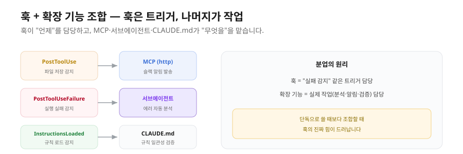
6.1 훅 + MCP — 외부 서비스 자동 연동
PreToolUse·PostToolUse 훅에서 type: "http"로 외부 API를 직접 호출하거나 MCP 도구를 호출해 외부 서비스와 연동할 수 있습니다. 예를 들어 파일 저장 후 슬랙에 알림을 보내는 훅은 이렇게 씁니다.
{
"hooks": {
"PostToolUse": [
{
"type": "http",
"match": "Edit|Write",
"url": "https://hooks.slack.com/services/YOUR/WEBHOOK/URL",
"method": "POST",
"body": { "text": "파일이 수정되었습니다: $TOOL_PARAMS.path", "channel": "#it-logs" }
}
]
}
}
RSVP의 배포 관련 파일이 바뀔 때마다 #it-logs 채널에 자동 기록이 남아, 누가 언제 무엇을 건드렸는지 추적됩니다.
6.2 훅 + 서브에이전트 — 자동 분석 위임
PostToolUseFailure 훅이 도구 실행 실패를 감지하면, type: "agent"로 서브에이전트에 에러 분석을 위임할 수 있습니다.
{
"hooks": {
"PostToolUseFailure": [
{
"type": "agent",
"match": "Bash",
"agent": "error-analyzer",
"prompt": "다음 명령 실패를 분석하고 해결책을 제안합니다:\n$TOOL_ERROR"
}
]
}
}
이때 error-analyzer 서브에이전트는 3강에서 배운 대로 격리된 컨텍스트에서 에러를 분석하고 결과만 메인 세션에 되돌립니다. 훅이 "실패 감지"라는 트리거를, 서브에이전트가 "깊은 분석"을 각각 맡는 분업입니다.
6.3 훅 + CLAUDE.md — 규칙 자동 검증
InstructionsLoaded 훅으로 CLAUDE.md·규칙 파일이 로드될 때마다 규칙 항목을 자동 검증할 수 있습니다.
{
"hooks": {
"InstructionsLoaded": [
{ "type": "command", "command": "~/.claude/hooks/validate_rules.sh" }
]
}
}
예를 들어 규칙 파일에 금지된 도구가 명시되었는지, 권한 설정이 서로 모순되지 않는지를 자동으로 점검합니다. CLAUDE.md가 "권고"라면, 이 훅은 그 권고 자체가 일관된지를 "강제로" 검사하는 셈입니다.
7. 자연어 hook — 코드 없이 작성하기
7.1 자연어로 hook 정의
훅을 반드시 스크립트로 짜야 하는 것은 아닙니다. .claude/hooks/<event>.md 파일에 자연어로 동작을 정의하면 Cowork이 자동으로 해석·실행합니다. 코드를 모르는 IT 기획자에게 특히 유용합니다.
---
name: friendly-commit-message
event: before_command
match_command: "^git commit"
---
# Hook 동작
git commit 명령 직전에 다음을 검토합니다.
1. 커밋 메시지가 50자 이내인가
2. 메시지가 "feat:", "fix:", "docs:", "refactor:", "test:" 중 하나로
시작하는가 (Conventional Commits)
3. 변경된 파일 목록을 요약해 메시지와 일치하는지 확인
셋 중 하나라도 안 맞으면:
- 사용자에게 알려주고 더 나은 메시지를 제안
- 사용자 승인 시에만 실제 commit 진행
자연어 훅은 정규식이나 종료 코드를 몰라도, 의도만 명확하게 문장으로 쓰면 동작합니다. "커밋 메시지 규칙을 검사하라"는 판단이 LLM에게 맡겨지므로, 스크립트로는 표현하기 번거로운 "메시지가 변경 내용과 맞는지" 같은 유연한 검사도 가능합니다.
7.2 자연어 vs 스크립트 — 무엇을 언제
자연어 훅과 스크립트 훅은 트레이드오프가 뚜렷합니다.
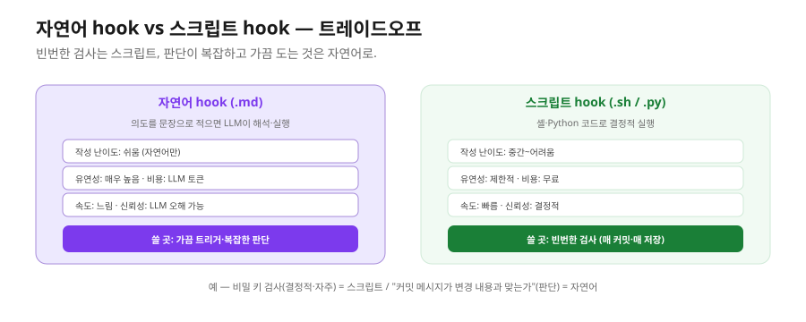
| 항목 |
자연어 hook |
스크립트 hook |
| 작성 난이도 |
쉬움 (자연어만) |
중간~어려움 |
| 실행 속도 |
느림 (LLM 호출) |
빠름 |
| 비용 |
LLM 토큰 소모 |
무료 |
| 유연성 |
매우 높음 |
제한적 |
| 신뢰성 |
LLM 오해 가능성 |
결정적 |
선택 기준은 명확합니다. 빈번하게 트리거되는 훅(매 커밋·매 파일 저장)은 스크립트로 짜야 합니다. 매번 LLM을 호출하면 느리고 비쌉니다. 반대로 가끔 트리거되고 판단이 복잡한 훅은 자연어가 낫습니다. 비밀 키 검사처럼 결정적이고 자주 도는 것은 스크립트, "이 커밋 메시지가 변경 내용을 잘 요약했는가" 같은 판단이 필요한 것은 자연어로 나눕니다.
8. 조직 차원 품질 게이트 설계
8.1 품질 게이트란
품질 게이트(Quality Gate)는 조직의 모든 작업이 통과해야 하는 자동 검증 모음입니다. 사람이 깜빡해도 기계가 검사하므로, 회사의 품질·보안 정책이 개인의 기억력이 아니라 시스템에 내장됩니다. CLAUDE.md 규칙이 "지키자는 약속"이라면, 품질 게이트는 "통과하지 못하면 진행이 막히는 관문"입니다.
8.2 표준 품질 게이트 5가지
실무에서 회사 표준으로 두기 좋은 다섯 개의 게이트는 다음과 같습니다.
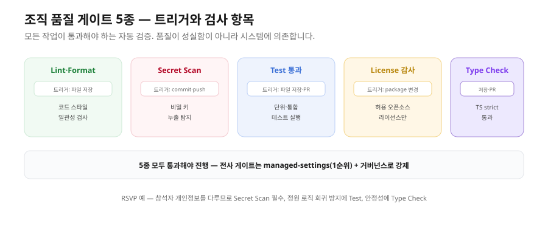
| 게이트 |
트리거 |
검사 항목 |
| Lint·Format |
파일 저장 |
코드 스타일 일관성 |
| Secret Scan |
commit·push |
비밀 키 누출 |
| Test 통과 |
파일 저장·PR |
단위·통합 테스트 |
| License 감사 |
package 변경 |
허용된 오픈소스 라이선스만 |
| Type Check |
파일 저장·PR |
TypeScript strict 통과 |
이 다섯 개를 회사 표준으로 두면 품질이 개별 명령이나 담당자의 성실함에 의존하지 않고 시스템에 내장됩니다. RSVP 서비스라면 참석자 개인정보를 다루므로 Secret Scan은 필수이고, 정원 계산 로직의 회귀를 막기 위해 Test 통과 게이트를, 타입 안정성을 위해 Type Check 게이트를 둡니다.
8.3 사내 hook 라이브러리
품질 게이트를 조직에 배포하는 실용적 방법은 훅 스크립트를 하나의 git 저장소로 묶는 것입니다.
company-claude-hooks/ # git 저장소
├── README.md
├── hooks/
│ ├── before_file_save_lint.sh
│ ├── before_command_secret_check.py
│ ├── before_command_license_audit.py
│ ├── after_command_test_runner.sh
│ └── session_end_company_log.py
├── settings.json.template
└── docs/
├── 도입_가이드.md
└── 기여_가이드.md
직원이 본인 환경에 한 번 셋업하면(저장소를 클론해 훅을 ~/.claude/hooks/로 복사하고 실행 권한을 부여) 회사 표준이 자동으로 적용됩니다. 새로 입사한 직원도 이 저장소만 클론하면 첫날부터 회사 품질 정책을 그대로 따르게 됩니다.
8.4 거버넌스 — 누가 hook을 추가하나
조직이 커지면 훅 변경에 거버넌스가 필요합니다. 아무나 전사 훅을 바꾸면 위험하기 때문입니다. 통상 세 계층으로 나눕니다.
- 개인 hook — 본인 글로벌(
~/.claude/)에 자유롭게 둡니다.
- 팀 hook — 팀 git 저장소에 두고, 팀장의 PR 승인을 거칩니다.
- 전사 hook — 회사 git 저장소에 두고, 보안·CTO·DevOps 승인을 거칩니다.
품질 게이트는 보통 전사 단위입니다. 한 번 정해지면 모두에게 강제되며, 앞의 5단계 우선순위에서 1순위 managed-settings로 배포해 개인이 끌 수 없게 만듭니다. 이 거버넌스가 "강제 레일"로서의 훅의 성격을 조직 차원에서 완성합니다.
9. 함정 — 흔히 빠지는 다섯 가지
훅은 강력하지만 잘못 쓰면 오히려 느려지고 사람을 막습니다. 실무에서 자주 마주치는 함정 다섯 가지를 정리합니다.
9.1 hook이 너무 많아 모든 게 느려진다
매 파일 저장마다 훅 5개가 돌면 사용자 인터랙션 전체가 느려집니다. 자주 트리거되는 훅은 1초 안에 끝나도록 가볍게 유지하고, 무거운 검사(전체 테스트 실행, 라이선스 전수 감사)는 commit·push 시점으로 미룹니다. "매 저장마다"와 "커밋할 때만"을 구분하는 것이 성능의 핵심입니다.
9.2 hook이 실패하면 사용자가 막힌다
스크립트가 비정상 종료(exit 1, exit 2)하면 명령이 차단됩니다. 의도된 차단(비밀 키 누출)은 괜찮지만, 의도치 않은 종료(스크립트 버그)는 사용자가 작업을 못 하게 만듭니다. 훅은 충분히 테스트하고, 차단 시에는 명확한 에러 메시지로 왜 막혔는지 알려 줘야 합니다.
9.3 비밀 정보를 hook 환경변수에 노출한다
Slack webhook URL을 훅 스크립트에 하드코딩하면 그 스크립트가 git에 올라가면서 URL이 노출됩니다. webhook·API 키 같은 비밀 정보는 환경변수나 별도 secrets 파일(.gitignore로 제외)에서 읽어야 합니다. 5.4의 슬랙 알림 훅이 URL을 환경변수에서 읽은 것이 바로 이 이유입니다.
9.4 디버깅이 어렵다
훅이 조용히(silent) 실패하면 원인을 추적하기 어렵습니다. 훅은 항상 로그 파일에 실행 기록을 남기고, Cowork이 훅 출력을 볼 수 있도록 stdout·stderr를 적극 활용해야 합니다. 특히 자연어 훅은 LLM의 판단이 개입하므로, 왜 그렇게 판단했는지 로그로 남겨 두면 디버깅이 훨씬 수월합니다.
9.5 회사 정책을 개인이 무시한다
개인 훅으로 회사 보안 검사를 비활성화할 수 있습니다. 기술적으로 가능하지만 위험합니다. 이를 막는 것이 앞의 거버넌스와 5단계 우선순위입니다. 전사 품질 게이트는 1순위 managed-settings로 배포해 개인 설정이 덮어쓸 수 없게 하고, 변경은 승인 절차를 거치도록 강제합니다.
용어 정리
| 용어 |
뜻 |
| Hook(훅) |
특정 이벤트 발생 시 정해진 동작을 자동 실행하는 강제 메커니즘 |
| 라이프사이클 이벤트 |
세션·프롬프트·도구·서브에이전트의 각 시점에 발생하는 훅 트리거 |
| PreToolUse |
도구 실행 직전에 발동하는 이벤트. 위험 명령 차단·권한 검증에 사용 |
| PostToolUse |
도구 실행 직후(성공) 발동. 자동 lint·테스트·변경 감지에 사용 |
| PostToolUseFailure |
도구 실행 실패 시 발동. 에러 자동 분석·재시도에 사용 |
| SessionStart / SessionEnd |
세션 시작·종료 이벤트. 컨텍스트 로드, 로깅·알림에 사용 |
| type (command/http/prompt/agent) |
훅 실행 방식. 셸·HTTP·LLM 프롬프트·서브에이전트 |
| match |
특정 도구·파일에만 훅을 적용하는 필터 (예: "Edit\|Write") |
| exit 0 / 1 / 2 |
훅 종료 코드. 통과 / 경고만 / 차단+피드백 |
| settings.json |
훅을 이벤트별 배열로 등록하는 설정 파일 |
| managed-settings.json |
조직 전체에 강제 배포하는 1순위 설정. 개인이 덮어쓸 수 없음 |
| 배열 병합 |
permissions·hooks 배열이 덮어쓰기 대신 우선순위 역순으로 누적되는 규칙 |
| 자연어 hook |
스크립트 대신 .md 파일에 의도를 문장으로 적어 정의하는 훅 |
| 품질 게이트(Quality Gate) |
조직 모든 작업이 통과해야 하는 자동 검증 모음 |
| 거버넌스 |
개인·팀·전사 계층별로 훅 추가·변경 권한을 나누는 관리 체계 |
한눈에 정리
- Hook은 강제, CLAUDE.md는 권고다. CLAUDE.md 규칙은 LLM이 확률적으로 따르지만(약 90%), 훅은 정해진 이벤트에 기계가 100% 실행하며 우회할 수 없습니다. 추론 시스템 위에 고정된 안전 레일을 까는 장치입니다.
- 이벤트 라이프사이클과 종료 코드가 핵심이다. PreToolUse(실행 전)·PostToolUse(실행 후)가 가장 자주 쓰이며,
exit 2(차단)·exit 1(경고)·exit 0(통과)로 흐름을 제어합니다. 강제할 것은 exit 2, 알릴 것은 exit 0으로 설계합니다.
- 설정은 5단계 우선순위, 배열은 병합된다. managed-settings(1순위, 조직 강제)부터 기본값까지 5단계이며, 높은 순위가 낮은 순위를 덮어씁니다. 단 permissions·hooks 배열은 덮어쓰지 않고 누적됩니다.
- 훅은 MCP·서브에이전트·CLAUDE.md와 조합할 때 강력하다. 훅이 트리거를, 다른 기능이 실제 작업을 맡습니다. 빈번한 검사는 스크립트 훅, 판단이 복잡하고 가끔 도는 것은 자연어 훅으로 나눕니다.
- 품질 게이트를 조직에 내장한다. Lint·Secret Scan·Test·License·Type Check 5종을 표준으로 두고, 전사 게이트는 managed-settings와 거버넌스로 강제해 개인이 끄지 못하게 합니다. 품질이 성실함이 아니라 시스템에 의존하게 됩니다.
다음 강에서는 MCP 심화를 다룹니다. 이번 강에서 훅이 외부 서비스와 연동하는 통로로 잠깐 등장한 MCP(Model Context Protocol)를, 서버 구조·도구 정의·인증·실무 연동 패턴까지 본격적으로 파고듭니다.
3부 · 중급
코딩 with Claude 중급 5강. MCP 심화 — 다중 운영·핵심 커넥터·자체 MCP·비용
유형: 이론 (다이어그램 보강판) · 읽는 데 약 45분
선수: 입문의 MCP 개념(범용 어댑터 비유)과 중급 1~4강. 특히 4강(Hooks)과 3강(서브에이전트)의 감각이 있으면 이 강의 조합 예시가 쉽게 읽힙니다.
이 강을 마치면: ① MCP 10~20개를 한 세션에서 운영할 때의 토큰·컨텍스트 비용을 설명하고 운영 4패턴 중 하나를 고른다 ② Notion·Playwright·GitHub·Sentry·Stripe/Toss·Supabase 6개 핵심 MCP의 심화 활용과 조합을 안다 ③ MCP 서버 설치·관리 실무(npx vs uvx, 트러블슈팅)를 개념으로 이해한다 ④ 이미 만들어진 자체 MCP를 등록·인증·사용하고, MCP 비용 정책과 절감 4패턴을 판단한다.
0. 들어가며 — MCP 하나에서 여럿의 협력으로
입문 단계에서는 MCP를 하나만 붙여 썼습니다. Supabase MCP 하나로 테이블을 조회하고 데이터를 넣는 정도였습니다. 도구가 하나뿐이니 컨텍스트 부담도 없고, 무엇을 언제 쓸지 헷갈릴 일도 없었습니다.
중급에서는 여기서 한 걸음 더 나갑니다. 여러 MCP가 한 세션에서 협력하는 단계입니다. 이 패턴이 가져오는 가치는 세 가지입니다.
첫째, 한 번의 자연어 요청에 여러 SaaS가 자동으로 연동됩니다. 예를 들어 "어제 받은 메일 중 중요한 것을 노션에 정리하고 슬랙에 공유해줘"라고 하면, Gmail·Notion·Slack 세 도구가 사람 손을 거치지 않고 이어서 동작합니다. 둘째, 개별 도구를 하나씩 열고 닫는 작업 시간이 사라집니다. 셋째, 도구 사이의 정보 흐름이 더 이상 사람의 머릿속이 아니라 에이전트의 컨텍스트 안에 있습니다. 메일에서 뽑은 내용을 노션으로 옮기고 다시 슬랙으로 나르는 연결을 사람이 기억하고 손으로 이을 필요가 없어집니다.
다만 도구를 많이 붙일수록 새로운 문제가 따라옵니다. MCP는 켜두는 것만으로도 비용을 쓰고, 여러 도구가 같은 일을 하면 에이전트가 헷갈리며, 결제·삭제 같은 위험한 권한이 무심코 열려 있으면 사고가 납니다. 이 강은 그 다중 운영을 다루는 법, 여섯 개 핵심 MCP의 심화 활용, 자체 MCP를 쓰는 법, 그리고 비용 정책을 차례로 봅니다.
📌 러닝 예시 — 이 강에서도 사내 이벤트 RSVP 서비스(참석 신청·취소·정원 관리)를 예시로 씁니다. RSVP를 운영하면서 Supabase로 데이터를, GitHub으로 코드를, Sentry로 에러를, Notion으로 보고서를 다룬다고 떠올리면 각 MCP가 어디에 놓이는지 잡기 쉽습니다.
1. MCP 10~20개 동시 운영 — 토큰·컨텍스트 관리
1.1 MCP 메타데이터 비용
MCP를 붙이는 데는 눈에 보이지 않는 비용이 있습니다. 각 MCP는 활성화되는 순간 자기가 가진 도구·리소스·프롬프트 정보를 컨텍스트에 로드합니다. 아직 아무 일도 시키지 않았는데도, 그 도구가 무엇을 할 수 있는지에 대한 설명이 대화 공간을 차지한다는 뜻입니다.
규모를 가늠하면 이렇습니다. 도구 1개당 평균 200~500 토큰이 듭니다. 도구 10개를 가진 MCP라면 그 하나만으로 2~5K 토큰을 차지합니다. MCP 개수가 늘면 이 비용은 곱절로 쌓입니다.
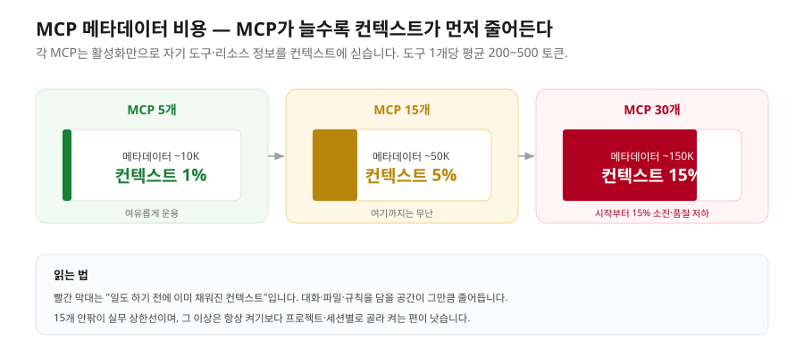
| MCP 개수 |
메타데이터 |
컨텍스트 점유율 (1M 기준) |
| 5개 |
약 10K |
1% |
| 15개 |
약 50K |
5% |
| 30개 |
약 150K |
15% |
15개 정도까지는 무난합니다. 그러나 30개를 넘어가면 세션을 시작하는 순간부터 컨텍스트의 15%가 이미 사라진 상태가 됩니다. 대화 히스토리·파일 내용·시스템 규칙을 담을 공간이 그만큼 줄어들고, 결과적으로 응답 품질이 떨어집니다. "도구는 많을수록 좋다"가 아니라 "필요한 만큼만 켠다"가 다중 운영의 첫 원칙입니다.
1.2 MCP 운영 4패턴
MCP를 어디까지 켜둘 것인가는 네 가지 패턴으로 정리됩니다. 설정 부담과 컨텍스트 비용이 서로 반대로 움직인다는 점을 기억하면 선택이 쉬워집니다.
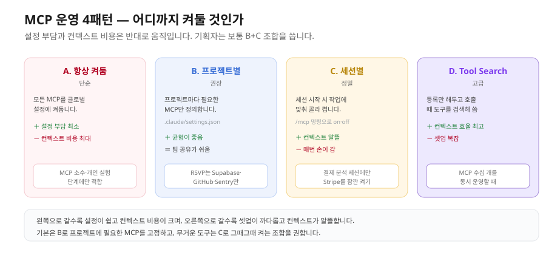
패턴 A — 항상 켜둠 (단순). 모든 MCP를 글로벌 설정에 켜둡니다. 한 번 설정하면 신경 쓸 일이 없어 설정 부담은 가장 적지만, 컨텍스트 비용은 가장 큽니다. MCP가 소수이거나 개인이 실험하는 단계에만 적합합니다.
패턴 B — 프로젝트별 (권장). 프로젝트마다 그 작업에 필요한 MCP만 정의합니다. .claude/settings.json에 적어두면 되고, 파일을 팀과 공유하기도 쉽습니다. RSVP 프로젝트라면 Supabase·GitHub·Sentry만 켜두는 식입니다. 설정과 비용의 균형이 좋아 기본으로 삼기 좋은 패턴입니다.
패턴 C — 세션별 (정밀). 세션을 시작할 때 그날의 작업 성격에 맞춰 MCP를 골라 켭니다. /mcp 명령으로 그 자리에서 활성화·비활성화합니다. 컨텍스트를 가장 알뜰하게 쓸 수 있지만 매번 손이 갑니다. 결제 데이터를 분석하는 세션에만 Stripe를 잠깐 켜는 식으로 씁니다.
패턴 D — Tool Search (고급). MCP는 등록만 해두고, 실제 호출할 때마다 필요한 도구를 검색해서 쓰는 방식입니다. 메타데이터를 상시 로드하지 않으니 컨텍스트 효율은 가장 높지만 셋업이 복잡합니다. MCP를 수십 개 동시에 운영해야 하는 고급 단계에서 다룹니다.
비개발자 IT 기획자에게는 패턴 B와 C의 조합을 권합니다. 프로젝트에 필요한 MCP를 B로 고정해두고, 무겁거나 위험한 도구는 C로 그때그때 켜는 방식입니다.
1.3 MCP 카테고리별 정리
본인 회사가 쓰는 도구가 MCP로 제공되는지 점검할 때는 카테고리로 나눠 보면 빠릅니다. 대표적인 MCP와 자주 쓰는 도구를 카테고리별로 정리하면 다음과 같습니다.
| 카테고리 |
대표 MCP |
자주 쓰는 도구 |
| 이메일·캘린더 |
Gmail · Outlook · Calendar |
검색·라벨·답장·일정 |
| 메신저 |
Slack · Teams · Discord |
메시지 발송·검색·스레드 |
| 문서·노트 |
Notion · Google Docs · Confluence |
페이지 생성·DB 쿼리·블록 편집 |
| 파일 |
Google Drive · OneDrive · Box |
파일 검색·업로드·다운로드 |
| 개발 |
GitHub · GitLab · Bitbucket |
PR·이슈·commit·릴리스 |
| PM |
Linear · Asana · Jira · ClickUp |
이슈 생성·상태 변경·리포트 |
| 모니터링 |
Sentry · DataDog · LogRocket |
에러 조회·알림·필터 |
| CRM·세일즈 |
Salesforce · HubSpot · Pipedrive |
리드·계약·이메일 |
| 결제 |
Stripe · Toss · KakaoPay |
결제 조회·환불·구독 |
| DB·데이터 |
Supabase · PostgreSQL · BigQuery |
쿼리·스키마·마이그레이션 |
| 자동화 |
Zapier · n8n · Make |
트리거·체인 |
| 마케팅 |
Mailchimp · Stibee · Adobe Analytics |
캠페인·이벤트·리포트 |
본인 회사가 매일 쓰는 SaaS를 이 표에 대응시켜 보면, 어떤 도구에 MCP가 있고 어디에 우선순위를 둘지가 한눈에 드러납니다. 공식 MCP가 있는 것과 없는 것을 구분하고, 없는 것은 뒤에서 다룰 자체 MCP 후보로 표시해두면 회사용 MCP 매트릭스가 완성됩니다.
2. 6개 핵심 MCP 심화 활용
실무에서 자주 쓰는 여섯 개 MCP를 심화 수준으로 봅니다. 핵심은 개별 도구를 하나씩 쓰는 것을 넘어, 여러 MCP를 조합해 하나의 자연어 요청을 여러 SaaS가 이어받게 만드는 것입니다.
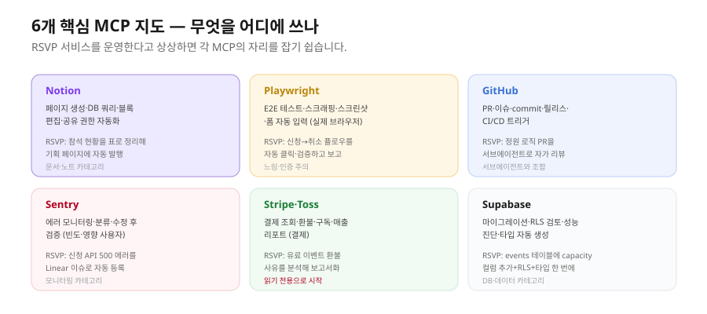
2.1 Notion MCP
Notion MCP로 자주 하는 작업은 네 가지입니다. 페이지 생성(자연어로 "이런 페이지 만들어줘"), DB 쿼리(특정 조건의 row 검색), 블록 편집(기존 페이지의 일부 수정), 공유 자동화(만든 페이지에 팀원 권한 부여)입니다.
심화 활용의 묘미는 이 네 가지가 한 문장 안에서 연쇄로 일어난다는 점입니다. 예를 들어 "마케팅 팀 노션 워크스페이스의 '캠페인' DB에서 이번 분기 캠페인 5개를 가져와서, 각각의 KPI를 표로 정리한 새 페이지를 만들고, 마케팅 팀장에게 view 권한을 부여해줘"라는 한 줄에는 다섯 단계가 담깁니다. ① DB ID 검색, ② row 5개 fetch, ③ 데이터 가공, ④ 새 페이지 작성, ⑤ 권한 변경입니다. RSVP 서비스라면 참석 현황을 조회해 표로 정리한 뒤 기획 페이지에 자동 발행하는 식으로 응용합니다.
다만 함정도 있습니다. DB가 너무 크면 page_size와 필터를 반드시 명시해야 합니다. 블록 편집은 정확한 block ID가 있어야 하고, 권한 부여는 사용자 이메일이 정확해야 엉뚱한 사람에게 열리지 않습니다.
2.2 Playwright MCP
Playwright MCP는 실제 브라우저를 띄워 사람의 조작을 흉내 냅니다. 자주 쓰는 작업은 자동 E2E 테스트(사용자 플로우 시뮬레이션), 웹 스크래핑(동적 페이지 데이터 추출), 스크린샷 자동화(정기 모니터링), 폼 자동 채움(반복 입력)입니다.
심화 활용의 대표는 자동 테스트입니다. 예를 들어 "우리 사이트(staging.example.com)의 회원가입 → 로그인 → 프로필 변경 → 로그아웃 플로우를 자동 테스트하고 결과를 보고해줘. 각 단계에서 스크린샷을 저장해줘"라고 지시하면, Playwright MCP는 ① 헤드리스 브라우저를 실행하고, ② 단계별 동작을 시뮬레이션하며, ③ 어설션(로그인 후 프로필 페이지가 맞는지 등)을 걸고, ④ 실패하면 스크린샷과 DOM을 저장한 뒤, ⑤ 결과를 마크다운으로 보고합니다. RSVP라면 참석 신청 → 취소 플로우가 정상 동작하는지, 정원이 꽉 찬 뒤 신청이 막히는지를 자동으로 클릭·검증하게 할 수 있습니다.
주의할 점이 셋 있습니다. 사이트에 인증이나 CAPTCHA가 있으면 막히므로 별도 처리가 필요합니다. 동적 콘텐츠는 로드 대기 시간을 명시해야 합니다. 그리고 Playwright는 브라우저를 실제로 띄우므로 느립니다. 페이지·동작마다 수 초에서 수십 초까지 걸리며, 네트워크 상태와 페이지 무게에 따라 달라집니다.
2.3 GitHub MCP
GitHub MCP의 자주 쓰는 작업은 PR 자동 리뷰(서브에이전트와 조합), 이슈 자동 분류·라벨링, commit·tag·릴리스 자동화, CI/CD 트리거입니다.
심화의 핵심은 3강에서 다룬 서브에이전트와의 조합입니다. 예를 들어 새로 열린 PR을 네 개의 서브에게 나눠 검토하게 할 수 있습니다. code-reviewer에게는 품질·버그를, security-reviewer에게는 보안 위험을, ui-reviewer에게는 UI 변경 영향을, test-writer에게는 누락된 테스트 식별을 맡기고, 종합 결과를 PR 코멘트로 자동 게시하는 식입니다. 서브에이전트가 "누구에게 맡길까"를 담당하고 GitHub MCP가 "PR을 읽고 코멘트를 다는" 손발을 담당합니다. 본인이 본인 PR을 자가 리뷰하거나, 팀 내 봇처럼 상시 돌릴 수 있습니다. RSVP의 정원 계산 로직 PR이라면 동시 신청 시 정원이 정확히 지켜지는지를 서브에이전트가 파고들게 만들 수 있습니다.
2.4 Sentry MCP
Sentry MCP는 운영 중 발생하는 에러를 다룹니다. 자주 쓰는 작업은 에러 모니터링(새 에러 발생 시 정보 가져오기), 에러 분류(빈도·영향받은 사용자 수·복구 가능성), 수정 후 검증(특정 commit 이후 에러가 줄었는지 추적)입니다.
심화는 Linear 같은 PM 도구와의 조합입니다. 예를 들어 "지난 24시간 동안 우리 앱에서 발생한 에러 중 영향받은 사용자가 100명 이상인 것 5개를 찾아서, 각각의 스택 트레이스를 분석하고 가능한 원인과 수정 방향을 제안해줘. Linear에 이슈로 자동 등록해줘"라고 하면, Sentry가 에러를 조회·분석하고 Linear가 이슈를 만듭니다. 이 조합을 매일 아침 자동으로 호출하게 하면 운영 점검이 자동화됩니다. RSVP라면 참석 신청 API의 500 에러를 골라 Linear 이슈로 자동 등록하는 아침 루틴을 만들 수 있습니다.
2.5 Stripe·Toss MCP (결제)
결제 MCP의 자주 쓰는 작업은 결제 조회(특정 사용자·기간의 결제 이력), 환불 처리(조건 검토 후 환불), 구독 변경(플랜 업그레이드·다운그레이드), 매출 리포트(주간·월간 요약)입니다.
심화는 결제 데이터를 비즈니스 인사이트로 바꾸는 조합입니다. 예를 들어 "이번 달 환불 요청 5건을 분석해서 ① 환불 사유, ② 패턴, ③ 제품 개선 시사점을 정리하고 노션에 보고서를 작성해줘"라고 하면, Stripe가 데이터를 뽑고 Notion이 보고서를 발행합니다. 단순한 숫자가 개선 과제로 자동 변환됩니다. RSVP가 유료 이벤트를 운영한다면 환불 사유를 분석해 정책 개선 보고서로 만드는 식입니다.
⚠️ 결제 MCP는 권한을 매우 좁게 — 자동 환불이나 구독 변경은 위험합니다. 읽기 전용 권한으로 시작하고, 쓰기 작업은 반드시 사람의 승인을 거치게 합니다. 돈이 오가는 도구에서는 "일단 읽기만"이 기본값이어야 합니다.
2.6 Supabase MCP (입문 복습 + 심화)
Supabase MCP는 입문에서 이미 다뤘습니다. 프로젝트 정보와 테이블 스키마를 조회하고, 단순한 SELECT·INSERT를 자연어로 실행하는 수준이었습니다.
심화에서는 네 가지가 더해집니다. 마이그레이션 자동화(스키마 변경을 SQL로 자동 작성), RLS 정책 검토(정책 누락이나 과다 권한을 자동 점검), 성능 진단(느린 쿼리 분석과 인덱스 제안), 타입 자동 생성(supabase gen types로 TypeScript 타입 생성)입니다.
이 넷이 한 요청에 이어지는 것이 심화의 묘미입니다. 예를 들어 RSVP에서 "Supabase events 테이블에 'tags' 컬럼(text[])과 'capacity' 컬럼(int)을 추가하고, RLS 정책과 TypeScript 타입도 함께 갱신해줘. 마이그레이션 SQL은 supabase/migrations/에 저장해줘"라고 하면, 스키마 변경부터 타입 안전성 확보까지 한 번에 처리됩니다. 컬럼 추가·정책·타입이 따로 노는 것이 아니라 하나의 흐름으로 묶입니다.
3. MCP 서버 설치·관리 실무
MCP를 여럿 운영하려면 서버를 추가·제거·점검하는 감각이 필요합니다. 기획자가 직접 서버를 짜는 것은 아니지만, 어떤 방식으로 설치되고 어디가 자주 막히는지는 알아둘 가치가 있습니다.
3.1 인기 MCP 서버와 실행 방식
Cowork과 호환되는 커뮤니티 MCP 서버 중 IT 기획자가 자주 접하는 것들을 정리하면 다음과 같습니다.
| 서버명 |
용도 |
실행 방식 |
| filesystem |
파일 읽기·쓰기·경로 탐색 |
npx |
| git |
Git 저장소·commit·브랜치 조회 |
npx |
| github |
GitHub API (PR·이슈·릴리스) |
npx |
| slack |
Slack 메시지·검색·스레드 |
npx |
| sqlite / postgresql |
SQL 쿼리 실행 (로컬·클라우드) |
uvx (Python) |
| brave-search |
웹 검색 (Brave Search API) |
npx |
더 많은 서버는 공식 카탈로그(github.com/modelcontextprotocol/servers)에서 확인할 수 있습니다.
3.2 서버 추가·관리의 기본 명령
MCP 서버는 CLI로 추가하고 제거합니다. 가장 기본이 되는 형태는 claude mcp add <서버명> <실행 명령>입니다. 예를 들어 GitHub MCP를 추가할 때는 claude mcp add github npx -y @modelcontextprotocol/server-github처럼, PostgreSQL MCP를 추가할 때는 claude mcp add postgres uvx --from mcp-server-postgres postgres처럼 씁니다. 설치된 서버 목록은 claude mcp list로 확인하고, 제거는 claude mcp remove <서버명>으로 합니다.
설정은 자동으로 저장됩니다. macOS·Linux에서는 ~/.claude/mcp.json에, Windows에서는 %APPDATA%\Claude\mcp.json에 기록됩니다.
3.3 설정 파일 직접 편집
mcp.json을 텍스트 에디터로 직접 열면 환경변수·인증·커스텀 경로를 세밀하게 지정할 수 있습니다. 구조는 서버 이름 아래에 실행 명령(command), 인자(args), 환경변수(env)를 두는 형태입니다.
실제 파일은 아래처럼 생겼습니다. 서버마다 무엇을 실행하고, 어떤 키로 인증하는지를 적습니다.
// ~/.claude/mcp.json
{
"mcpServers": {
"github": {
"command": "npx",
"args": ["-y", "@modelcontextprotocol/server-github"],
"env": { "GITHUB_TOKEN": "${GITHUB_TOKEN}" }
},
"postgres": {
"command": "uvx",
"args": ["--from", "mcp-server-postgres", "postgres"],
"env": { "DATABASE_URL": "${DATABASE_URL}" }
}
}
}
${GITHUB_TOKEN}처럼 값을 직접 쓰지 않고 환경변수로 참조하면, 이 파일을 실수로 공유해도 실제 키가 노출되지 않습니다.
{
"mcpServers": {
"github": {
"command": "npx",
"args": ["-y", "@modelcontextprotocol/server-github"],
"env": { "GITHUB_PERSONAL_ACCESS_TOKEN": "ghp_..." }
},
"custom-internal": {
"command": "node",
"args": ["/opt/mcp/company-server/dist/index.js"],
"env": { "COMPANY_API_KEY": "${env:COMPANY_API_KEY}" }
}
}
}
환경변수를 다룰 때 핵심은 평문으로 저장하지 않는 것입니다. API 키를 파일에 직접 적으면 유출 위험이 큽니다. ${env:VAR_NAME} 형태로 참조하면 시스템 환경변수에서 값을 읽어오므로, 키 자체는 .env 파일이나 Cowork 설정에서 관리하고 파일에는 참조만 남습니다.
3.4 npx vs uvx — Node와 Python의 갈림
MCP 서버는 Node.js 또는 Python으로 구현됩니다. 실행 방식이 갈리는 것은 이 때문입니다.
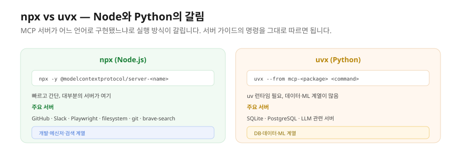
npx는 Node.js 기반 서버를 설치·실행합니다. 빠르고 간단하며, GitHub·Slack·Playwright 등 대부분의 서버가 npx로 돕니다. npx -y @modelcontextprotocol/server-<name> 형태입니다. uvx는 Python 기반 서버를 실행하며 uv 런타임이 필요합니다. 데이터·ML 계열이 많고, SQLite·PostgreSQL·LLM 관련 서버가 여기에 속합니다. uvx --from mcp-<package> <command> 형태입니다.
선택 기준은 간단합니다. 각 서버의 설치 가이드에 명시된 명령을 그대로 따르면 되고, 모르겠으면 그 서버의 GitHub 저장소 README를 확인하면 됩니다.
3.5 트러블슈팅 — 자주 막히는 곳
"MCP 서버가 응답하지 않는다" 는 다중 운영에서 가장 흔한 문제입니다. 점검 순서는 이렇습니다. 먼저 claude mcp list로 서버가 활성 상태인지 확인하고, 다음으로 환경변수 누락(API 키·토큰)을 의심하며, mcp.json의 JSON 문법 오류를 검사하고, 마지막으로 Node.js·Python 버전 호환성(예: Node 18 이상 필요)을 확인합니다.
"명령어를 모르겠다" 면 공식 문서(modelcontextprotocol.io)와 서버별 README의 예제를 봅니다. "API 키는 어디서 받나" 는 각 SaaS의 관리 화면에서 얻습니다. GitHub은 Settings → Developer settings → Personal access tokens에서, Slack은 Slack App Manifest의 Bot Token에서, 그 밖의 도구는 각 대시보드의 API·Key 섹션에서 발급합니다.
4. 자체 MCP 사용 입문
4.1 자체 MCP란 무엇인가
자체 MCP는 회사의 사내 API·DB·시스템을 MCP 서버로 감싸(래핑) Cowork이 쓸 수 있게 만든 것입니다. 서버를 만드는 일은 고급 과정에서 본격적으로 다루고, 중급에서는 이미 만들어진 자체 MCP를 사용하는 법만 익힙니다. 사외에 공식 MCP가 없는 사내 ERP·CRM·데이터 웨어하우스를 자연어로 다루게 해주는 것이 자체 MCP의 목적입니다.
4.2 자체 MCP 사용 흐름
전체 흐름은 다섯 단계이며, 이 중 앞 두 단계는 IT팀의 몫이고 뒤 세 단계가 기획자가 실제로 하는 일입니다.
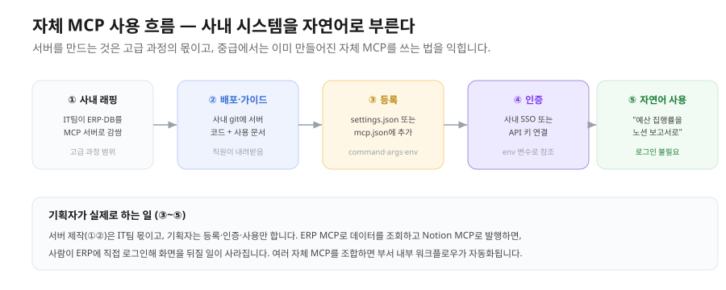
① 회사 IT팀이 사내 시스템을 MCP 서버로 래핑합니다(고급 과정 범위). ② 사내 git 저장소에 서버 코드와 사용 가이드를 올려 직원이 내려받게 합니다. ③ 직원이 본인 Cowork 환경의 settings.json 또는 mcp.json에 서버를 등록합니다. ④ 사내 SSO나 API 키로 인증을 연결합니다. ⑤ 그 뒤로는 자연어로 사용합니다.
등록은 앞서 본 형식 그대로입니다. 서버 이름 아래에 실행 명령과 인자, 그리고 인증에 쓸 환경변수를 둡니다.
{
"mcpServers": {
"company-internal": {
"command": "node",
"args": ["/path/to/company-mcp/dist/index.js"],
"env": { "COMPANY_API_TOKEN": "${env:COMPANY_API_TOKEN}" }
}
}
}
이렇게 등록하면 Cowork이 시작할 때 자체 MCP 서버에 연결합니다.
4.3 사용 예시
회사 사내 ERP에 자체 MCP가 붙어 있다고 해봅시다. "이번 분기 우리 부서 예산 집행률을 ERP에서 가져와서 노션 보고서로 만들어줘"라고 하면, ERP MCP가 데이터를 조회하고 Notion MCP가 보고서를 발행합니다. 사람이 ERP에 직접 로그인해 화면을 뒤질 일이 사라집니다. 여러 자체 MCP를 조합하면 부서 내부의 반복 업무가 통째로 자동화됩니다.
5. MCP 비용 정책
5.1 MCP 자체는 무료
MCP는 프로토콜입니다. 프로토콜을 쓰는 것 자체에는 요금이 붙지 않습니다. 비용은 다음 세 곳에서 발생합니다.
첫째, Cowork 토큰 사용입니다. MCP 메타데이터가 컨텍스트를 차지하고, 도구 호출의 인자와 응답도 컨텍스트로 들어옵니다(1.1에서 본 비용). 둘째, 외부 SaaS 호출 비용입니다. Stripe API, OpenAI API처럼 유료 SaaS를 호출하면 그 SaaS의 요금이 붙습니다. 셋째, MCP 서버 호스팅입니다. 자체 MCP를 클라우드에 띄우면 그 인프라 비용이 듭니다.
5.2 비용 절감 4패턴
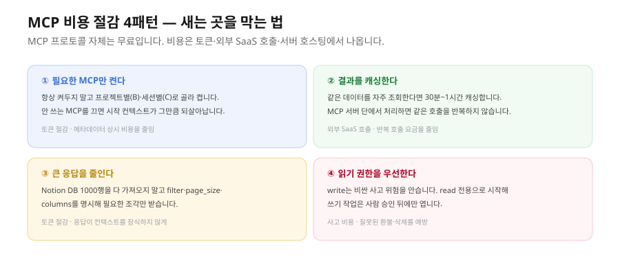
① 필요한 MCP만 켠다. 1.2의 패턴 B·C를 그대로 적용합니다. 항상 켜두지 말고 프로젝트별·세션별로 골라 켜면, 안 쓰는 MCP의 메타데이터 상시 비용이 사라지고 시작 컨텍스트가 되살아납니다.
② 도구 호출 결과를 캐싱한다. 같은 데이터를 자주 조회한다면 30분이나 1시간 단위로 캐싱합니다. MCP 서버 단에서 처리하면 같은 외부 호출을 반복하지 않아 SaaS 호출 요금을 줄입니다.
③ 큰 응답을 줄인다. Notion DB의 1000개 row를 전부 가져오지 말고, 필터·page_size·columns를 명시해 필요한 조각만 받습니다. 응답이 컨텍스트를 잠식하는 것을 막고 토큰을 아낍니다.
④ 읽기 권한을 우선한다. write는 비싼 사고 위험을 안고 있습니다. read 전용으로 시작해 쓰기 작업은 사람 승인 뒤에만 엽니다. 잘못된 환불·삭제가 만드는 비용은 토큰 비용과 비교할 수 없이 큽니다.
5.3 비용 모니터링
비용은 세 층위에서 봅니다. 세션 단위는 /cost 명령으로 확인하고, 개별 SaaS는 각자의 사용량 대시보드(Stripe·Supabase·Sentry 등)에서 봅니다. 월 단위 통합은 Anthropic Console과 각 SaaS 사용량을 합산해 산정합니다.
6. 함정 — 다중 운영에서 흔히 빠지는 다섯 가지
6.1 인증 만료 — 어느 날 갑자기 동작을 멈춘다
OAuth 토큰은 보통 60일에서 1년 사이의 유효기간을 갖습니다. 만료되면 MCP를 재인증해야 하는데, 별도 알림이 없으면 사용자가 한참을 헤매다 뒤늦게 원인을 발견합니다. 만료 알림을 Hooks(4강)로 자동화하거나, 재인증 프로세스를 분기에 한 번씩 정기 점검하는 것이 예방책입니다.
6.2 권한 폭발 — MCP가 너무 많은 일을 할 수 있다
Gmail MCP가 "모든 이메일 읽기·삭제·발송" 권한을 통째로 쥐고 있으면 작은 실수도 큰 사고가 됩니다. 필요한 라벨이나 검색어로 접근 범위를 한정해, 그 MCP가 건드릴 수 있는 영역을 좁혀야 합니다.
6.3 데이터 유출 — MCP가 정보를 밖으로 내보낸다
자체 ERP MCP가 사외로 나가는 호출을 한다면 데이터 유출입니다. 자체 MCP는 코드 리뷰로 어떤 외부 통신을 하는지 확인하고, 네트워크 모니터링으로 예상치 못한 호출을 감시해야 합니다.
6.4 도구 경합 — 같은 일을 여러 MCP가 할 수 있다
Notion에 페이지를 만드는 작업이 Notion MCP와 Zapier MCP 양쪽에 다 있으면, 메인 에이전트가 어느 쪽을 쓸지 헷갈립니다. 겹치는 기능이 있을 때는 어느 MCP를 우선할지 명시해두어야 일관된 결과가 나옵니다.
6.5 응답 지연 — MCP 서버가 느리다
자체 MCP 서버가 느리면(외부 API의 시간 제한 등) 그 하나 때문에 전체 워크플로우가 늘어집니다. 서버의 응답 시간 SLO(목표 응답 시간)를 정의해두고, 그 기준을 넘으면 원인을 점검하는 체계가 필요합니다.
7. MCP와 CI/CD 통합 입문
이 절은 다음 강의 운영 자동화로 넘어가기 전, 개념을 연결하기 위한 짧은 다리입니다. MCP는 사람이 앉아서 시키는 것만이 아니라, 정해진 시각이나 사건에 자동으로 실행되게 만들 수도 있습니다.
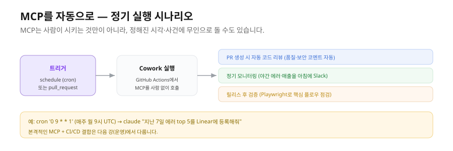
7.1 GitHub Actions에서 MCP 호출하기
GitHub Actions 워크플로우 안에서 Cowork을 호출하면, MCP를 사람 없이 돌릴 수 있습니다. 예를 들어 매주 월요일 아침에 실행되는 워크플로우를 두고, 그 안에서 "지난 7일간의 에러 top 5를 Linear에 등록해줘" 같은 명령을 실행하게 하는 식입니다. 트리거는 schedule(정해진 시각)로 걸고, 실행 단계에서 Cowork 명령을 부릅니다.
name: Weekly Report
on:
schedule:
- cron: '0 9 * * 1' # 매주 월요일 9:00 UTC
jobs:
report:
runs-on: ubuntu-latest
steps:
- uses: actions/checkout@v3
- name: Generate Summary
run: claude "지난 7일 에러 top 5를 Linear에 등록해줘"
7.2 자동화 시나리오
세 가지 대표 시나리오를 개념으로 그려봅니다.
PR 생성 시 자동 코드 리뷰 — PR이 열리거나 갱신될 때(pull_request 트리거) GitHub MCP로 PR 내용을 조회하고, 품질·보안 관점으로 검토한 뒤, 주요 이슈를 코멘트로 자동으로 답니다. 2.3에서 본 서브에이전트 조합을 사람 개입 없이 상시로 돌리는 형태입니다.
정기 모니터링 — 매일 아침 정해진 시각에(schedule 트리거) Sentry MCP로 야간 에러를 조회하고, Stripe MCP로 어제 매출을 집계한 뒤, Slack MCP로 팀장에게 알립니다. "어제 야간 에러·매출·사용자 이상 유무를 Slack에 알려줘" 한 줄이 매일 자동으로 실행됩니다.
릴리스 후 검증 — 배포가 끝난 뒤 Playwright MCP로 핵심 플로우가 정상인지 자동 점검하고, 문제가 있으면 Sentry·Slack으로 즉시 알립니다.
7.3 다음 단계
MCP와 CI/CD의 본격적인 결합은 다음 강에서 다룹니다. 지금 단계에서 챙길 것은 세 가지입니다. 이 강에서 배운 대로 MCP 10~20개를 한 환경에서 협력시키는 감각을 익히고, GitHub Actions의 기본 개념(push·PR 트리거, job·step)을 인식하며, 다음 강에서 자동 코드 리뷰·정기 리포트·배포 자동화가 어떻게 조립되는지를 볼 준비를 하는 것입니다.
용어 정리
| 용어 |
뜻 |
| MCP |
외부 도구·SaaS를 에이전트에 붙이는 표준 연결 프로토콜(범용 어댑터) |
| MCP 메타데이터 |
MCP가 활성화될 때 컨텍스트에 싣는 도구·리소스·프롬프트 정보 |
| 운영 패턴 B(프로젝트별) |
프로젝트마다 필요한 MCP만 settings.json에 정의하는 권장 방식 |
| 운영 패턴 C(세션별) |
세션 시작 시 /mcp로 필요한 MCP만 골라 켜는 정밀 방식 |
| Tool Search |
MCP를 등록만 하고 호출 때 도구를 검색해 쓰는 고급 방식 |
| npx |
Node.js 기반 MCP 서버를 설치·실행하는 방식(GitHub·Slack 등) |
| uvx |
Python 기반 MCP 서버를 실행하는 방식(uv 런타임 필요, DB·ML 계열) |
| mcp.json |
MCP 서버의 실행 명령·인자·환경변수를 담는 설정 파일 |
${env:VAR} |
키를 평문 저장하지 않고 시스템 환경변수에서 참조하는 표기 |
| RLS |
Supabase의 행 단위 접근 제어 정책. MCP로 누락·과다 권한을 점검 |
| 자체 MCP |
사내 API·DB·시스템을 MCP 서버로 감싼 것. 중급은 사용법만 다룸 |
| 읽기 전용 시작 |
write의 사고 위험 때문에 read 권한부터 여는 결제·DB의 기본 원칙 |
| 도구 경합 |
같은 작업이 여러 MCP에 있어 메인이 선택에 헷갈리는 현상 |
| SLO |
서버의 목표 응답 시간. 자체 MCP 지연을 관리하는 기준 |
한눈에 정리
- MCP는 켜두는 것만으로 비용이 든다. 도구 1개당 200~500 토큰, 30개면 시작부터 컨텍스트의 15%가 사라집니다. 15개 안팎이 실무 상한선입니다.
- 운영은 4패턴 중에서 고른다. 항상 켜둠(A)·프로젝트별(B)·세션별(C)·Tool Search(D). 기획자는 B로 고정하고 무거운 도구는 C로 켜는 조합이 무난합니다.
- 6개 핵심 MCP는 조합으로 빛난다. Notion·Playwright·GitHub·Sentry·Stripe/Toss·Supabase를 개별로 쓰는 것을 넘어, 한 요청이 여러 SaaS를 이어받게 만드는 것이 심화입니다. 결제는 반드시 읽기 전용으로 시작합니다.
- 자체 MCP는 등록·인증·사용만 하면 된다. 서버 제작은 IT팀 몫이고, 기획자는
mcp.json에 등록하고 사내 인증을 연결한 뒤 자연어로 씁니다. ERP를 노션 보고서로 바꾸는 일이 로그인 없이 됩니다.
- 비용은 네 곳에서 막는다. 필요한 MCP만 켜기·결과 캐싱·큰 응답 줄이기·읽기 권한 우선. 그리고 인증 만료·권한 폭발·데이터 유출·도구 경합·응답 지연 다섯 함정을 경계합니다.
다음 강에서는 Git·Supabase·Vercel 운영을 다룹니다. 이번 강이 여러 MCP를 한 세션에서 협력시키는 법이었다면, 다음 강은 그 MCP들을 코드 저장소·데이터베이스·배포 플랫폼과 엮어 RSVP 서비스를 실제로 굴리고 자동으로 검증·배포하는 운영의 뼈대를 세웁니다.
3부 · 중급
코딩 with Claude 중급 6강. 운영 — Git 협업·CI/CD·Supabase 인증·RLS 심화
유형: 이론 (다이어그램 보강판) · 읽는 데 약 55분
선수: 중급 3강(서브에이전트)·4강(Hooks)·5강. 그리고 입문 과정에서 만든 "동작하는 프로토타입 1개"(Git init·push, Supabase 단일 RLS, Vercel 자동 배포)를 떠올릴 수 있어야 합니다.
이 강을 마치면: ① 브랜치 전략과 PR 워크플로우를 설명하고 좋은 PR의 요건을 판단한다 ② rebase·merge·squash의 차이와 선택 기준, 충돌의 발생·해결·예방을 안다 ③ GitHub Actions로 돌아가는 CI/CD 파이프라인의 각 단계를 읽는다 ④ 익명 신청의 한계에서 출발해 OAuth 로그인·RLS 6패턴·Realtime·Edge Functions·Storage 심화가 왜 필요한지 설명한다.
0. 들어가며 — 프로토타입에서 운영 서비스로
입문 과정에서는 "동작하는 풀스택 결과물 하나"를 만드는 것이 목표였습니다. Git으로 커밋하고 push하는 것, Supabase에 테이블 하나와 RLS 한 세트를 두는 것, Vercel에 올려 자동 배포되는 것까지였습니다. 혼자 만들어 혼자 쓰는 프로토타입이라면 그 정도로 충분합니다.
그러나 운영(operation)은 다른 세계입니다. 여러 사람이 같은 코드베이스를 동시에 건드리고, 실수 한 번이 실제 사용자에게 바로 닿으며, "누가 무엇을 했는지"와 "무엇이 언제 배포됐는지"를 추적할 수 있어야 합니다. 프로토타입과 운영 서비스를 가르는 것은 화려한 기능이 아니라, 아래 네 축의 성숙도입니다.
| 영역 |
프로토타입(입문) |
운영(이 강) |
| Git |
init·add·commit·push |
브랜치·PR·rebase·충돌·CI |
| Supabase |
테이블·RLS 1세트 |
OAuth·RLS 심화·Realtime·Edge·Storage 심화 |
| Vercel |
자동 배포·환경변수 1개 |
환경 분리·도메인·Preview |
| 개발 도구 |
(없음) |
ESLint·Prettier·TypeCheck·CI/CD |
이 네 가지가 모두 갖춰지면 개인 프로토타입이 팀 운영 서비스로 전환된 상태입니다. 이 강은 그 전환에 필요한 개념을 하나씩 짚습니다.
📌 러닝 예시 — 이 강도 사내 이벤트 RSVP 서비스(참석 신청·취소·정원 관리)를 예시로 씁니다. 입문에서 만든 익명 RSVP 프로토타입을, "본인만 취소할 수 있고 실시간으로 명단이 갱신되며 팀이 함께 개발하는" 운영 서비스로 끌어올리는 과정으로 이 강 전체를 읽으면 이해가 쉽습니다.
기획자로서 이 개념들을 아는 이유는 직접 명령어를 치기 위해서가 아닙니다. 개발자(또는 Cowork)에게 "이 작업은 feature 브랜치로 떼서 PR로 올리고, CI가 통과하면 squash 머지하자"처럼 일이 흘러가는 골격을 같은 언어로 지시·검토하기 위해서입니다. 운영의 병목과 위험이 어디에 있는지 알아야 일정과 품질을 판단할 수 있습니다.
파트 1 — Git 협업과 CI/CD
1. 브랜치 전략
1.1 main 단일 vs 브랜치 분리
입문에서는 브랜치가 main 하나뿐이었습니다. 혼자 작업하고 바로 배포하니 그것으로 충분했습니다. 하지만 이 방식은 모든 변경이 곧장 main에 쌓입니다. 검토받을 자리도, 문제가 생겼을 때 되돌릴 깔끔한 지점도 없습니다.
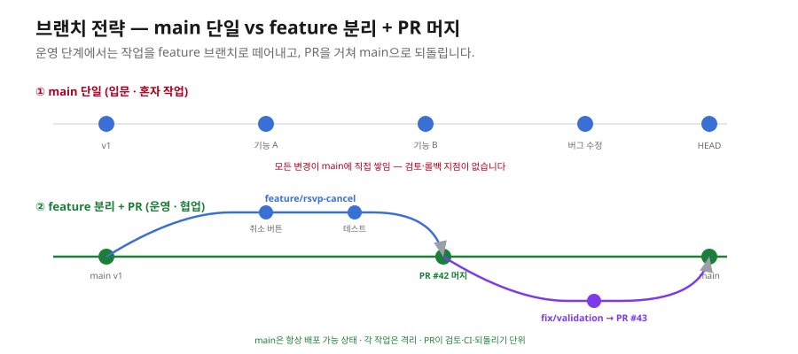
운영 단계에서는 작업을 feature 브랜치로 떼어냅니다. main은 "항상 배포 가능한 상태"로 보존하고, 새 기능이나 수정은 별도 브랜치에서 진행한 뒤 PR을 거쳐 main으로 되돌립니다. 이렇게 하면 세 가지를 얻습니다. 첫째, main이 늘 안정적이라 언제든 배포할 수 있습니다. 둘째, 각 작업이 격리되어 서로를 깨뜨리지 않습니다. 셋째, PR이 검토·CI 검증·되돌리기의 단위가 됩니다.
브랜치를 운영하는 방식에는 두 가지 대표 흐름이 있습니다.
Git Flow (전통, 무거움) — 브랜치 종류가 많습니다. main(프로덕션), develop(다음 릴리스), feature/*(새 기능), release/*(릴리스 준비), hotfix/*(긴급 수정)로 역할을 나눕니다. 릴리스 주기가 명확하고 여러 버전을 동시에 관리하는 큰 팀에 맞습니다.
GitHub Flow (단순, 권장) — main은 항상 배포 가능하고, 작업은 feature/* 또는 <이름>/<주제> 브랜치에서 하며, PR로 main에 머지합니다. 규칙이 단순해 소규모 팀이나 1인 운영에 잘 맞습니다.
RSVP 서비스 정도의 규모라면 GitHub Flow가 적절합니다. 릴리스 사이클이 복잡해지기 전까지 굳이 Git Flow의 무게를 감당할 이유가 없습니다.
1.2 브랜치 명명 규칙
브랜치 이름에 접두어(prefix)를 통일하면 PR 목록만 봐도 그 작업의 성격을 즉시 알 수 있습니다.
| 접두어 |
의미 |
예 |
feature/ |
새 기능 |
feature/event-rsvp-cancel |
fix/ |
버그 수정 |
fix/rsvp-validation-error |
chore/ |
의존성·설정 |
chore/update-deps |
docs/ |
문서 |
docs/setup-guide-update |
refactor/ |
리팩터링 |
refactor/extract-rsvp-form |
RSVP에서 "참석자가 본인 신청을 취소하는 기능"을 추가한다면 브랜치 이름은 feature/event-rsvp-cancel이 됩니다. 이 브랜치 위에서 취소 버튼 UI를 붙이고, participants 테이블에 상태 컬럼(active·cancelled)을 더하고, "본인이 만든 행만 수정 가능"하도록 RLS 정책을 갱신하는 일련의 변경이 하나의 작업 단위로 묶입니다. Cowork에게는 "feature/event-rsvp-cancel 브랜치를 만들고 그 위에서 RSVP 취소 기능을 추가해줘"처럼 자연어로 지시하면, 브랜치 생성부터 관련 파일 수정·커밋까지 한 흐름으로 처리합니다.
실제로 이 흐름을 명령어로 풀어 쓰면 다음과 같습니다. 기획자가 외울 필요는 없지만, Cowork이 무엇을 실행하는지 읽을 수 있으면 됩니다.
# 최신 main에서 새 feature 브랜치를 만들며 전환
git switch -c feature/event-rsvp-cancel
# ... RSVP 취소 기능 작업 후 ...
git add .
git commit -m "feat: 이벤트 RSVP 취소 기능 추가" # Conventional Commits 규격
git push -u origin feature/event-rsvp-cancel # 원격에 브랜치 올리기
# GitHub CLI로 PR 생성 (제목·본문을 함께 지정)
gh pr create --title "feat: RSVP 취소 기능" \
--body "본인 신청만 취소 가능하도록 RLS·UI·상태 컬럼 추가"
2. PR(Pull Request) 워크플로우
2.1 PR이란 무엇인가
PR(Pull Request)은 브랜치의 변경 사항을 main에 머지하기 전, 다른 사람의 검토를 받는 자리입니다. 혼자 운영하더라도 PR을 거치는 것이 좋습니다. PR을 열면 변경 사항이 자연스럽게 정리·문서화되고, 자동 검사(CI·테스트·lint)의 통과 여부를 확인할 수 있으며, 미리보기 배포로 실제 동작을 눈으로 보고, 머지와 동시에 자동 배포가 이어지기 때문입니다.
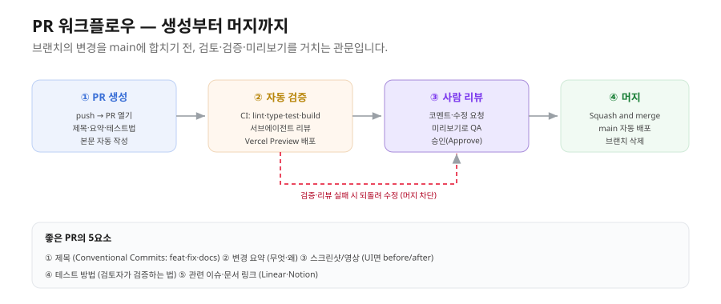
Cowork은 이 흐름과 잘 맞물립니다. Git 저장소의 상태(staged·unstaged·untracked)를 스스로 인식하고, diff의 의미를 읽어 커밋 메시지를 제안합니다. 예를 들어 RSVP 폼을 수정하고 참가자 조회 API를 추가했다면, 그 변경을 분석해 다음과 같은 커밋 메시지를 만들어냅니다.
feat: 이벤트 RSVP 취소 기능 추가
- RsvpForm에 취소 버튼 UI 추가
- participants 테이블에 status 컬럼 추가 (active/cancelled)
- Supabase RLS 정책 갱신
사용자가 승인하면 커밋과 push가 이어지고, PR 본문도 같은 분석을 바탕으로 자동 작성됩니다. 검토자는 "무엇이 왜 바뀌었는지"를 즉시 파악할 수 있습니다. 저장소가 GitHub와 연결돼 있다면 push 후 GitHub MCP를 통해 PR을 열고, Vercel이 자동으로 미리보기를 배포한 뒤 그 URL을 PR 코멘트로 붙이는 데까지 한 번에 이어집니다.
2.2 좋은 PR의 5요소
검토자가 빠르고 정확하게 판단하려면 PR이 갖춰야 할 다섯 가지가 있습니다.
- 제목 — Conventional Commits 형식을 씁니다(
feat:·fix:·docs: 등). 제목만 봐도 변경의 성격을 알 수 있습니다.
- 변경 요약 — 무엇을, 왜 바꿨는지 적습니다. "어떻게"보다 "왜"가 검토에 중요합니다.
- 스크린샷·영상 — UI 변경이라면 before/after를 붙입니다. RSVP 취소 버튼이 어떻게 보이는지 글보다 그림이 빠릅니다.
- 테스트 방법 — 검토자가 이 변경을 어떻게 검증하는지 단계로 적습니다.
- 관련 이슈·문서 — Linear 티켓이나 Notion 문서 링크를 답니다. 맥락이 흩어지지 않습니다.
2.3 PR 자동 리뷰 — 서브에이전트 + GitHub MCP
중급 3강에서 다룬 서브에이전트가 여기서 진가를 발휘합니다. PR이 열리면 code-reviewer·security-reviewer·ui-reviewer 세 전문가를 호출해 각자의 관점(품질·보안·UI)에서 검토한 결과를 PR 코멘트로 자동 게시하게 할 수 있습니다. 사람이 리뷰에 들어가기 전에 기계적인 1차 검토가 이미 끝나 있는 셈입니다. RSVP라면 참석 신청 API의 중복 처리, JWT 검증 누락, 모바일에서 정원 표시가 잘리는지 같은 항목을 각 전문가가 나눠서 봅니다.
정기적인 자동화가 필요하면 GitHub Actions 워크플로우 안에서 Cowork을 Headless 모드로 호출할 수도 있습니다. 화면 없이 백그라운드에서 실행되며, 접근 가능한 도구를 제한(예: git·bash만 허용)해 보안을 확보합니다. 예를 들어 "매주 월요일 오전, 지난주 커밋 이력을 분석해 개선점을 정리하고 GitHub 이슈로 제안"하는 정기 작업을 무인으로 돌릴 수 있습니다. 분석 결과를 Slack 채널로 요약해 보내면 팀이 자리를 떠나지 않고도 공유받습니다. 다만 이런 자동화는 편의만큼 위험도 커지므로, 허용 도구를 최소로 좁히고 결과에 사람의 승인 단계를 두는 것이 원칙입니다.
⚠️ 자동화의 권한 경계 — Headless로 도는 에이전트에 git push나 외부 API 호출까지 열어주면, 의도치 않은 변경이 무인으로 실행될 수 있습니다. 자동화일수록 --allowedTools로 도구를 좁히고, main에 직접 쓰는 대신 반드시 PR을 경유하게 설계합니다.
3. rebase vs merge — 언제 어느 것을 쓰나
3.1 이력을 합치는 세 가지 방식
브랜치의 변경을 다른 브랜치로 합칠 때, 결과물은 같아도 남는 이력의 모양이 달라집니다. 이 모양의 차이가 나중에 이력을 읽고 되돌리는 난이도를 좌우합니다.
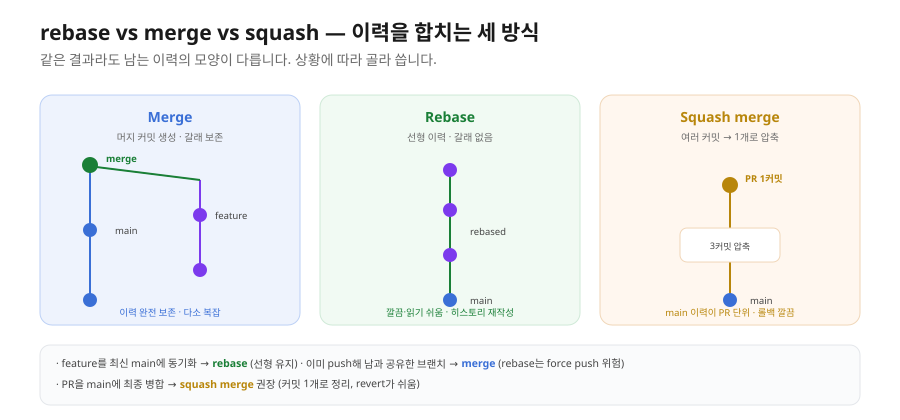
Merge는 두 갈래를 합치면서 "머지 커밋"을 새로 하나 만듭니다. 브랜치가 언제 갈라져 언제 합쳐졌는지가 이력에 그대로 남습니다. 완전한 기록이지만 갈래가 많아지면 이력이 복잡해 보입니다.
Rebase는 내 브랜치의 커밋들을 최신 main 위로 "옮겨 붙여" 갈래 없이 선형 이력을 만듭니다. 읽기 깔끔하지만, 커밋 해시가 바뀌므로 히스토리를 재작성하는 셈입니다.
Squash merge는 PR 안의 여러 커밋을 하나로 압축해 main에 얹습니다. main의 이력이 "PR 하나 = 커밋 하나"로 정돈되어 읽기 좋고, 되돌리기(revert)가 깔끔합니다.
3.2 선택 기준
| 상황 |
권장 |
이유 |
| feature 브랜치를 최신 main으로 동기화 |
rebase |
선형 이력 유지, 충돌을 미리 흡수 |
| feature를 main에 최종 병합 |
squash merge (또는 merge) |
main 이력이 PR 단위로 정리됨 |
| 이미 push해 남과 공유한 브랜치 |
merge |
rebase는 force push가 필요해 협업 시 위험 |
핵심 원칙은 이렇습니다. 아직 나 혼자 보고 있는 브랜치를 정리할 때는 rebase가 좋지만, 이미 남과 공유한(push한) 브랜치를 rebase하면 상대의 이력과 어긋나 사고가 납니다. 이 경우는 merge를 씁니다. 그리고 PR을 main에 최종 병합할 때는 GitHub의 "Squash and merge" 버튼을 쓰는 것이 대체로 가장 깔끔합니다.
4. 충돌(Conflict) — 해결과 예방
4.1 충돌은 언제 발생하나
충돌은 두 브랜치가 같은 파일의 같은 라인을 서로 다르게 바꿨을 때 생깁니다.
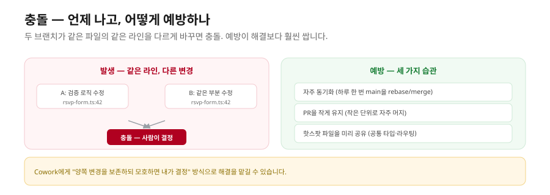
Git이 어느 쪽을 채택할지 스스로 판단할 수 없으므로 사람에게 결정을 넘깁니다. 예를 들어 A가 RSVP 폼의 검증 로직을 고치는 동안 B도 같은 부분을 다르게 고쳤다면, 두 변경을 합칠 때 충돌이 납니다.
Cowork에게 충돌 해결을 맡길 수 있습니다. 충돌 파일을 식별하고, 양쪽 변경의 의미를 분석해, 합칠 수 있으면 자동으로 병합하되 그 결과를 plan으로 먼저 보여줍니다. 의미상 모호해서 어느 쪽이 옳은지 판단이 필요한 부분은 자동으로 결정하지 않고 사용자에게 되묻습니다. "양쪽 변경을 모두 보존하는 형태로 자동 해결하되, 정말 모호하면 내가 결정하게 해줘"처럼 지시하는 방식입니다.
긴급 상황에서 병렬 작업이 필요할 때는 Git Worktree가 유용합니다. 현재 feature 브랜치 작업을 그대로 둔 채, main의 급한 버그를 고치는 hotfix 브랜치를 별도 디렉터리에서 독립적으로 열 수 있습니다. 각 워크트리는 독립적인 node_modules·빌드 캐시를 유지하므로 두 작업이 서로를 방해하지 않고, 각각 main에 머지될 때까지 충돌 없이 진행됩니다. 중급 3강의 isolation: worktree가 서브에이전트 병렬 실행에서 같은 원리로 충돌을 막았던 것을 떠올리면 됩니다.
4.2 충돌 예방
충돌은 해결보다 예방이 훨씬 쌉니다. 세 가지 습관이 효과적입니다.
- 자주 동기화한다 — 하루 한 번 정도
main의 변경을 본인 브랜치에 rebase/merge해 두면, 한꺼번에 큰 충돌이 나는 일을 막을 수 있습니다.
- PR을 작게 유지한다 — 변경 범위가 클수록 충돌 가능성이 커집니다. 작은 단위로 자주 머지합니다.
- 핫스팟 파일을 미리 알린다 — 여러 사람이 자주 건드리는 파일(예: 공통 타입 정의, 라우팅 설정)은 작업 전에 팀에 공유해 동시 수정을 피합니다.
5. GitHub Actions — CI/CD
5.1 CI/CD란 무엇인가
CI(지속적 통합)는 코드가 합쳐질 때마다 자동으로 검사를 돌리는 것이고, CD(지속적 배포)는 검사를 통과한 코드를 자동으로 배포하는 것입니다. 둘을 합친 파이프라인을 GitHub Actions로 구성하면, PR이 열릴 때마다 사람이 손대지 않아도 일련의 검사가 자동으로 돌아갑니다.
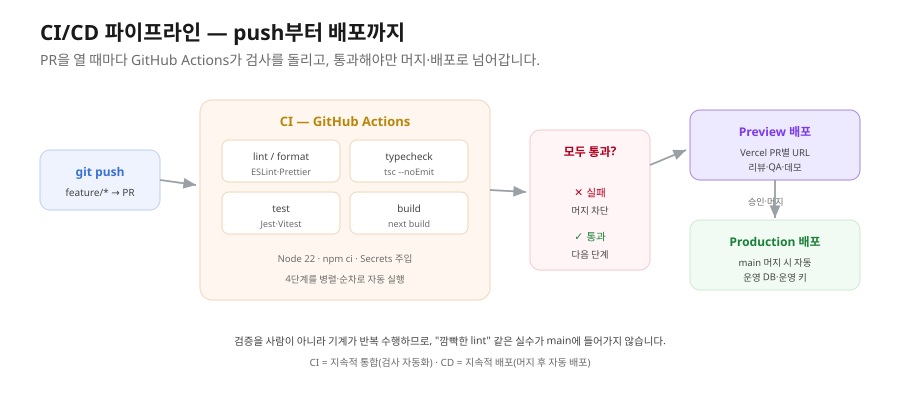
파이프라인의 뼈대는 이렇습니다. 누군가 feature 브랜치를 push해 PR을 열면, GitHub Actions가 네 가지 검사를 실행합니다. lint·format(ESLint·Prettier로 코드 스타일·명백한 버그 점검), typecheck(tsc --noEmit으로 타입 오류 점검), test(Jest·Vitest로 테스트 실행), build(next build로 빌드가 깨지지 않는지 확인)입니다. 여기에 보안 스캔을 더하기도 합니다.
이 검사가 모두 통과해야만 머지가 가능합니다. 하나라도 실패하면 머지가 차단됩니다. 통과하면 Vercel이 PR별 미리보기를 배포하고, 사람 리뷰와 QA를 거쳐 승인된 뒤 main에 머지되면 운영(Production) 배포가 자동으로 이어집니다.
5.2 워크플로우가 담는 것
CI 설정은 .github/workflows/ci.yml 같은 파일에 담깁니다. 개념적으로 그 파일이 정하는 것은 다음과 같습니다.
- 언제 도는가 — PR이 열릴 때,
main에 push될 때.
- 어떤 환경에서 — Node 22 같은 실행 환경을 고정하고,
npm ci로 의존성을 깨끗이 설치합니다.
- 무엇을 검사하는가 — lint → typecheck → test → build 순서로 실행합니다.
- 비밀 값은 어디서 — Supabase URL·키 같은 값은 코드에 두지 않고 GitHub Secrets에서 주입합니다.
RSVP 서비스라면 이 CI 덕분에 "정원 계산 로직에 타입 오류가 있는 채로 배포되는" 사고를, 사람의 주의력이 아니라 파이프라인이 걸러냅니다. 실패·성공 결과를 Slack 채널로 알리게 붙여두면 팀 전체가 빌드 상태를 실시간으로 지켜볼 수 있습니다.
개념을 실제 ci.yml로 옮기면 아래와 같은 모습입니다. 각 줄이 위의 네 가지(언제·어디서·무엇을·비밀 값)에 대응합니다.
# .github/workflows/ci.yml
name: CI
on: # 언제 도는가
pull_request: # PR이 열릴 때
push:
branches: [main] # main에 push될 때
jobs:
verify:
runs-on: ubuntu-latest # 어떤 환경에서
steps:
- uses: actions/checkout@v4
- uses: actions/setup-node@v4
with: { node-version: 22 } # Node 22 고정
- run: npm ci # 의존성 깨끗이 설치
- run: npm run lint # lint → typecheck → test → build 순
- run: npm run typecheck
- run: npm test
- run: npm run build
env: # 비밀 값은 GitHub Secrets에서 주입
SUPABASE_URL: ${{ secrets.SUPABASE_URL }}
💡 기획자가 얻는 것 — CI/CD가 갖춰지면 "이 PR은 검사를 다 통과했는가"가 배포 가능 여부의 객관적 기준이 됩니다. "돌려봤는데 잘 되던데요" 같은 주관적 판단 대신, 파이프라인의 초록·빨강으로 상태를 공유할 수 있어 일정 논의가 명확해집니다.
파트 2 — Supabase 운영
6. OAuth 로그인 — 익명 RSVP의 한계를 넘어
6.1 왜 로그인이 필요한가
입문의 RSVP는 익명이었습니다. 누구든 이름만 적으면 신청할 수 있었습니다. 프로토타입으로는 충분하지만, 운영에서는 곧 벽에 부딪힙니다. "본인 신청만 취소할 수 있어야 하는데", 신청자가 누구인지 신뢰할 수 없으면 이 규칙을 강제할 수 없습니다. 본인 신청 이력 조회, 확인 메일 발송, 중복 신청 방지도 모두 "이 요청이 누구의 것인가"를 알아야 가능합니다.
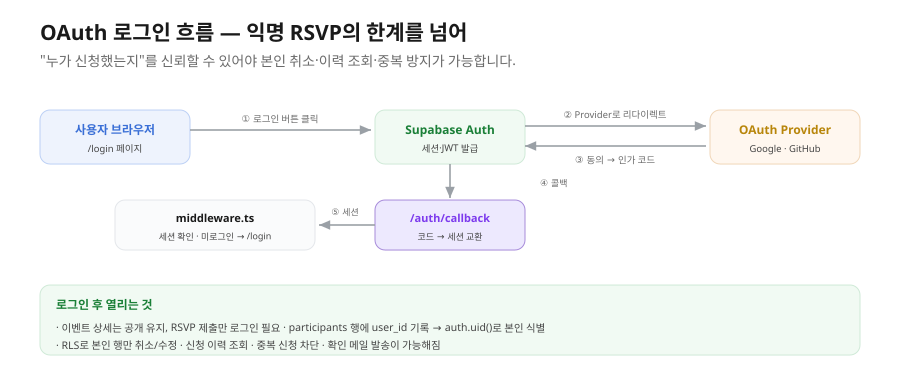
이 문제를 OAuth 로그인으로 풉니다. Google·GitHub 같은 신뢰할 수 있는 제공자에게 신원 확인을 위임하고, Supabase Auth가 그 결과로 세션과 JWT를 발급합니다. 흐름은 이렇습니다. ① 사용자가 /login에서 로그인 버튼을 누르면 ② Supabase가 Provider로 리다이렉트하고 ③ 사용자가 동의하면 Provider가 인가 코드를 돌려주며 ④ 이 코드가 /auth/callback에서 세션으로 교환되고 ⑤ middleware.ts가 이후 요청마다 세션을 확인해, 로그인하지 않은 사용자를 /login으로 돌려보냅니다. 클라이언트에서 로그인 버튼이 부르는 코드는 아래처럼 짧습니다.
// Google 로그인 시작 — 동의 후 /auth/callback으로 돌아옴
const { error } = await supabase.auth.signInWithOAuth({
provider: 'google',
options: { redirectTo: `${location.origin}/auth/callback` },
})
// 로그아웃
// await supabase.auth.signOut()
6.2 부분 공개 설계
로그인을 도입한다고 모든 페이지를 잠글 필요는 없습니다. RSVP에서는 이벤트 상세는 공개로 두고, RSVP 제출만 로그인을 요구하는 것이 자연스럽습니다. 누구나 이벤트를 둘러볼 수 있지만, 신청하려면 로그인해야 하는 구조입니다. 로그인한 사용자가 신청하면 participants 행에 user_id가 기록되고, 이후 auth.uid()로 "이 행이 누구 것인지"를 식별할 수 있게 됩니다. 이 user_id 컬럼이 다음 절의 RLS가 딛고 서는 기반입니다.
Supabase 대시보드에서는 Authentication → Providers에서 Google·GitHub를 활성화합니다. 각 Provider는 해당 서비스(Google Cloud Console, GitHub OAuth Apps)에서 클라이언트 ID·Secret을 발급받아 Supabase에 입력하고, Supabase가 제공하는 Redirect URL을 그쪽 설정에 등록하는 방식으로 연결됩니다. 이 부분은 대시보드에서의 수동 설정이 필요한 지점입니다.
7. RLS 정책 심화 설계
7.1 RLS 6패턴
RLS(Row Level Security, 행 단위 보안)는 "이 행을 이 역할이 볼(또는 바꿀) 수 있는가"를 SQL 조건식으로 정의하는 장치입니다. 입문에서 한 세트만 다뤘다면, 운영에서는 상황별로 조합할 여러 패턴을 알아야 합니다. 아래 여섯 가지가 실무의 뼈대이며, 넓은 것부터 좁은 순서로 나열했습니다.
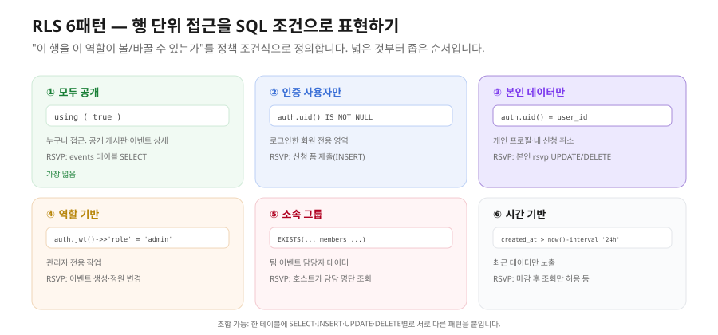
| 패턴 |
조건식 |
사용처 (RSVP 예) |
| ① 모두 공개 |
true |
공개 게시판·이벤트 상세(events SELECT) |
| ② 인증 사용자만 |
auth.uid() IS NOT NULL |
회원 전용 영역·신청 폼 제출(INSERT) |
| ③ 본인 데이터만 |
auth.uid() = user_id |
개인 프로필·본인 RSVP 취소(UPDATE/DELETE) |
| ④ 역할 기반 |
auth.jwt() ->> 'role' = 'admin' |
관리자 작업·이벤트 생성·정원 변경 |
| ⑤ 소속 그룹 |
EXISTS (SELECT 1 FROM members WHERE group_id = ... AND user_id = auth.uid()) |
호스트가 담당 이벤트 명단 조회 |
| ⑥ 시간 기반 |
created_at > now() - interval '24 hours' |
최근 데이터만·마감 후 조회 제한 |
이 패턴들은 배타적이지 않습니다. 한 테이블에 작업(SELECT·INSERT·UPDATE·DELETE)별로 다른 패턴을 붙일 수 있습니다. 예를 들어 participants 테이블이라면 이렇게 조합합니다.
- SELECT: 인증 사용자는 본인 신청과 같은 이벤트의 다른 참가자를 볼 수 있게(②+맥락 조건)
- INSERT: 인증 사용자면 신청 가능(②)
- UPDATE / DELETE: 본인 행만(③,
auth.uid() = user_id)
events 테이블이라면 SELECT는 모두 공개(①), INSERT·UPDATE·DELETE는 관리자만(④)으로 둡니다. OAuth로 확보한 user_id가 없었다면 ③·⑤ 같은 패턴은 아예 성립하지 않았을 것입니다. 6.1의 로그인 도입이 여기서 결실을 맺습니다.
로그인 사용자가 본인 신청만 취소·수정하도록 하는 정책은 개념적으로 다음과 같은 형태입니다.
-- 인증된 사용자가 본인 행만 update
create policy "User can update own RSVP"
on participants for update to authenticated
using (auth.uid() = user_id)
with check (auth.uid() = user_id);
using은 "어떤 행을 대상으로 삼을 수 있는가"(읽기·대상 선정)를, with check는 "바꾼 결과가 여전히 조건을 만족하는가"(쓰기 검증)를 담당합니다. 둘을 함께 걸어야 "남의 행을 내 것으로 위장해 바꾸는" 우회를 막을 수 있습니다.
7.2 정책 디버깅
RLS는 강력한 만큼 디버깅이 까다롭습니다. 실무에서 "왜 데이터가 안 나오지?"의 상당수가 실은 정책 문제입니다. 데이터는 멀쩡히 있는데 현재 역할에 맞는 정책이 없어 빈 결과가 돌아오는 것입니다.
두 가지 접근이 도움이 됩니다. 첫째, Supabase 대시보드의 SQL Editor에서 특정 역할을 흉내 내어 시뮬레이션합니다. 역할을 authenticated로 설정하고 특정 사용자의 JWT 클레임을 주입한 뒤 쿼리를 돌려, 그 사용자에게 무엇이 보이는지 직접 확인하는 방식입니다.
set role authenticated;
set request.jwt.claims = '{"sub": "user-uuid"}';
select * from participants;
둘째, Cowork에게 정책을 분석하게 합니다. "participants 테이블의 모든 RLS 정책을 보여주고, anon·authenticated·service_role 각 역할에서 어떤 작업이 가능하고 어떤 것이 차단되는지 표로 정리해줘"처럼 지시하면, 흩어진 정책을 역할×작업 매트릭스로 정리해 사각지대를 드러냅니다.
⚠️ service_role은 RLS를 우회한다 — 서버에서 쓰는 service_role 키는 RLS를 통째로 건너뜁니다. 편하다고 클라이언트나 공개 코드에 이 키를 노출하면 모든 접근 제어가 무력화됩니다. service_role은 반드시 서버 측(예: Edge Function, API Route)에서만, 환경 변수로만 다룹니다.
8. Realtime 구독
8.1 Realtime이란
Realtime은 DB의 변경 사항을 실시간으로 클라이언트에 밀어(push) 주는 기능입니다. 새 RSVP 신청이 들어오면, 그 화면을 보고 있는 다른 사용자와 주최자 대시보드에 즉시 반영됩니다. 새로고침을 누를 필요가 없습니다.
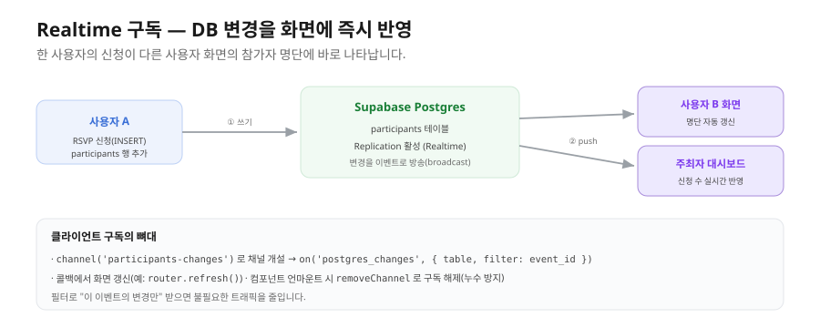
동작은 이렇습니다. 사용자 A가 신청해 participants 테이블에 행이 추가되면, Realtime이 활성화된 Postgres가 이 변경을 이벤트로 방송(broadcast)합니다. 이 채널을 구독하고 있던 사용자 B의 화면과 주최자 대시보드가 그 이벤트를 받아 명단을 자동으로 갱신합니다.
8.2 구독의 뼈대
클라이언트 쪽에서는 채널을 열고, 관심 있는 테이블의 변경을 듣고, 변경이 오면 화면을 갱신하는 세 단계로 구성됩니다.
const channel = supabase
.channel('participants-changes')
.on('postgres_changes',
{ event: '*', schema: 'public', table: 'participants',
filter: `event_id=eq.${eventId}` },
(payload) => { router.refresh() }
)
.subscribe()
// 컴포넌트가 사라질 때: supabase.removeChannel(channel)
여기서 두 가지가 중요합니다. 첫째, filter로 "이 이벤트의 변경만" 받으면 불필요한 트래픽을 줄입니다. 관심 없는 다른 이벤트의 신청까지 모두 받을 이유가 없습니다. 둘째, 컴포넌트가 화면에서 사라질 때 반드시 구독을 해제(removeChannel)해야 합니다. 그러지 않으면 구독이 쌓여 메모리 누수와 중복 갱신을 유발합니다. Supabase 쪽에서는 Database → Replication에서 해당 테이블의 Realtime을 켜 두어야 방송이 시작됩니다.
9. Edge Functions
9.1 Edge Function이란
Edge Function은 Supabase 인프라에서 실행되는 서버 측 비즈니스 로직입니다. Next.js의 API Route와 성격이 비슷하지만, Supabase 인프라에 가까이 있어 DB 호출이 빠르고, 외부 API 키 같은 비밀 값을 서버 안에 안전하게 둘 수 있다는 이점이 있습니다.
대표적인 쓰임새는 이렇습니다. 결제 webhook 처리, 외부 API를 호출하되 그 키를 클라이언트에 노출하지 않기, 사용자별 알림 발송, 그리고 정기 작업(cron) 등입니다. 공통점은 "클라이언트에 두면 위험하거나 무거운 로직을 서버로 옮기는" 것입니다.
9.2 RSVP에서의 사용
RSVP라면 "새 신청이 등록되면 그 사용자에게 확인 메일을 보내는" 로직이 좋은 후보입니다.
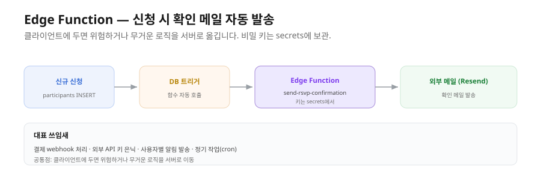
메일 발송에 쓰는 외부 서비스(예: Resend)의 API 키를 클라이언트에 노출할 수는 없으므로, 이 로직을 send-rsvp-confirmation 같은 Edge Function으로 두고 키는 Supabase secrets에 보관합니다. 그리고 participants 테이블에 INSERT가 일어날 때 DB 트리거로 이 함수를 자동 호출하게 연결하면, "신청 → 확인 메일"이 손대지 않아도 흐릅니다. 개념적 배포 흐름은 함수 코드를 배포하고, 비밀 키를 secrets로 등록하고, INSERT 트리거를 거는 세 단계입니다.
10. Storage 심화
10.1 입문에서 다룬 것과의 차이
입문에서 Storage는 공개(public) 버킷을 만들고 파일을 단순 업로드해 공개 URL을 얻는 정도였습니다.
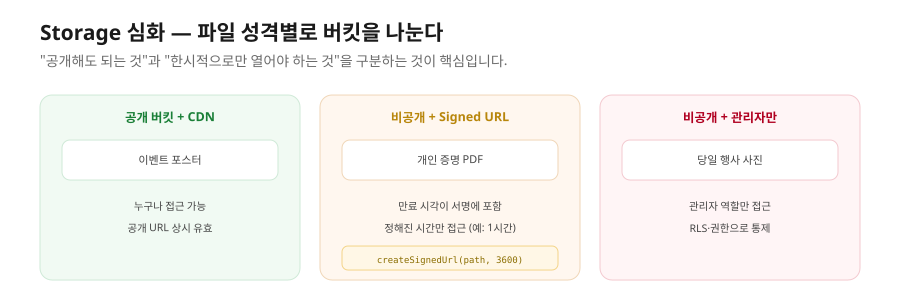
운영에서는 여기에 세 가지가 더해집니다. Signed URL(일정 시간만 유효한 URL로 비공개 파일을 안전하게 공유), 이미지 변환(업로드 시 자동 리사이즈·압축), 접근 통계(누가 언제 무엇을 내려받았는지)입니다.
10.2 Signed URL
비공개 파일을 특정인에게만, 그것도 한시적으로만 열어주고 싶을 때 Signed URL을 씁니다. 서버에서 "이 파일에 대해 1시간 유효한 URL을 만들어달라"고 요청하면, 만료 시각이 서명에 포함된 URL이 발급됩니다. 이 URL을 이메일이나 메시지로 공유하면 정해진 시간 동안만 접근이 되고, 만료되면 자동으로 차단됩니다.
const { data } = await supabaseAdmin.storage
.from('private-docs')
.createSignedUrl('contracts/2026-04.pdf', 3600) // 1시간 유효
RSVP 러닝 예시의 인프라 설계와도 이어집니다. 이벤트 포스터는 공개 버킷 + CDN으로, 개인 증명 PDF는 비공개 버킷 + Signed URL로, 당일 사진은 관리자만 접근하도록 나누는 식입니다. "공개해도 되는 것"과 "한시적으로만 열어야 하는 것"을 파일 성격에 따라 구분하는 것이 운영 단계 Storage 설계의 핵심입니다.
11. 운영을 떠받치는 개발 도구 자동화
파트 1의 CI가 검사를 "합칠 때" 돌린다면, 그 검사가 검사할 대상 자체의 품질을 상시로 지키는 개발 도구들이 있습니다. 명령어를 외울 필요는 없지만, 각각이 무엇을 지키는지는 알아 둘 가치가 있습니다.
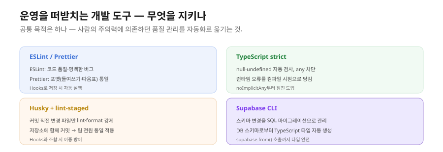
- ESLint / Prettier — ESLint는 코드 품질과 명백한 버그(안 쓰는 변수, 위험한 패턴)를 잡고, Prettier는 포맷(들여쓰기·따옴표·줄바꿈)을 통일합니다. 둘이 충돌하지 않게 설정을 맞추고, 중급 4강의 Hooks로 파일 저장 시 자동 실행하면 수동 정리 작업이 사라집니다.
- TypeScript strict 모드 —
tsconfig의 strict: true는 null·undefined를 자동 검사하고, 모든 파라미터에 타입을 강제하며, 암묵적 any를 차단합니다. 런타임에 터질 오류를 컴파일 시점으로 당겨 잡습니다. 기존 코드가 많으면 noImplicitAny부터 켜고 한 영역씩 정리하는 점진 도입이 현실적입니다.
- Husky + lint-staged — 커밋 직전(pre-commit)에 변경된 파일만 골라 lint·format을 강제합니다. 저장소에 함께 커밋되므로 팀원 모두에게 동일하게 적용됩니다. Hooks(본인 환경에만 적용)와 조합하면, 커밋 전 팀 공통 강제 + 작업 중 본인 추가 검사의 이중 방어가 됩니다.
- Supabase CLI — 스키마 변경을 SQL 마이그레이션 파일로 관리해 팀 모두가 같은 스키마를 공유하고, DB 스키마로부터 TypeScript 타입을 자동 생성해
supabase.from('events') 같은 호출까지 타입 안전하게 만듭니다.
이 도구들의 공통 목적은 하나입니다. 사람의 주의력에 의존하던 품질 관리를 자동화로 옮기는 것입니다. 운영은 실수를 사람이 매번 잡아내는 방식으로는 지속되지 않습니다.
용어 정리
| 용어 |
뜻 |
| 브랜치(branch) |
작업을 격리하는 이력의 갈래. main은 항상 배포 가능 상태로 보존 |
| GitHub Flow |
main + feature 브랜치 + PR로 단순화한 브랜치 전략(소규모·1인 권장) |
| PR(Pull Request) |
브랜치 변경을 main에 머지하기 전 검토·검증을 받는 자리 |
| Conventional Commits |
feat:·fix:·docs: 등 접두어로 커밋·PR 성격을 규격화한 규칙 |
| merge |
두 갈래를 합치며 머지 커밋을 남기는 방식(이력 보존) |
| rebase |
커밋을 최신 base 위로 옮겨 선형 이력을 만드는 방식(공유 브랜치엔 위험) |
| squash merge |
PR의 여러 커밋을 하나로 압축해 main에 얹는 병합(이력 정돈) |
| 충돌(conflict) |
두 브랜치가 같은 라인을 다르게 바꿔 자동 병합이 안 되는 상태 |
| CI/CD |
합칠 때 자동 검사(CI)하고, 통과분을 자동 배포(CD)하는 파이프라인 |
| GitHub Actions |
GitHub 저장소 이벤트에 맞춰 워크플로우를 자동 실행하는 도구 |
| OAuth |
Google·GitHub 등 신뢰 제공자에게 신원 확인을 위임하는 로그인 방식 |
| RLS(Row Level Security) |
행 단위로 접근을 SQL 조건식으로 제어하는 Postgres 기능 |
auth.uid() |
현재 로그인 사용자의 ID. 본인 데이터 판별의 기준 |
| Realtime |
DB 변경을 구독 클라이언트에 실시간으로 push하는 기능 |
| Edge Function |
Supabase 인프라에서 실행되는 서버 측 로직(키 보호·webhook·알림) |
| Signed URL |
만료 시각이 서명에 포함된, 한시적으로 유효한 비공개 파일 URL |
한눈에 정리
- 운영은 네 축의 성숙도다. Git 협업(브랜치·PR·CI/CD), Supabase 심화(OAuth·RLS·Realtime·Edge·Storage), Vercel 환경 분리, 개발 도구 자동화가 갖춰질 때 프로토타입이 운영 서비스가 됩니다.
- PR이 운영의 관문이다. main은 배포 가능 상태로 보존하고, 모든 변경은 feature 브랜치 → PR → 자동 검증(CI·서브에이전트 리뷰·Preview) → 승인 → squash 머지로 흐릅니다. 좋은 PR은 제목·요약·스크린샷·테스트법·링크 5요소를 갖춥니다.
- 이력 합치기는 상황으로 갈린다. 혼자 보는 브랜치는 rebase로 선형 유지, 공유한 브랜치는 merge, 최종 병합은 squash merge. 충돌은 자주 동기화·작은 PR·핫스팟 공유로 예방하는 것이 해결보다 쌉니다.
- 로그인이 RLS의 기반을 놓는다. 익명 RSVP로는 본인 취소·이력·중복 방지가 불가능합니다. OAuth로
user_id를 확보해야 "본인 데이터만"(③) 같은 RLS 패턴이 성립합니다. RLS 6패턴은 작업별로 조합하며, 디버깅은 역할 시뮬레이션으로 접근합니다.
- 품질은 사람이 아니라 파이프라인이 지킨다. CI/CD·ESLint·strict·Husky·마이그레이션은 모두 "사람의 주의력에 의존하던 검증을 자동화로 옮기는" 같은 목적을 향합니다. 운영은 자동화된 안전망 위에서만 지속됩니다.
중급 과정 마무리 — 여기까지가 중급입니다. Cowork 깊은 활용에서 시작해 커스텀 커맨드·서브에이전트·Hooks를 지나, 이번 강에서 프로토타입을 운영 서비스로 끌어올렸습니다. 다음은 고급 과정입니다. 대규모 코드베이스에서의 에이전트 오케스트레이션, 자체 도구·MCP 서버 제작, 그리고 팀 전체를 위한 AI 개발 파이프라인 설계로 나아갑니다.